| 百合色コーディネート ふたりのキス模様 (二次元ドリーム文庫) | |
| あらおし悠 | |
| (2015) | |
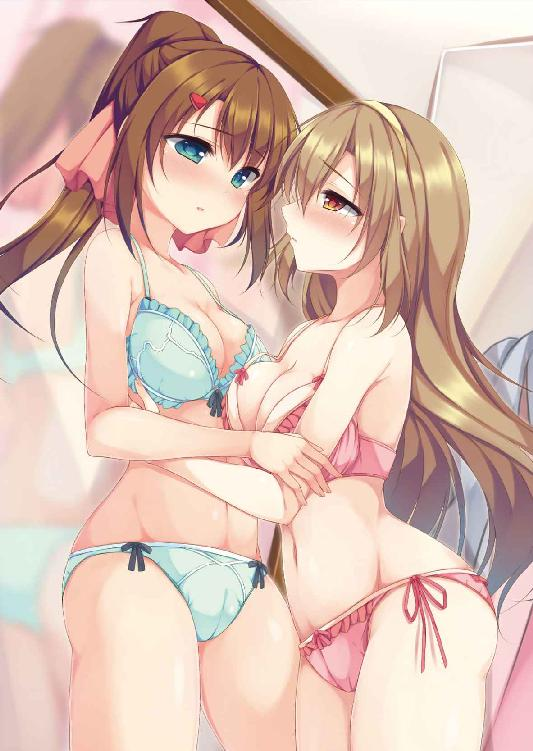
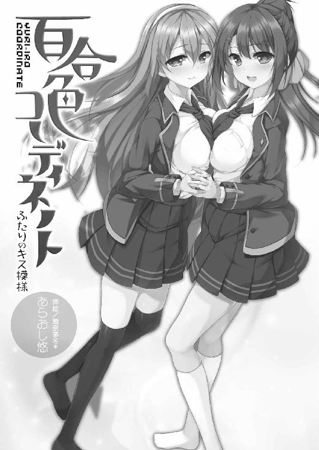
※本作品の全部あるいは一部を無断で複製・転載・配信・送信したり、ホームページ上に転載することを禁止します。本作品の内容を無断で改変、改ざん等行うことも禁止します。また、有償・無償にかかわらず本作品を第三者に譲渡することはできません。
※本作品は電子書籍配信用に再編集しております。
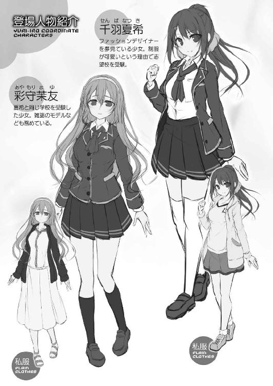
「やばい、やばい......」
駅に着くやいなや電車を飛び出し、制服のスカートが派手にひらめくのを気にする余裕もなく階段を駆け下り、通勤ラッシュの人波を掻き分けながら自動改札を駆け抜ける。背後から駅員さんに怒鳴り声で注意されるけど、胸の中で手を合わせて、あえて無視。
なんたって、今日は大事な本命校の受験日。普段の遅刻とは訳が違う。
もし開始時間に間に合わなくて受けられないなんてことになったら、何のために遊ぶ時間を犠牲にして受験勉強を頑張ったのか分からない。
「なんで肝心な日に寝坊するかなー。もぉー！」
邪魔になったマフラーを外し、ポニーテールの髪を上下に揺らしながらの駆け足で、ぶつけどころのない恨みを吐く。昨夜、なまじ早寝したせいで、今朝は必要以上に早起きしてしまい、つい二度寝してしまったのが大失敗。
「で、でも......この調子なら、なんとか間に合うかな。......よし！」
全力疾走した甲斐あって、時間に余裕ができたみたいだ。それでも念のため、近道することを決定する。たとえ試験開始時刻に間に合っても、息を切らしてまともに問題を解けるはずもない。こんなこともあろうかと、会場の下見の時に見つけておいたルートに方向転換。大通りから細い脇道に入る。これで、さらに時間を稼げるはず。──と思った矢先。
「うわっと!?」
数歩も進まないうちに急制動を強いられた。見慣れない制服の女の子がひとり、腰が引けた格好で、立ちすくむように道を塞いでいる。
「あの......あの......。それ、返して......お願い......」
か細くて、それでいて甘い声。急いでいるにもかかわらず、彼女の音色に聞き入ってしまう。後ろ姿しか見えないけれど、栗色の長い髪と、小さなお尻を戸惑いがちに振って、何やらお困りの様子なのは手に取るようによく分かる。少女の肩越しに向こうを覗けば、視界の先には、どっかりと道に伏せた、人間の赤ちゃんよりも大きな恰幅のいい野良猫。これに怯えているようだけど、気になったのは、その前に落ちている小さな紙切れ。
（あれって......受験票？）
昨夜、自分も忘れないように何度も何度も確認した、それとまったく同じ紙片。どういう理由でか落としてしまったそれを、猫から取り戻せずにいるみたいだ。別に押さえつけられているわけでもないけれど、こちらを睨みつける眼光やふてぶてしい面構えは、隙を見せたら引っ掻かれそうな迫力があって、確かにちょっと怖い。
でも、いつまでもこんな場所で立ち往生していられない。それは彼女も同様のはず。意を決し、背負っていた通学用リュックをぶんぶん振り回して猫に突進した。
「こらー！ そこをどきなさーい！」
急な大声に驚いて、猫が弾かれるように立ち上がる。それでも面倒くさそうにのろのろと立ち去る余裕があるのは、さすがに厳しい野良の世界に生きているだけのことはある。何はともあれ障害は去った。リュックを背負い直し、地面の紙片を拾い上げる。
「はい、どうぞ。えーっと......。彩守......茉友さん」
「あ......ありがとう。でも......」
どうして名前を知っているのかと言いたげに、茉友という少女が驚いた顔をする。もちろん受験票を見たからだけど、ちょっと間の抜けた感じの娘なんだろうか。
でも人のことは言えない。今度は、こちらが言葉を失う番だった。
（うわぁ......。すっごい可愛い娘ぉ......）
百六十センチの自分より、十センチは小さいだろうか。雪のように白い肌。長い睫毛を気弱そうに震わせながらの、上目遣いの大きな瞳。童顔と言っていい幼さを残す顔つきなのに、涙目になって少し濡れているのが色っぽい。それになにより、薄く開いた淡いピンクの唇はぽってり丸くて柔らかそうで、思わず触ってみたくなる誘惑に駆られる。
（いけないいけない。何考えてるんだ、あたしは）
初対面の、しかも自分と同じ女子にこんなに見惚れるなんて。でも、まだ残る恐怖心を抑えるように肩を竦めて、胸の前で両手を握り締める姿はとても可憐で、きっと誰だって抱き締めたくなる。
「......と、こんなことしてる場合じゃなかったね。急ごう」
受験票を渡して、茉友の手を取り走り出す。しかし、彼女の歩幅はトコトコと小走り程度に小さくて、スピードが乗らない。どうしたんだろうと思ったら、こちらの顔を怪訝そうな表情でまじまじと見ている。
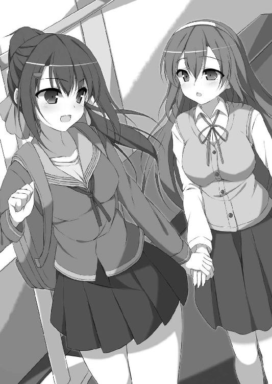
「あの......あなたは一体......」
遅刻ばかりを気にして考えが及ばなかったけど、彼女から見たら、初対面の見知らぬ女の子に手を引かれているわけで、不審に思っても不思議はない。
「ああ、あたし？ あたしもね、あなたと同じ......」
手短に同じ受験生であることだけを告げようとして、そこで、はたと思い直した。彼女の名前を勝手に見たのだから、こちらもちゃんと名乗るべき。走りながら背中のバッグをくるりとお腹に抱えると、中身をガサゴソ漁って受験票を取り出す。
「あたしも、あなたと同じ女子校を受けるんだ。ほら」
「千羽......夏希さん」
夏希の受験票をじっと眺め、ようやく茉友も事情が飲み込めたみたいだ。納得した顔になって、ほんの少しだけど、急ぎ足のスピードを上げる。
「ちょ......ちょっと余計な時間を食っちゃったね」
「あの......ごめんなさい。わたしのせいで......」
息を切らしながら、申し訳なさそうに俯く茉友に、夏希は慌てて彼女を振り返った。
「違う違う！ 悪いのはあのニャンコだって。急いでる時に限って、ああいう邪魔が入るよねー。えーっと、彩守さんだっけ。あなたも近道しようとしたの？」
「う、うん。そんなところ。でも、受験票の地図で道順を確認しようとしたら、あの猫と目が合って、びっくりして落としちゃって......」
「ああ、そうだったんだ。最初、どういう状況か飲み込めなかったよー」
笑う夏希に、茉友の緊張もほぐれてきたみたいだ。強張っていた唇も微笑んでいる。
すると──それを横目で見た夏希の胸の高鳴りが、異様に跳ね上がった。
（い......今の、何？）
駆け足のせいとは明らかに違う、締め付けられるような胸の痛みに、戸惑いを覚えずにいられない。彼女の横顔を盗み見る。子供っぽいながらも整った顔立ち、守ってあげたくなるような儚げな雰囲気が、またも夏希の呼吸を乱す。
（えっと......ええっと......）
なぜか、急に彼女の顔を見るのが恥ずかしくなってきた。その理由が分からないまま、自分を落ち着かせるように胸を押さえる。走りながら視線を泳がせ、気を逸らせるような話題を慌てて探す。そして、酸素の足りなくなった頭にしては、いい話題を見つけた。
「そそ......そういえばっ！ 彩守さんはどうしてこの学園を？」
「あ、えっと......色々と都合がよくて。その......通学とか......色々」
色々、という部分に含みを感じるけど、初対面の女の子の個人的な事情を、根掘り葉掘りするつもりはない。関心は示しつつ、軽く「へー」と聞き流す。
「その......千羽さんは？」
今度は、茉友が遠慮がちに聞いてきた。彼女の方から話しかけてくれるのが、なんだか妙に嬉しくて、弾んだ声で本音を語ってしまう。
「制服が可愛いから！」
「そ......それだけ？」
「うん！ ......あ」
茉友の眼が真ん丸になる。もしかして、何も考えていない奴だと呆れられてしまっただろうか。でも、赤面する夏希をよそに、彼女は楽しそうにクスクス笑った。
「そうだよね。あそこの制服、可愛いもんね」
それまで頼りなげだった彼女の指が、キュッと、夏希の手を握り返す。
「い......一緒に合格できるといいね」
舌をもつれさせながら、やっとの思いでそれだけの言葉を絞り出す。受験という、人生の大事な岐路に立ち向かうのはこれからなのに、夏希は早くも、この無邪気な微笑みだけで合格したような、そんな幸せな気分に浸る。
「あっ。学園、見えたよ！」
茉友の声が弾んだ。走り続けて息が苦しいはずなのに、ふたりは、どちらからともなく向かい合ってにっこり微笑み、手を繋いだまま校門に駆け込んだ。
うららかな春の日差しの日、ちょっとだけ肌寒い体育館の中。整然と並んだパイプ椅子に、新品の赤いブレザーの制服を着た新入生が、緊張と高揚の面持ちで座っている。
どうにかこうにか志望校に合格できた夏希も、無事、この入学式に出席できていた。
事前の模試では合格判定ギリギリといった感じだったし、当日なんて寝坊したし、正直なところ自信は薄かった。それだけに、合格発表で自分の番号を見つけた時は、喜ぶより先に我が目を疑ったくらいだ。
（やっぱあれかな。あの娘があたしの幸運の女神だったのかな）
試験日の朝に出会った、小柄で気弱そうな美少女。電車を一本乗り遅れなければ、近道をしようとしなければ、あの娘と知り合うことはなかったはず。そう考えると、ちょっぴり運命めいたものを感じてしまう。
（あの娘は、どうだったのかなぁ......）
同じクラスにはいなかった。晴れの入学式の最中にもかかわらず、夏希は彼女の姿を求めて視線を巡らせた。学園長のありがたい長話より、彼女の方がよっぽど大事。もちろんよそ見できる状態ではないので、基本的に前方しか見られないけれど、それでも目を皿のようにして、あの栗色のロングヘアを探し求める。
（............いた！）
夏希の斜め前方、一番前の列に座っている後ろ姿は、間違いなくあの娘。隣のクラスだったみたいだ。顔も見えていないのに、発見すると同時に、また胸の奥が無性に高鳴る。
（でもよかったぁ......。あの娘も合格できてたんだ）
彼女のおかげで夏希が合格できたとしても、その逆は洒落にならない。間違っても、夏希は誰かにご利益を与えられるような存在じゃないから。もし自分と会ったせいで彼女の運勢が落ちて不合格だったら、責任を感じずにいられないところだ。
（名前、何ていったっけ。変わった名字だったんだよなぁ）
あの時は急いでいたし、受験票で名前を盗み見ただけなので、あまり記憶に残っていない。でも、滅多にお目にかかれないような可愛らしい顔だけは、しっかりと覚えていた。
（ええっと、確か......あやもりさん？ そうだそうだ、彩守茉友。んふ。でも、あんなに背中ピンとさせて......可愛いなぁ......）
背筋を伸ばした綺麗な姿勢は、一見すると緊張しているようにも見える。けれど、それが身に着いているように自然で無理がない。そういえば、出会った時も慌てている割に物腰が上品だった。育ちの良さを感じさせるし、もしや、どこかのご令嬢なんだろうか。
なんにしても、あの娘と学園生活が送れたら楽しいだろう。なんて想像を巡らせていたら、何が行われていたのか一切覚えがないまま、入学式が終わっていた。
しかし──。
入学から一ヶ月近く経ったのに、茉友とは話す機会さえ訪れなかった。
まず、隣とはいえクラスが違うと、合同の授業でもない限り、あまり顔を合わせることがない。そもそも、夏希自身が新しいクラスに馴染むのに一生懸命だったこともあって、あまり彼女にまで気を回す余裕がなかった。
しかし、そんな理由を抜きにしても、茉友の姿を見ないのは不思議だった。休み時間に何度か隣のクラスを覗き見したけれど、一度も彼女を見かけたことはない。
そして、そのうち、探すのをためらうようになっていた。
なにしろ、受験の朝にちょっと言葉を交わしただけ。ほんの一瞬の出会いに過ぎず、彼女が夏希のことを覚えていなくてもおかしくない。というか、その可能性の方が高い。そう思ったらなんとなく怖くて、友達面して近づくなんてできなかった。
「隣のクラスが遠い......」
ある日の昼休み、夏希は虚空を見詰め、机に広げた小さなスケッチブックに手の動くまま鉛筆を走らせながら、ぼんやりと呟いた。
「──え？」
その小さな声に、前の座席のクラスメイト、及川恵美が怪訝そうな顔を上げる。彼女は彼女で椅子をこちらに向けて、なんとなくファッション雑誌を鑑賞中。けれど夏希の呟きは、聞き流すには意味不明すぎたらしかった。
「......隣がどうしたって？」
「え？ あたし何か言った？」
恵美に問い掛けられて、夏希も我に返って顔を上げる。
「言った言った。隣のクラスがどうって。てか夏希、入学してからボーっとしてること多いよ。五月病？」
無遠慮に顔を覗き込んでくる彼女は、進学前からの友達。いつもの夏希を知っているからか、らしくないと感じたみたいだ。
「何よ。あたしが物思いに耽ったらおかしい？」
「おかしい。夏希って物事を深く考えるタイプじゃないし。考えなしで動くこと多いし」
「失礼なっ」
あんまりな物言いだけど、残念ながら少なからず自覚があるので腹は立てられない。しかしそう考えると、茉友に関しては随分と慎重になっている気がする。
（いやいや......。あたしだって、考える時は考えるんだから。例えば......）
手元のスケッチブックに目を落とす。これが夏希の、人には言いづらい考えごと。一見すると単なる女性のイラストだけど、ただの他愛のない落書きなんかじゃない。
メインは、服。それも自分で考え、デザインしたものばかり。
こう見えて夏希は、ファッションデザイナーを目指していた。昔から授業中に落書きばかりしていたけれど、気がつけば、それはオリジナルの洋服を考える作業になっていた。
元々お洒落には興味があった。というよりも、それしか趣味がなかったというべきか。いま着ている制服だって、ブレザーの前を開けたり、胸元の水色スカーフをちょっと緩めたりして、もっと可愛くできないかと、あれこれ工夫しているつもり。やりすぎると先生に目をつけられてしまうので、あまり派手なことはできないけれど。
なぜファッションなのかといえば、きっと子供の頃の体験のせいなんだろうと思う。
今でこそ母親は専業主婦だけど、小さかった頃は両親とも仕事が忙しくて、よく祖母の家に預けられた。そこで夢中になった遊びといえば、おままごと。祖母のお喋りが面白くて、ゲームやテレビなんかよりも、お人形を使った遊びの方が楽しかった。そのせいか、祖母はたくさんのお人形と、着せ替えのための服を買い与えてくれた。あんまりたくさん買ったので、夏希自身の服よりも数が増えてしまい、母親が祖母に苦情を言ったくらい。
ともかく、祖母が亡くなってからも、着せ替え人形が夏希の一番のお気に入りの遊びだった。そして色とりどりの洋服を見ているうちに、自分だけの洋服が欲しくなった。もちろん自分では作れないので、落書きで満足していただけ。けれども、その趣味は飽きることなく、今の夢に続いているのだと思う。
だから、夏希がファッション関係の道に進みたいと思っているのは、子供の遊びの延長のようなもの。深い根拠や動機があってのことじゃない。それに、現状では「なれたらいいな」程度にしか考えていないこともあって、誰かに喋ったこともなかった。恵美も、夏希をただの落書き好きだとしか思っていない。
（だって......デザイナーになりたいなんて、そんな夢みたいな夢、恥ずかしいじゃない）
夏希だって、ただのお気楽少女じゃないのだ。ただ、考えるのが苦手なだけで。
「そうそう。おかしいって言えばさ、夏希、知ってる？」
何をきっかけに思い出したのか、恵美が急に話題を変えた。夏希の変な様子は、彼女の中では重要事項ではなかったらしい。
「知ってるって......何を？」
「隣のクラスに、ファッションモデルをしてる娘がいるんだって」
彼女は読んでいたファッション雑誌を手の甲でぽんと叩き、やや興奮気味に声のトーンを上げた。それは夏希も興味を惹かれる話題ではあるけれど。
「モデルって......どうせ読者モデルでしょ？」
ファッション雑誌の読者が、スカウトされたりオーディションを受けたりして、モデルとして紙面に載るという、あれ。中にはテレビタレントになるほど人気が出たり、あるいは逆に、有名になるための足掛かりとして読者モデルになる人もいたりするので、所詮は素人と馬鹿にしたものでもない。
とはいえやっぱり、そうなれるのはごく一部なわけで、大半はバイト止まり。だから隣のクラスにモデルがと言われても、ローカルな有名人くらいにしか思わなかった。
しかし恵美は、真顔で首を横に振る。
「違う違う。ちゃんとしたプロ活動してる娘だって。これ～......には載ってないか」
恵美が、見ていたファッション雑誌をぺらぺらめくる。けれど、目当ての娘は見当たらないみたいだ。
「とにかく別の雑誌だけど、そっちには毎号載ってるよ」
「マジ？」
「マジマジ。背はちっちゃいんだけど、とんでもない美少女で。活動始めて一年経ってないくらいなのに、私らと同世代のモデルの中では、いま一番話題で人気だよ。きっと、そのうちテレビとか出るようになるんじゃないかなぁ」
プロのモデルというか、そんな有名人が身近にいるなんて全然知らなかった。夏希が目指すところとは若干違うけれど、ファッション業界という大きな括りでは同じ。
（ていうか、あたし......モデルとか見てなかったんだよなぁ）
ファッション雑誌にはよく目を通すけど、注目するのは服ばかりで、誰が着ているかなんてことに関心を持ったことはなかった。
（モデルってことは......常にトレンドの最先端を知ってるってことだよね。次に来る流行柄とか目新しいデザインとか、聞いたら教えてくれるかな？ ていうか、きっと普段着もお洒落なんだろうなぁ。着こなしとか着回し術も、素人とは全然違うだろうし）
なんだか急に興奮してきた。モデルとデザイナーではジャンルが違うけど、ともかくプロなら、何かしら参考になる話を聞けるかもしれない。前触れもなしに夢が現実味を帯びて急接近してきたような気になって、俄然、そのモデルに対する興味が湧いてきた。
「それってどんな娘？ 覗きに行っても大丈夫かなぁ」
「どうしたのさ、急にその気になって。まあ見物くらいは大丈夫だと思うけど......」
そわそわし始めた夏希に恵美が苦笑する。しかしその笑みは長続きしなかった。
「ただ......その娘、あんまり評判よくないんだよねぇ......」
「どうして？ 人気者なんでしょ？」
「一般的にはそうなんだけどぉ......。なんていうの？ 人気者ゆえってとこ？ 要するに天狗よ天狗。自分が有名人だと思って、お高くとまってる......ていう噂」
「なんだ噂か」
「でもネットでの噂とかじゃなくて、隣のクラスの人がそう言ってるんだよ。それ聞いてから、私もなんとなく興味なくしちゃって......。実は、まだ実物を見てないんだ」
「何よそれ。結局のところ、噂ってことじゃない」
自分から話題に出しながら、半端で不確かな情報しか持っていないなんて。呆れ顔の夏希に、恵美がばつが悪そうな顔で笑う。おかげで、胸の中がモヤモヤむずむず。これを解消する方法は、ただひとつ。
「......よし、見に行こう！ 気になることがあるなら自分の目で確かめなくちゃ」
噂が間違いならばよし。評判通りの感じの悪い娘だとしても、何でもいいから業界に繋がる話だけは聞いておきたい。
「ええっ、今からぁ？」
「別にいいでしょ。まずは顔を見るだけだってば」
乗り気でない恵美を急き立てて、夏希は教室を飛び出した。
「もう......仕方ないなあ」
恵美も渋々、文句を言いながら夏希の後についてきた。あくまでもさりげなく、通りすがりを装って、隣の教室の様子を窺う。しかし、そこでふたりとも動きが止まった。
「......で、どの娘？」
夏希が恵美の背中を突いて答えを急かす。
「知らないよ。私だって見たことないって言ったじゃない。聞いてなかったの!?」
そういえばそうだった。なんの手掛かりもなしで、自分はどうやって目的の人物を探そうとしていたんだろう。名前さえ聞いていないのに。
「......そうだ。名前！ その娘、なんて名前なの？」
いったん自分たちの教室前の廊下に退避し、改めて情報の追加を要求する。
「ＭＡＹＵだよ。アルファベットで、Ｍ・Ａ・Ｙ・Ｕ」
「......まゆ？」
あの娘の名前に似ているな、なんて思っていると、いつの間にか、恵美が夏希の知らない別の女の子と話していた。どうやら、モデルの情報をくれた隣のクラスの人らしい。
「えーっ。ＭＡＹＵぅ？」
その子はモデルの名前を聞いた途端、あからさまに表情を歪めた。有名人を見物に来た夏希たちに呆れたのかとも思ったけれど、そうではなかった。
「やめときなって。すっごい感じの悪い子だから。そりゃね、最初はね、私たちだってちょっとは騒いだよ。だって同じクラスに有名人がいたら、そうするでしょ？」
それは否定しない。夏希だって、大好きなアイドルとかがいれば、それなりに色めき立ったと思うから。けれど今回の興味の対象はＭＡＹＵではなく、どちらかといえばファッション業界そのもの。
もちろん彼女はそれを知らないので、夏希たちを「有名人の実態を知らない可哀想なファン」としか認識していない。やめておけと繰り返すだけ。しかも、話しているうちに憤りが甦ってきたのか、ＭＡＹＵへの不満が止まらなくなった。
「いくら話しかけても、愛想笑いのひとつもしないんだから。ファンを大事にしようって気持ちがないのかな。いくら顔が可愛くても、あれじゃ駄目だよね。あれはきっと、現場でチヤホヤされすぎたせいだね。みんなが自分に興味があるって勘違いしちゃってさ。こっちは、モデル業界ってのがどんな感じか、ちょっと知りたいだけなのに」
聞き流していた夏希だったけど、最後のくだりだけは心の中で「うっ」と言葉を詰まらせた。さっき考えたことを見透かされた気分だ。
「それとも生まれつきなのかな。ＭＡＹＵって確か、有名女優の娘じゃなかったっけ」
そんな噂まで出ているなんて。いくらなんでも尾ひれをつけすぎだ。
「ま......まぁ。とりあえず......どの娘かだけ教えてよ」
どこまで真実か分からない情報に振り回されるより、やっぱり自分で確かめた方が早そうだ。まだまだ続きそうな彼女の演説に割り込んで、そのＭＡＹＵがいるはずの教室に視線を向ける。
「今はいないよ。たいてい、昼休みはひとりでどこかに行っちゃうから。でも、時間的にそろそろ戻って......あ、噂をすれば、よ」
彼女が指差す方向、昼休み終了間際で混雑する廊下に、ひとりの女生徒が現れた。
小柄な身体。夏希のように着崩すことなく、お手本通りに身に着けた制服と、綺麗な脚線を強調する黒のオーバーニーソックス。歩調に合わせて揺れる、栗色の長い髪。いい気になっているという噂の割には、遠慮がちな足取り。伏し目がちの瞳。
「彩守さん！」
その姿を確認した時には、夏希は声を張り上げ彼女に呼び掛けていた。廊下にいた生徒たちや恵美、ＭＡＹＵの文句を並べていた娘が、一斉に顔を上げる。
しかし、周囲の注目を集めたことなど気にも留めず、夏希はＭＡＹＵに駆け寄った。そして、誰よりも一番驚いている少女の肩を抱き寄せる。
「彩守さん、久しぶり！」
「あなたは、受験の時の......」
突然の来訪に茉友が戸惑う。でも夏希の方は、その短いひと言で胸がいっぱいになっていた。もし忘れられていたら。そんな不安から解放され、自然と口元が緩んでしまう。茉友の顔にも、ほのかな紅潮が戻ってきた。
会おうと思えば、いつだって会えた距離。それを躊躇していたのが馬鹿馬鹿しくなるほど、彼女の柔らかな笑みは夏希を幸せな気分にしてくれる。
「覚えててくれたんだ。よかったぁ」
安堵は、夏希を舞い上がらせた。そして改めて彼女の顔を見て、今さらながら、彼女があの日の少女であることを確認する。
可愛いなとは思っていたけど、モデルをしているなんて聞けば、それも納得。そんな彼女と、こんな形で再会できるなんて思わなかっただけに、驚きも興奮も抑えきれない。
（デザイナーになりたいあたしが、モデルをしてる娘に出会うなんて......これって、もしかして何かの運命？）
彼女を幸運の女神と思ったのも、間違いじゃなかったのかもしれない。夏希は周囲の目も、彼女の悪い噂も忘れ、溜め込んでいた思いを一気に解放した。
「あたし、彩守さんとまた会いたいなーって思ってたんだけどー、でも、なかなかチャンスがなかったっていうか、迷ってたっていうか」
ほとんど息継ぎなしに喋る夏希を、茉友は穏やかに見詰めてくれた。それが嬉しくて、夏希のテンションは上がる一方。高揚感に包まれて話が止まらない。
「でも彩守さんがＭＡＹＵだったんだね。びっくりしたよー。そういえば、名前一緒だもんね。もっと早く気がついてもよかったのに、あたしったら馬鹿だよねー。それでさ、よかったらでいいんだけど、モデルとか業界の話とか聞かせてくれたら嬉しいなって......」
なのに──突然、冷たい声が夏希を遮った。
「人違いじゃないですか？」
最初、それが誰の発したものか分からなかった。けれど、よくよく見れば、正面の少女から微笑みが完全に消えている。
「あなたなんて知りません。失礼します」
彼女は、肩に置かれた夏希の手を振り払うように身体を揺すると、そのまま自分の教室へ入ってしまった。
「あ......あれ？」
今度は夏希が戸惑う番だった。優しげだった茉友の目つきや声は、鋭く冷たくなって、まるで人が変わったみたいだ。他人を寄せつけまいとするように。
唖然として立ち尽くす夏希の肩を、恵美が溜め息を吐きながらポンと叩く。
「やっぱり評判通りだったね。感じ悪い。ところでさ、夏希、あの娘のこと知ってるみたいだったけど......知り合いなの？」
「うん。まぁ......ちょっと......。そのはず......だったんだけど......」
何か気に障るようなことを言っただろうか。そうでもなければ、あんなに急に態度が変わるはずがない。
夏希の脳裏には、茉友が去り際に見せた、怒りのような落胆のような、ひどく失望した瞳の色が貼りついて、離れようとしなかった。
翌日になっても、夏希は茉友の急変した態度のことばかり考えていた。朝、駅から学園に向かって歩きながら、小さく呟く。
「......そうだよ。あたしが彩守さんを怒らせちゃったんだ」
一度は、夏希を見て喜んだ顔をしたのだから。
何が気に障ったのかは分からない。やっぱり、いきなり馴れ馴れしい態度を取ったことだろうか。それともテンションが上がりすぎて、ひとりで喋りすぎたことか。
「あ。もしかして人前で抱きついちゃったことかなぁ。うん、きっとそうだ。彩守さん、恥ずかしがり屋っぽいもんなー。きっと目立つのが嫌だったんだろうなぁ......」
なにしろ茉友は、野良猫にさえ怯えていた女の子。夏希の無神経さが嫌になっても無理はない。恵美に指摘された通り、もっと相手の心情を考えて動くべきだった。
「なんにしても、早いとこ彩守さんに謝って、それで色々とお話を聞かなくちゃ」
しかし、茉友の態度は夏希が想像していた以上にかたくなだった。
最初は教室前の廊下で待ち伏せ。でも声を掛ける前に、顔を背けられてしまった。
「ありゃ、失敗......」
軽くショックだったけど、一度や二度の失敗は想定の内。
それからというもの、夏希は毎日、茉友との接触を図った。登校時、移動教室の時、昼休み、トイレに行く時も。ある時は正面から、ある時は角で待ち伏せして。さすがに彼女の教室にずかずか入っていくことはしなかったし、放課後はなぜか見つけられないことが多かったけど、それ以外は可能な限り追いかけた。
「彩守さん」「彩守さんっ」「彩守さーん！ あたしあたし！」
業界の話を聞きたい。それが無理なら、せめて自分のデザインに対する助言が欲しい。夏希はデザインを描き溜めたスケッチブックを片手に携え、何度もしつこく呼び掛けた。
でも──。
「......しつこいです」「あなたなんて知りません」
挨拶だけと思っても、茉友の反応は薄かった。それどころか日に日に距離を置かれ、夏希を見る眼の温度も下がっていく気がする。
そんなこんなで茉友を追いかけ、二度目に巡ってきた金曜日。
「はぁ......。今日もお話できないのかなぁ......」
夏希は、朝から机に突っ伏していた。懲りずに接触し続けたものの、さすがに二週間も過ぎる頃には、気力も底を尽きかけてきた。
「あんたも懲りないね。......どうして、そこまであの娘にこだわるの？」
呆れるのと、不思議でならないという顔で恵美が振り向く。その質問に夏希は答えることができない。ただ、机の上に置いた小さなスケッチブックに、そっと指先を添える。
（あたしは、ＭＡＹＵに......彩守さんにこれを見てもらって、それで、ちょっとアドバイスでも貰えればって思って......それだけなのに......）
そもそも、何が気に入らなくて茉友が逃げているのかすら分かっていない。せめて、それだけでも教えてもらえたら。
そして、彼女が豹変した時に見せた、あの落胆した瞳はなんだろう。
溜め息しか返さない夏希に、恵美も深い追及はしなかった。
「いいけどさ。そろそろいい加減にしておきなさいよ。向こうだって迷惑だろうし」
「だよねぇ......」
友達の忠告にも生返事。とはいえ、それは夏希だって感じていた。成果が期待できないのに、これ以上のアプローチに意味があるんだろうか。スケッチブックに触れていた指をキュッと握り、決意する。
「......分かった、今日で最後にする！」
椅子の背もたれに寄り掛かっていた恵美の身体が、ずるっと斜めに滑り落ちた。眉毛が何かを言いたげに真ん中に寄る。
「あんたねぇ......。まあいいわ。そう決めたんなら、せいぜい頑張りなさい」
「うん、頑張る！」
友達の激励を受けた夏希は、昼休みを待って、勝負に出るべく出撃した。
「彩守さーん♪」
最後となれば遠慮はいらない。夏希は自らに課していた禁を破り、大きく手を振りながら隣の教室に乱入した。
「せ......千羽さん!?」
ポーカーフェイスを通していた茉友もこれには驚いたのか、座っていた椅子をガタタと派手に鳴らして後ずさった。そして、まるで追い詰められた犯罪者のようにキョロキョロと視線を巡らせ、夏希が入ってきたのとは反対側の出入り口からダッシュで逃げ出す。
「あ、彩守さん！ お弁当忘れてるよー！」
夏希は、彼女が机の上に置き去りにした包みを手に取り、追跡を開始した。
「彩守さん、なんで逃げるのー!?」
「千羽さんが追いかけて来るからですっ！」
訳の分からない理由で、茉友が廊下を走る。基本的におとなしい彼女の足は、決して早くない。すぐにでも追いつけそうなものだけど、夏希は夏希で、スケッチブックに加えて彼女のお弁当まで抱えているため、全速力を出せないでいた。
「彩守さん、待ってー！ 話だけでも聞いてー！」
「待ちません！」
スピードの乗りきらない奇妙な追いかけっこを、昼休みの生徒たちが首を傾げて振り返る。ただ、呑気な女の子が多いのか、それ以上の関心を示そうとはしない。普段のツンとした茉友を知っている生徒たちも、不思議そうな視線でふたりを見送るだけ。茉友を知らない生徒たちに至っては、じゃれ合っている程度の認識しかないみたいだ。
他人の視線なんて、夏希は元より大して気にしないけど、果たして茉友はどうだろうか。好奇の目に晒されて、きっと辛い思いをしているに違いない。
（い......一刻も早く捕まえて、楽にしてあげなくちゃ）
だったら追うのをやめれば済む話なのだけど、そこで頭の回る夏希じゃない。
廊下を走り抜け、階段を駆け下り駆け上がり、渡り廊下を渡って。特別教室の並ぶ別棟にまで及んだ追跡劇は、いよいよクライマックスを迎えようとしていた。階段を一番上まで上がった茉友は、考える間もなく突き当たりの扉を開けて外にまろび出る。しかし、そこが彼女の運の尽き。
「はぁ......はぁ......。お......追いついた......」
「ヒッ......！」
屋上まで来てしまえば、もう逃げ場はない。夏希がドアから身を乗り出すと、茉友が蒼褪めた顔で手すりに背中をつける。ここまで怯えられると、なんだか、彼女と初めて出会った時の、あの野良猫になった気分だ。
（あの猫も、悪気はなかったんだろうなぁ......）
バッグで追い立てたりして、悪いことをした。それはともかく、ここなら他に人もいないし、落ち着いて話ができそうだ。夏希が安堵の溜め息を吐こうとした時。
「う......うわぁぁぁぁん！ わぁぁぁぁん！」
茉友が、いきなり大声で泣き出した。まるで小さな子供のように両手を目元に当て、その場にくずおれてしまう。
「だ......誰か助け......っ。こ、こわ......怖い......」
「怖い？ ......あたしがっ!?」
馬鹿だ浅慮だと言われたことはあったけど、怖いなんて反応は初めてだ。そこまで追い詰めた自覚がないだけに、どうしてなのか理解できない夏希は狼狽するばかり。
「うえぇぇん。わぁぁぁん」
「あの......あの～......」
思いのほか激しい泣き方は、しばらく収まりそうにない。放置していては埒が明かないと判断し、そろそろと、泣きじゃくる少女に接近を図る。
「あ......あのさ、泣かないで彩守さん」
「ひあッ！」
奇妙な声で、茉友が飛びすさった。しかし彼女の背後にあったのは、屋上の背の低い柵のみ。小柄な身体の上半身が、勢いあまって手すりを乗り越える。踏ん張りが利かずに足が浮き上がる。
「きゃ......あぁぁぁ!?」
「あ、あぶない!!」
考える前に動いていた。彼女の身体が取り返しのつかない傾きになる寸前、そのお腹に両手で抱きつく。無我夢中で手すりの内側に引き戻すと、視界の中で、空がぐるりと一回転。気づけば、ふたりで重なるように屋上の床に倒れていた。ただ最後に訪れた悲劇は、茉友の体重の乗った肘が、夏希の鳩尾にクリーンヒットしたこと。
「げふっ！」
「え......あ、きゃあ！ ごごご、ごめんなさい!!」
下敷きになった夏希から、茉友が慌てて飛び降りる。小柄な女の子とはいえ、人ひとりにのし掛かられるのは、それなりの衝撃だったみたいだ。鈍痛で呼吸がままならない。
「あの......だ、大丈夫ですか？」
「だ......大丈夫......。平気......だから......」
全然平気じゃない。お腹もだけど、それより一歩間違えば大事故になりかねなかった非常事態に、心臓が鼓動しっぱなしだ。けれど、また泣き出しそうな顔をしている茉友に心配はさせられない。脂汗を掻きながら、無理矢理に笑い顔を作る。
「でも、びっくりしたよぉ。彩守さんが無事でよかったぁ」
「ご......ごめんなさい。わたし......わたし......」
ぼろぼろと零れ落ちる、大粒の涙。気を回したつもりだったのに、結局また茉友を泣かせてしまった。
「ああ！ 違うの彩守さん。そういうことじゃなくて......その、その............ああッ!!」
困って泳いだ夏希の眼が、大惨事を見つけてしまった。急に上げた大声に驚いて、茉友の涙も一瞬止まる。
「あぁぁ～......。彩守さんのお弁当がぁ～......」
屋上の冷たいコンクリートの上に、可愛いピンクの包みが逆さまに転がっていた。茉友が落ちそうになった時、放り出してしまったみたいだ。そんな扱いを受けた弁当箱の中身がどうなっているのか、想像に難くない。というか想像したくない。
「ごめんなさい彩守さん......。これ......」
「そんなの、なんでもないです......。千羽さんは、わたしを助けてくれたんだし」
それだって、夏希が追い回さなければ起きなかった事故なのに、逆に申し訳ない気持ちになってくる。
「でもでも、これって、彩守さんのお母さんが作ってくれたんでしょ？」
すると茉友は、小さく首を振った。
「お弁当は自分で作ってるの。わたしのお母さん、お仕事で忙しくて......」
「あ、そうなんだ」
だからいいという問題ではないのに、それで言いくるめられてしまう自分に呆れる。それに、そこで納得してしまったから会話が続かない。どう話を繋げればいいか困っていたら、彼女はちょこんと正座して、ウエーブがかかった長い髪を揺らしながら頭を下げた。
「......あの......ごめんなさい。逃げたりして」
「ううん、あたしの方こそ。何か悪いこと言っちゃったんだよね。......てか、そんなに怖かった？」
すると茉友は「あっ」と小さな声を漏らし、気まずそうに視線を逸らせた。きちんと合わせた太腿の間に両の手を挟んで、モジモジと身体を捩る。しかし、可愛らしい恥じらいのポーズとは裏腹に、夏希に突きつけられた発言は、かなり衝撃的だった。
「その......あの......なんて言うか。............ストーカーかと思って......」
「ストーカー!?」
「ああッ、違うのっ！ いえ違わないんだけど......あのあの......あのぉ......！」
狼狽が、彼女の本音を如実に物語っていた。それにしても、どこからストーカーなんて発想が出てきたんだろう。すると茉友は、困ったように白状した。
「その......前にも似たようなことがあって......。いえあの、千羽さんがそうだって言ってるわけじゃなくて......」
「いや、たった今、あたしをストーカーかと思ったって......」
「あの、あの......あぁぁぁ......」
取り繕おうとするには無理のある言い訳に、彼女自身も頭を抱える。とはいえ、その時によほど怖い目に遭ったんだろう。夏希を異常に警戒するはずだ。悪気のあるなしは関係ない。要は、それくらい彼女を恐怖に陥れていたということ。
「ごめんなさい！」
夏希も彼女に倣って正座すると、反省の意を込めて、三つ指をついて深々と頭を下げた。
「ど、どうして千羽さんが謝るの？ 悪いのはわたしなのに......」
焦る茉友に、夏希は顔だけを上げた首を左右に振った。
「ううん。しつこすぎたあたしが悪いの。彩守さんが、そんなに怖い思いをしてるとは思わなくて。あたしはただ......」
「......ただ？」
小首を傾げる茉友の愛らしさに胸が跳ねるのを感じながら、夏希は姿勢を直し、やっとの思いで、伝えたかった思いを告げた。
「笑わないでね？ あたし......その、ファッションデザイナーになりたいなーって思ってるの。あ！ 勉強とかは全然してなくて、ホント、なれたらいいなー程度の話で。でね、そんな時に、彩守さんがモデルのお仕事してるって聞いて......。それで、何か参考になるアドバイスとか、業界事情とか聞けるかなーって思って、それで......」
小首を傾げて聞いていた茉友の眼が、小さく見開かれる。そして、目を伏せながら小さく息を吐き。
「そっか......。ちゃんと千羽さんのお話を聞けばよかったんだね。それなのに、わたしったら......馬鹿みたい」
あっさりと夏希の言い分を受け入れた。簡単すぎて拍子抜けするほどに。
「信じてくれるの？」
「うん。だって、これってデザイン画でしょう？」
たおやかな手が、そばに落ちていたスケッチブックを拾い上げる。お弁当と一緒に放り投げてしまって表紙が折れたそれを、彼女がパラパラとめくった。
「そ......それはっ......！」
夏希は慌てて茉友に飛びついて、ひったくるように小さな冊子を取り返した。身体を丸めてそれを抱え込む。これを見せようとして必死に茉友を追い回していたのに、いざ彼女の目に晒されたら、急に堪らなく恥ずかしくなった。
「や......やっぱりダメッ！ こんな素人の落書き、プロに見せられないよっ」
「え？ あ、その......プ、プロとか......そういうの、関係ないよ。千羽さんが、デザインするのが好きなんだって、よく分かる。だって、そんなにいっぱい、すっごく丁寧に描いているんだもの」
褒めてくれているんだろうか。彼女は穏やかに微笑んでいるのに、なぜだか身体に堪らない緊張が走る。
（ううっ......。あたし、何やってるんだろう......）
こんな恥ずかしい思いをするために、彼女に迷惑をかけ、危険な目に遭わせたんだろうか。やっぱり、考えなしで動くと、ろくなことはない。
自分の馬鹿さ加減に反省し、しかしその一方で、夏希はどうしても気になっていた疑問があった。それを茉友に尋ねてもいいのか悪いのか、判断力の鈍い頭をフル回転して考えてみるけれど、答えが出るより早く、知りたい欲求が思考を押し退けた。
「あの～......彩守さん。そもそもなんだけど、どうしてそんなに必死に逃げたの？」
茉友が「えっ？」と困った顔をする。もしかして、またやらかしてしまったかと焦ったけれど、彼女は口元に指を当ててしばし考え、そして、おずおずと顔を上げた。
「............他の人には、言わないでくれますか？」
うんと頷き、はたと気づいた。それは、ふたりだけの秘密ということ。夏希を信用すると言っているのだということ。
「言わない言わない。ぜったい誰にも言わない！」
茉友の信頼に応えようと、前のめりの姿勢で何度もぶんぶん頷く。けれども簡単に承諾しすぎて、逆に彼女を不安にさせてしまったみたいだ。困ったように下がる眉に、どことなく不安げなものを残しながら、それでも茉友は逡巡の末、自分の秘密を打ち明けた。
「わたし......学園で、お仕事の話はしたくないんです」
茉友が、不服そうに唇を噛み締めた。愛らしい彼女の容貌が、わずかに歪む。
「みんなは、わたしのことをモデルとしか見てくれない......。みんな、そういう話しか聞いてこないの。それが嫌で、苦痛で......」
「どうして!?」
全国で売られているファッション雑誌に載る仕事なんてしていたら、自分ならきっと自慢する。たとえ自分から言いふらさなくても、絶対に「私を見てオーラ」が滲み出る。それに、身近に有名人がいたら、普通の人間は、どうしたって、そういう目で見るだろう。
しかし彼女は夏希の問いには答えず、淡々と続けた。
「それにわたし、人と話すのが苦手で......。わたし自身がもっと普通に話せれば、こんなこと気にしなくてもよかったのかもしれないけれど......」
仕事のことには触れて欲しくない。でも周りの人間は、彼女を人気モデルという目でしか見ない。口下手な彼女はそのギャップを埋められず、他人との関わりを断つように振る舞ってしまい、結果、どんどんクラスで孤立していったらしい。
（それが、悪い評判の正体かー。やっぱり噂は噂ってことかなー）
後悔を滲ませ、俯きながら睫毛を震わせる彼女は、こんなにも清楚で慎ましやかなのに。ただちょっと、内気で人見知りなだけ。何も考えず突っ走る夏希とは正反対。
（でも......そっかー。完璧美少女と思っていた彩守さんにも、悩みってあるんだなぁ）
可愛いだけの女の子じゃないんだと、さっきより、少し親しみを覚える。しかし、そんな馴れ馴れしいことを考えた夏希の頭を、茉友の言葉がガツンと叩いた。
「でも千羽さんは違うと思ってた。受験の時に会ったあなたは、わたしがモデルだって知らなかった。なのに......」
「うん、ごめん。あたしファッション誌は見るけど、あんまりモデルさんには注目してなかったんだよね。だから彩守さんがモデルって知って興奮しちゃって............あ」
やっと普通に接してくれる人が現れたと思ったのに、その人物もまた、結局はモデルとしての自分を求めてきた。
（......そっか。だからあの時、あんなにガッカリした眼をしてたんだ......）
その失望感は、他人に窺い知れるものじゃない。期待が大きかった分、なおのこと夏希には辛く当たったということか。
（あぁぁ......それなのに、あたしったら......しつこく彩守さんを追い回して......。ていうか、冷たくしても迫ってくるあたしって......そりゃ怖いよね）
そんなことをするのは、熱狂的なファンか、何も考えていない馬鹿くらい。実態は後者なのだけど、茉友は前者だと思った。なるほど、ストーカーと思われても仕方がない。他人の気持ちに鈍感なのがどれだけの罪か、改めて思い知らされた気分だ。
「本当にごめんね。知らないこととはいえ、あたし......彩守さんに失礼なこと......」
「そんな！ 千羽さんは何も悪くないよ。何も言わないのに、わたしの気持ちを分かれって言う方が無理......ていうか、そんなの、ただのわたしのワガママなんだから」
「いやいや、あたしの方が......」
ふたりとも、自分が悪いと主張して譲らなかった。正座で向かい合い、ぺこぺこと競うように頭を下げる。
「あー、もう！ キリがない!!」
夏希は立ち上がって叫び、そして茉友の手を取って彼女も立ち上がらせた。
「どっちも悪い！ ......で、いい？」
「............うん」
少しの間があって、躊躇を残しながら、茉友はゆっくりと頷いた。きっと、半分でも責任を押しつけることに、まだ抵抗があるんだろう。
（優しい娘なんだな......）
内気なばかりに、自分の気持ちを話せずに、誤解されて。
ただ、夏希の心にも、まだ引っ掛かっていることはあった。なぜ茉友は、仕事の話に口をつぐむのか。それこそが誤解を生む原因になっているのだけど。
でも、それは聞き出せそうにない。だって、彼女はそれに触れて欲しくないのだから。
「......よし、決めた！ あたし、モデルとかファッションに関すること、今後一切、彩守さんに聞かない！」
「え、でも......千羽さんは興味本位じゃなくて、真剣に知りたかったんでしょう？」
唐突な夏希の決意に、茉友はむしろ激しく動揺した。我侭を夏希に押しつけてしまったと感じたのかもしれない。
「いいの。だって彩守さんを困らせたくないし、そこまでして知りたいことでもないし」
今はまだ、ただの漠然とした夢。目標ですらない。そんなものに茉友を付き合わせる理由も理屈も、ありはしない。
「で、でも......千羽さ......」
まだ何か言いたそうな茉友の唇の前に人差し指を立て、そして、もう一方の、繋いだままになっていた手を、キュッと強く握り締める。
「そんなことより......あたし、彩守さんに別のお願いがあるの」
「お願い......？ うん、いいよ。何でも言って」
彼女の中の罪悪感がそうさせるのか、今度は何の躊躇もなく、前のめりで受け入れ態勢を見せる茉友。それに付け入るわけじゃないけれど、改めて口にするには、ちょっとばかり恥ずかしい「お願い」なので、夏希もその勢いに便乗して思いきる。
「あたしと......お友達になって欲しいんだ」
「お......お友達？」
茉友の頬がサッと紅くなった。瞳が、困惑したように左右に動く。握り締めた手に、逃げようとする意識を感じる。
「あれ......あれぇ!? もしかして、迷惑だった？ ......まさか、彩守さんの中では、あたしってまだ怪しいストーカー!?」
「ちちち、違うの。そういうのじゃなくて......」
茉友が、夏希の手を両手でしっかり握り返してくる。まるで、夏希に逃げられるのを怖れるように。そして、真っ赤になって俯くと、消え入りそうな声で呟いた。
「わ............わたしも......千羽さんと、お友達に、なりたかった、から......」
途切れ途切れに、でもしっかりと。ひと言ごとに、茉友の指に力が入る。そこから彼女の緊張が伝わってきて、夏希の身体にも震えが走る。
「あの......彩守さん。その......あの......よろしくお願いします......」
「こ......こちらこそ......千羽、さん......」
そう言ったきり、ふたりとも黙り込んでしまった。
思えば、茉友と親しくなりたくて、彼女を追い掛け回していた気がする。業界話なんてただの口実。どうしてなのかは自分でも分からない。ただ、入学式で見つけた時から茉友に会いたいと思っていたのは、きっとこの瞬間のため。
それが叶って、友達になれて、嬉しいだけのはずなのに、どうしてこんなに恥ずかしいんだろう。彼女の眼を見られずに、夏希まで下を向いてしまう。
長い長い沈黙。どこかで予鈴が鳴っているけれど、それすら意識に入ってこない。
「えーっと！ あああ、彩守さん！」
「は......はいっ！」
この空気に耐えられなった夏希は、緊張を振り払おうとして大声を上げた。釣られて茉友も顔を上げる。しかし無理はよくない。ふたりとも笑みが引き攣っている。友達になろうと言い出した手前、自分がこのぎこちなさを払拭しなくては。
「あ......あのさ！ 放課後、どこかに遊びに行かない？ もも、もちろん、よかったらでいいんだけどっ！」
「あ、うん！ 大丈夫......あ」
ほんの思いつき。でも我ながらいいアイデアだと思った。勢いに押されて茉友も頷いたけど、何かを思い出して躊躇する。
「どうしたの？ 駄目？」
「ううん。そうじゃなくて......。今日も、午後から早退して雑誌の撮影が......」
モデルの仕事。今日もということは、しばしばあるんだろう。道理で、放課後に彼女を捕まえづらかったわけだ。
「でも、それが終わった後なら大丈夫」
「そ、そうなんだ。よかったぁ......」
柔らかな表情が戻った茉友に、夏希の緊張も解けてくる。あの、受験の日の朝に見たのと同じ、彼女のはにかみに気持ちが和む。いつまでも見ていたかったけど、時間がそれを許さなかった。本鈴が、行方知らずのふたりを探すように、学園中に鳴り響く。
「えっと......じゃあ、また後で」
「うん、後で」
急いで携帯番号とメールアドレスを交換し、ふたりは、それぞれの教室に戻っていった。
待ち合わせは、通学にも使う駅の前。そこなら仕事の後でもすぐに行けるからと、茉友が指定した。
「お仕事、かぁ......」
駅前広場に設けられた、煉瓦造りの花壇に腰掛けて、夏希は茉友のことを考えていた。
小柄な身体といい、甘い声といい、外見的には同い年とは思えない幼さがある。そんな彼女から「仕事」という言葉が出ると、なんだか不思議な感覚に陥る。実感が湧かない。
それはそうだ。夏希に限らず、たいがいの同世代の子は、進学して急に難しくなった勉強に四苦八苦したり、バイトや部活に夢中になったりが普通なのだから。それなのに、茉友はもう大人に交じって働いている。自分なんかより、何歩も進んだ世界にいる。
「そんな彩守さんに、友達になろうだなんて......」
夏希は思わず頭を抱えた。数時間前の自分は、なんて偉そうだったんだろう。茉友から見たら自分なんて、世間知らずの子供でしかないのに、思い上がりも甚だしい。
「ううっ......。あたしのこと、馬鹿な娘って思ってるかなぁ......。いやいや、彩守さんはそんなこと考える人じゃないし！ ......でもなぁ」
何にせよ、茉友が夏希より大人であることは事実。それに、彼女が夏希をどう思っているかなんて、いくら悩んだところで分かるはずがない。
「あー、もう！ 考えるのやめ！」
嫌われていなければそれでいい。夏希は自分にそう言い聞かせ、通学鞄からスケッチブックと鉛筆を取り出した。道行く人の服を観察し、目についたデザインを写し取る。これは夏希の秘かな趣味。こうしていれば無駄な考えごとをせずに済むし、待ち合わせ時間までの暇つぶしにもなる。
でも、いつものように集中はできなかった。いくら没頭しようとしても鉛筆を持つ手は思うように動かず、同じところに同じような線を何本も引くだけ。
「ふう......」
今日は駄目みたいだ。夏希は諦め、ものの数分でスケッチブックを閉じた。夕暮れの空に向かって溜め息を吐く。
「............彩守さん、どうしてモデルの話を嫌がるんだろう」
仕事があると言った時の彼女は、どんな顔をしていただろう。友達になれたことに浮かれて細かい表情を覚えていない。少なくとも、楽しそうではなかったように思う。
そもそも、あの人見知りな彼女が、どうしてファッションモデルなんていう派手な仕事を始めたんだろう。スカウトだろうか。色々と想像はできるけど、自分から一切尋ねないと約束した手前、知ることはできない。
「うー、もやもやするぅ！」
誰にだって知られたくない秘密のひとつやふたつはあるだろうけど、目の前でそれをちらつかされたら、食いつきたくなろうというもの。
「だめだめ。そんなこと............っと、そろそろ時間かな」
邪な考えから気を逸らそうと頭を振ったら、駅前の大きなオブジェに嵌め込まれた時計が目に入った。帰途につくサラリーマンや学生が駅に吸い込まれるのを見送りながら、人ごみの中から現れるはずの茉友の姿を待つ。同じ制服が歩いていると、それが全部彼女に見えて、そのたびごとに胸がドキリとしてしまう。
「どうかしてるな、あたし......」
自分の反応に苦笑いする。そして同時に、不思議に思って自分に問い掛ける。
「なーんか、あたし......必要以上に彩守さんのこと意識してない？」
茉友は、夏希が憧れる世界の中に、すでにいる。それだけでも、彼女を強烈に意識せずにいられない。彼女自身に、憧れずにいられない。
「あたしは......彩守さんのいる世界に行ける？」
考えると不安にしかならない。それを追い払おうとして再びスケッチブックに向かうけど、やはり鉛筆は動かず、結局、鞄に片付けてしまう。
そうこうしているうちに、時間はどんどん過ぎていった。約束の時間から、すでに一時間近く経過している。空の色も、夕暮れの茜から浅い群青に。何度もスマホを見直すけれど、連絡が入った様子はない。
「お仕事が延びてるのかな。それとも......まさか、すっぽかされた？」
ありうる。今日、初めてまともに会話をしたと言っていいくらいなのに、いきなり遊びに誘ったりしたから。本当は迷惑に思っていたのかもしれない。彼女は優しいから、嫌がる素振りを見せなかっただけで。
「どうしよう......。どうしよう。明日、何て言って謝れば......」
急速に胸に広がる焦りのせいで、優しいならドタキャンはしないだろうという発想が出てこない。
「おー、夏希ぃ」
いきなり名前を呼ばれてハッと顔を上げる。しかし、それが茉友であるはずがない。彼女とは、まだ下の名前で呼び合ってはいないから。
「なんだ、恵美か......」
どこかで遊んだ帰りなんだろう。彼女はクラスメイト四、五人と連れ立って、駅に向かうところだった。
「何だとは何よ。んで、どうしたの？ こんなところで誰かと待ち合わせ？」
「あ、うん。まぁ、そんなとこ」
適当にぼかして答える。恵美たちは「そうなんだ」といった感じであっさり納得し、そのまま立ち去ろうとした。しかし、その中のひとりが、妙な勘ぐりを働かせた。
「あ～、もしかして、デートぉ？」
「............デ、デート!?」
夏希が声を裏返したせいで、にわかに他の娘たちも食いついた。
「本当にデートなの？ 相手は誰よ、答えなさいっ！」
「ちち、違うよ！ デートなんかじゃ......」
所詮、追及は面白半分。別に嘘を吐く必要もない。けれど夏希は動揺し、まともに解答できないでいた。デートという言葉に、さっきまでのソワソワの正体を言い当てられた感覚に陥っていた。デートの経験も、誰かを好きになったこともないけれど、好きな人を待ち焦がれている時は、きっとあんな感じ。
（いやいや、デートじゃないし。遊びに行くだけだし。......そもそも女の子同士だし！）
そう弁解すればいいだけなのに、声が出ない。途中で口をつぐんだことで、余計に彼女たちの興味を引いてしまった。完全に取り囲まれて、追及が厳しくなる。
「ねぇねぇ。誰よ。いつから付き合ってるの？」
「だ......だから、そんなんじゃ............あ！」
人の壁の隙間から、必死に走ってくる女の子の姿が見えた。夏希は鞄を掴み、友達のバリケードを押し退け脱出する。
「ご......ごめん、また明日。じゃあねー！」
「え、夏希。その娘って......」
呆気に取られる恵美たちを尻目に、夏希も待ち人に駆け寄った。
「ご......ごめんなさ......。お仕事、延びちゃって......。れ、連絡するのも......」
合流するやいなや、茉友は息も絶え絶えに遅刻を詫び始めた。その姿だけで、彼女がいかに急いでくれていたかが分かる。きっと、メールをするのさえ忘れるほどに。
「うん大丈夫。彩守さん、ちゃんと来てくれたから」
夏希も、なんだか息が上がってきた。とりあえず、首を傾げてこちらの様子を窺っている恵美たちから彼女を隠すように、歩き始める。
仕事先で着替えたのか、茉友は制服ではなく私服だった。膝下まである長くて白いワンピースにピンクのカーディガンを上品に羽織って、まるで、いいとこのお嬢様みたいだ。
「制服って、その中？」
肩に掛けた、赤いラインで縁取られたトートバッグを指差す。彼女は、首を傾げるように「うん」と頷いた。その愛らしい仕種に、夏希は軽く嫉妬すら覚える。
（うーっ。なによこの娘、めちゃくちゃ可愛い！ あたし、こんな風にできないよぉ）
心の中で身悶えていると、肩をポンポンと何度も叩かれた。
「千羽さん、千羽さんってば」
「え、あ、はい!?」
「もう、何度も呼んだのに。それで、どこに行くの？」
「あ、ああそうだね。えーっと......」
彼女に見惚れて声が聞こえていなかったみたいだ。慌てて答えようとして、何もプランを用意していなかったことに気がついた。一緒に出掛けることだけで頭が一杯。どれだけ浮かれていたんだろう。しかも、もう日が暮れる。あまり長時間は遊べない。
「考えてなかったの？ ンもう。本番のデートなら、エスコート役失格だよ？」
ふふふと茉友が笑う。軽口だと分かっているのに、彼女からも「デート」という単語が飛び出て、夏希はますます冷静さを失った。
「や......やだなぁ彩守さん。だ、誰が誰とデートするのよ」
「誰がって......え......えっ？」
なぜか、茉友の頬が急速に紅色に染まった。彼女まで落ち着きを失い、瞳が左右に泳ぎまくる。
「え？ ちょ......待って！ 彩守さんて、誰かデートするようなお相手が!?」
「ちち、違います！ わたし、千羽さんとのデートを想像なんかしてませ......あ......」
「え......？」
茉友が口走ったことに夏希も固まる。本気で受け取るような内容じゃない。軽く流せばいいだけの話。なのに、ふたりして言葉を失い、道の真ん中に立ち尽くす。
「............や............やだなぁ、もう！ 彩守さんたら冗談ばっかり！」
「そ、そうだよね。あたしったら、何を言ってるんだろう」
あはははと乾いた声で笑いながら、ふたりの視線は、この気まずい空気を打破する何かを必死に探した。
「あーっ。ねえ彩守さん知ってる？ このビルの地下に、えーっとほら、なんだっけ。あの顔写真でシールなヤツをプリントできる、アレがいっぱいの専門店があるの」
「へーっ。そうなんだー。わたし、やったことないから行きたーい」
夏希の支離滅裂な説明に、にこやかな棒読みで応える茉友。彼女が理解できたのかを確かめる余裕もないまま、並んで階段を降りた。
「うわー、ホントだぁ。いっぱいあるぅー」
フロアいっぱいに、きらびやかなプリントシールの機械が並んでいる。茉友が、彼女には珍しくはしゃいだ歓声を上げた。今度は緊張をごまかすためではなく、本当に感動している。苦し紛れに選んだところだったけど、正解だったみたいだ。彼女に喜んでもらえただけでなく、ツーショット写真なら友達っぽくもあるし。
「どれがいい？」
なんて尋ねてみたところで、初心者の茉友は困ったように「う～ん」と唸るだけ。とはいえ、夏希だって詳しいわけじゃない。
「じゃあ、彩守さんが目をつぶって指差したやつ」
「なにそれ」
茉友は笑ったけど、素直に夏希の提案を面白がってくれた。
「じゃあ............はいっ」
彼女が指差したのは、割と可愛い系。綺麗なお姉さん風に撮るよりは、きっと彼女にお似合い。幸い誰も使っていなかったので、いそいそと撮影スペースに入る。
「意外と広いんだね」
茉友が密室の中を珍しそうに見渡す。四、五人のグループくらいは対応できるようになっているんだろう。二人なら、大きめのポーズも余裕で取れそうだ。
しかし、スムーズに運んだのはここまでだった。
「えーっと......どうすればいいのかな......」
「......千羽さん、やったことあるんだよね？」
「あるにはあるんだけど......」
操作にもたつく夏希に、茉友が不安そうな声になる。実は、操作はいつも友達任せ。自分でやったことは皆無だった。うろ覚えで悪戦苦闘していると、機械が何かを言ってフラッシュが焚かれた。
「きゃ!? も、もう撮影しちゃったの？」
「えーっと。あっ、違う違う。今のは試し撮りだよ」
確か、そんな段取りがあったはず。忘れていたけど、彼女は撮られるプロ。変な顔は残せない。綺麗な瞳、ぽってり柔らかそうなピンクの唇。遊びといえども綺麗な写真にしてあげなくては。でもそう思ったら、余計なプレッシャーで指先が震え出した。
「た、多分これでいいはず。あ、彩守さん。もっとこっちにおいでよ」
つたない操作をごまかすように、茉友の腰を抱き寄せた。勢い余って頬が密着する。その柔らかい感触が、夏希の全身に電流のような痺れを走らせた。茉友の身体にも緊張が走り、反射的に身じろぎする。
「あんっ」
「あ、ごめ......」
茉友の声に反応して横を向く。しかし、彼女も同時に動いていた。触れ合った頬と頬とを滑らせるように、ふたりの顔が向き合う。唇に、ふわりとした何かを感じる。
「──!?」
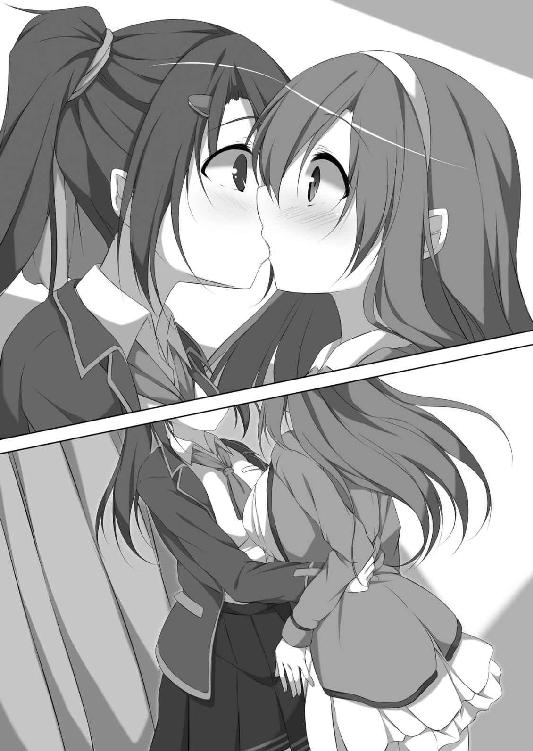
それが茉友の唇と分かるまで、数秒も掛らなかった。目の前にある彼女の眼が、まるでスローモーションのように、ゆっくりと見開かれる。
自分では、反射的に唇を離すものだと思っていた。なのに、震えるようにかすかに動いた彼女の唇の、その心地いい感触に、夏希の身体は思考とは逆に動いた。
──パシャ。
撮影が始まり、フラッシュの強い光に反応して、茉友の腰に回した腕をさらに引き寄せてしまう。当然、触れ合った唇も、さらに強く押しつけてしまう。
（柔らかい......気持ち......いい......）
マシュマロみたいな柔らかさ。隙間から漏れる、甘い吐息。全てに魅了されたように夏希の思考が真っ白になって停止する。同性の子の唇に、自らのそれを擦りつける。
──パシャッ。
その瞬間を逃すまいとするかのように、機械が二度目のフラッシュを光らせた。強烈な閃光に、硬直していた茉友の時間が動き出す。我に返って夏希を突き離す。
「い......いや！」
そして、小さくて鋭い悲鳴を残し、茉友が撮影スペースから飛び出した。まだ甘い感触に心を奪われていた夏希は、どうして彼女が逃げたのか分からない。
しかし──やがて呆けていた頭に思考力が戻り、自分のしたことを理解した瞬間、誰に尋ねるともなく叫んでいた。
「あたし......何を......。どうして彩守さんと。......えぇっ!? な、なんでぇっ!?」
茉友に逃げられた後、どうやって家に戻ったのか、あまりよく覚えていない。気づけば夏希は、玄関に立っていた。
「あら。夏希、お帰り。ちょうど晩ご飯できてるわよ」
夏希の母親は割と放任主義で、少しくらい帰りが遅くても気にしない。その明るさがありがたいけど、今夜は夕食が喉を通りそうもなかった。というより食べたくなかった。
「う、うん......。いいや。なんか体調悪いから、もう寝る」
薬は？ と尋ねる母親に、無言で手を振って答えると、ふらふらと階段を上がって自室のベッドに倒れ込んだ。パジャマに着替えるのも面倒くさい。床に制服を脱ぎ散らかし、下着姿で毛布にくるまる。
薄暗い部屋に、ひとり。さっきまで賑やかなゲームセンターにいたのが嘘みたいだ。
でも、唇には、あの娘の感触がはっきりと残っている。なによりも、鞄の中には証拠写真が入っている。ふたりが唇を合わせた、決定的瞬間を捉えたプリントシールが。
茉友が逃げた時、夏希も慌てて追いかけようとした。けれど印刷中だったこれを残していくわけにもいかず、黙って見送るしかなかった。なにしろ彼女は有名人。こんなものが世に出たら、どんな騒ぎになるか分からない。
「女の子同士でも、スキャンダルになるのかな......」
恋人なわけじゃなし、友達同士の悪ふざけや事故ということで通ればいいけど、その先の展開が想像できない以上、絶対に他人の目に触れさせるわけにはいかない。
夏希は毛布から顔を出し、天井を眺めながら溜め息を漏らした。
「............キス、しちゃったんだ......」
指先で、唇をなぞる。そこは今も、彼女に触れているかのように、甘く疼く。
女の子同士なら、遊び半分でキスする人もいるだろう。多分、珍しいことでも特別なことでもない。
ただし、それもファーストキスでなければの話。ハプニングとはいえ、同性で唇を合わせるなんて、普通は嫌悪してもおかしくない。現に、茉友は逃げた。
「あぁ～......あたし、何てことしちゃったんだろう。せっかく......せっかく友達になれたと思ったのに～っ！」
思いきり大声で自分を叱りたい。でもそうすると下にいる母親に聞かれてしまうので、うつ伏せになって枕で声をくぐもらせた。感情を全解放できず、逆に鬱憤がたまる。
あんなものは、ただの事故。すぐに謝っていれば、こんなに苦悩せずに済んだはず。
「それなのに......どうして、あたし......」
自分の行動が信じられない。離れるどころか彼女を抱き寄せ、唇を押しつけるなんて。あれでは、不意打ちでキスを奪ったのと同じことじゃないだろうか。
紆余曲折の末、仲良くなれたと思った矢先に、この大失態。開きかけた彼女の心も、きっとまた閉ざされてしまった。最悪の場合、逃げ回っていた時よりも。今度は誤解や説明不足なんかじゃなく、実行犯なのだから。
「女の子同士ってことで、ノーカウントに............ならないよねぇ。泣きそうな顔してたし......。あの反応って、やっぱ彩守さん......初めてだったんだろうなぁ......」
もしそうなら、なおのこと罪は重い。どれだけ謝れば許してもらえるだろう。そもそも許してもらえるチャンスがあるんだろうか。考えれば考えるほど、絶望的な気分になる。
「甘いこと考えちゃ駄目。そうだよ、もし立場が逆だったらどうする？ 許せる？ あたしが、彩守さんにああいうこと......されたら......」
眼を閉じ、その場面を想像する。
目蓋の裏に、茉友が現れた。どことも知れない、何もない空間に、ひとりで佇んでいる。怒っているんだろうか、泣いているんだろうか。こちらを見詰める瞳はどこか寂しそうで、夏希の胸の奥を、小さな針のようにチクッと刺す。彼女は、地面を滑るように、ゆっくりとこちらに近づいた。細い腕を夏希の腕に回し、うっとりと眼を閉じて、唇を寄せてくる。夏希も唇をかすかに開き、触れ合う瞬間を待ち受け、そして──。
「......って、何してんのよ、あたし!!」
ハッと我に返って眼を開けば、抱き締めた枕にキスする寸前。夏希は自分に戦慄した。茉友とのキスを嫌がるどころか、心待ちにするなんて。そうじゃない。ここは彼女がそうしたように、拒絶すべき場面のはず。
「えっと......ええっと......」
冷静さを取り戻そうとして胸を押さえる。心臓が妙にドキドキしている。自分の妄想でこんなに興奮するなんて、どうかしている。
「だって、彩守さんがあんな可愛い顔するから......じゃなくて！ ええっと......そ、そうだ、想像するからいけないんだ」
だから頭の中で妄想が暴走する。もっと具体的なものを見れば、ちゃんと反省できるはず。夏希は身体を起こして部屋の明かりを点け、机の上にあった雑誌を手に取ると、再びベッドに腹ばいで転がった。ぺらぺらとページをめくり、目的の写真を見つける。
数日前に買ったファッション雑誌。もちろん、お目当てはＭＡＹＵこと彩守茉友。彼女が本当に載っているのだと知った時は、感動すら覚えた。
「彩守さん、笑ってる。だけど......」
春物のジャケットにトートバッグを肩から提げて、ロングのフレアスカートを風になびかせる彼女は、他の綺麗系のモデルとは一線を画す可愛らしさ。
でもその表情は、夏希の眼には不自然に映った。ちゃんと知り合う前なら何も思わなかったかもしれないけれど、内気な自分に鞭打って、無理して笑顔を作っているようにも見える。仕事というなら、そういう努力も必要なんだろうけど、どこか痛々しい。
素人の夏希に心配されるなんて、余計なお世話かもしれない。それでも、茉友の写真を見ているだけで胸が締め付けられて、息が苦しくなってくる。
「彩守さん......」
癒してあげたい気持ちが、夏希を動かしていた。誌面で薄く微笑みを浮かべる茉友に、唇を寄せる。写真の彼女にキスしていた。無機質なはずの紙に温かみを感じる。彼女の唇の柔らかさを、思い出さずにいられない。
「彩守......さん............」
とろりと、まどろむように目蓋が重くなった。雑誌を開いたまま枕の横に置くと、ベッドに仰向けになった。左の胸に手を置く。さっきの動揺とは違うドキドキが、小さいけど速い鼓動が、ブラジャー越しに掌に伝わってくる。
夏希は、ゆっくりと息を吐き、唇に乾きを感じて、ぺろりと舌で湿り気を与えた。
「あ......」
敏感な唇が、舌の動きに過剰なまでに反応し、急に鼓動を跳ね上げた。後悔も反省もどこかに吹き飛び、キスの再現に意識を奪われる。まるでそこに彼女がいるかのように、小さく震える唇を擦りつける。
「あうっ......!?」
ゾクリとした痺れが背筋を走った。胸に当てていた左手で、反射的に乳房を鷲掴みにする。すると先端がブラの内側に擦れて、もっと大きな電流が夏希の身体を跳ねさせた。
「うンッ、あッ......！」
喉の奥から喘ぎが漏れた。自分の声とは思えない、甘く切ない響きに戸惑う。誰が聞いているわけでもないのに、なぜか無性に恥ずかしい。でも、静電気のような痺れが心地よくて、ブラの内側で硬くなりつつある蕾を、布地越しに中指でコリコリ転がす。
「ふぁう......あ......ンッ」
身体が火照ってきた。胸で生まれたそれは次第に熱量を増し、お腹の奥と、そこより下の脚の付け根の中心を、じわじわと炙り始める。
（あ、これ......始まっちゃう......）
鈍りつつある思考の中で、夏希は予感と期待に震えた。時々身体に訪れる、この気だるくて甘美な熱。夏希はそれに逆らえず、モジモジと内腿を擦り合わせた。息が速くなってくる。脚の間が疼いて我慢できない。
「だ、だめ......なのに、こんな......でも、くっ......ふぅぅぅン」
仔犬のように鼻を鳴らして、夏希は身体を苛む疼きに耐えた。
オナニーは、初めてじゃない。覚えたての頃なんて毎日だったし、受験勉強の最中だって、ストレス解消で、たまにだけど、していた。特に好きな人やアイドルなんかがいたわけじゃない。何かの拍子でそこを触って気持ちよさを覚え、そしてそれが性欲だというのを知ってからは、快感への好奇心に夢中になった。
でも、誰かを思い浮かべたわけでもない自慰は、快感も頭打ち。次第に回数も減って、進学してからはすっかりご無沙汰。それなのに、こんな強烈な疼きは久しぶり──いや、初めてだった。耐えようと思って内腿に力を入れると、妖しい感覚がお腹に響く。
「い......今は、こんなことしてる場合じゃないのに......」
茉友を傷つけたかもしれないのに、自分は快感を求めるなんて。
「彩守さん......。あ、彩守さ......ぁんっ！」
なのに、彼女の悲しげな顔を思い浮かべたら、下半身の疼きが、うねるように大きくなった。自分を懲らしめるように、ブラごと乳房に指を立てる。でも、そんな布地越しでは何の効果もない。カップをずり上げ、露わになった乳首を二本の指で摘み上げる。
「ヒッ......いぃッ!?」
甲高い悲鳴が喉から迸った。今までに感じたことのない鮮烈な電流が背筋を走る。それを鎮めようとして乳首を捻るけど、まるっきり逆効果。癖になりそうな魅惑的な痺れが身体中を包み込む。
「あ、くふッ......。な、なにこれ......。こんなの......初めて......あうっ！」
意識が朦朧とし始めた。やめようという意思は徐々に薄れ、夏希の指は自分の乳首を小刻みに弾いた。ピンクの突起が震えるたびに、自制心が削り取られる。
「だめ......だめぇ......」
否定の言葉を繰り返すけど、もはや、そんなものはただの言い訳。両手は捏ねるように乳房を揉みしだき、すっかり硬くなった乳首を指先で転がす。背中や腰が何度も小さく跳ね上がり、もっと大きな快感を要求してくる。
「はぁ......あぁぁ......」
でも、もっとも快感を欲しがっていたのは、熱い吐息を漏らす唇。かすかな喘ぎにくすぐられ、彼女の感触を思い出す。触れただけの短いキスの、心地いい記憶を呼び起こす。
「彩守さんの唇......柔らかかった......。あぁ......違う......。そんなこと考えちゃ駄目なんだってば......。でも、でも......許してもらえるなら、もう一回............あぅン！」
そうだ。茉友の唇に触れた時、夏希は確かに気持ちいいと思った。彼女とのキスを想像すると、もうそれだけで唇が快感に疼く。
キスしてしまった瞬間の、彼女の戸惑いに震える長い睫毛、揺れる瞳。罪悪感と、それを上回るときめきに、ズキンとした快感が股間を襲った。堪らず右手で、疼きの発生源を押さえる。その瞬間、ハッとして眼を見開いた。自分でも驚くほどの、熱さと湿り気に。欲情した時に漏れる恥液が、下着の外まで染み出している。
「こんな......あぁ......すごい......っ」
触ってしまったら、もう止められない。自分の意思とは関係なしに、中指と人差し指が動き出した。身体の中心の溝に沿って、せわしなく上下する。
「ンッ......くっ......。は......あぁぁ......うんっ、くぅぅぅン！」
階下には母親がいる。頭の片隅に残ったわずかな理性で必死に声を抑えるけれど、身体の方はお構いなし。暴走し始めた指先が、乳首を弾き、恥裂を擦る。
「あんっ、ダメ......。こんなの、ダメだって......ダメなの......に、あッ！」
下着の中で、秘裂が開くのを感じた。とろとろの液が布地に吸い込まれていく。もう我慢できない。直に触りたい。濡れた恥裂に指を割り込ませ、思いきり掻き回したい。夏希のそこも、激しくなる疼きで満たされない想いを訴える。
でも、たとえ一瞬でも、そこから指を離すのは苦痛だった。いま味わっている快感と、もっと直接的な快感への欲求への板挟みに、頭を振って苦しみ悶える。
「助けて......助けて、彩守さん......！」
身勝手と知りながら、傷つけたかもしれない相手に救いを求める。とはいえ、どの道ここに彼女はいない。夏希は直接的な快感を諦め、下着越しの刺激で耐えた。まるでそれが罪滅ぼしであるように、都合のいい解釈をして。
「んっく、んふぁっ。あふ......！ ど......どうしてこんな......。すごく感じて......あぁ、すご......おかしくなる......っ！」
なのに、堪らなく気持ちいい。震える指先が下着を擦ると、布地を一枚挟んでいるとは思えないほど激しい快感が、背筋から頭へと突き抜ける。
「ンふぁっ！」
お尻が浮くほど腰が跳ねた。勢いで指先が恥裂に食い込む。胸を刺激していた左手が、まるで感電したように引き攣り、ベッドのシーツを掻き毟る。
「いい......。気持ち......いいっ！」
唇を噛んで快感に耐える。赤ちゃんのように膝を折り曲げ、手の動きを封じるように内腿をぴったり閉じる。それでも指は股間の奥深くに潜り込み、淫裂を掻き毟る。
でも、こんなに気持ちいいのに、一番欲しいのはそこじゃなかった。
空気を求めてぱくぱくと動く唇が、寂しい。何か物足りない。
「彩守......さん......」
彼女の名前を呼ぶたびに、胸が切なくなる。初めて彼女に出会った時のように締め付けられ、なかなか会えなかった時のように苦しくなる。避けられ続けた時のように、悲しさでいっぱいになる。どうして、彼女を想うだけでそんな風に感じるんだろう。
「あたし......まさか............あたし......!!」
その理由が言葉になる前に、指で擦られた陰唇から強烈な電気が走り、頭の中を混乱させた。快感は夏希から思考を奪い、欲求だけを叫ばせる。
「キスしたい......。彩守さんとキスしたいよぉ......！」
茉友の唇を感じたかった。柔らかくて甘い彼女が欲しかった。彼女を驚かせてしまったことを半ば忘れて、もっとちゃんとキスしておけばよかったと後悔する。
シーツの上をさまよっていた左手が、いつの間にか脇に転がっていた枕を掴んだ。夏希はそれを引き寄せて、それが茉友であるかのように掻き抱いた。
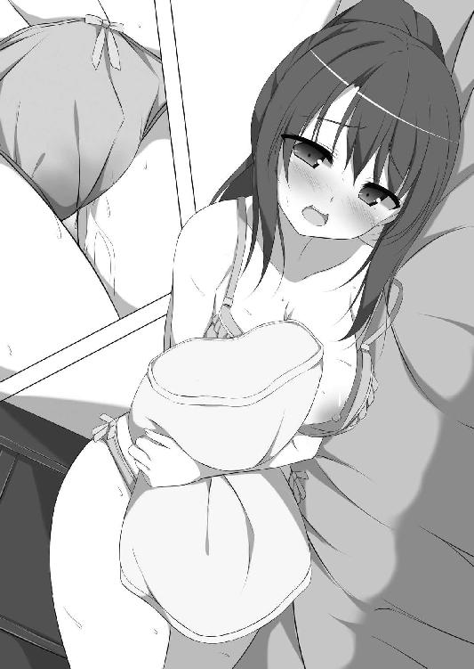
「あぁ、彩守さん......柔らかい......」
いくら何でも、茉友の身体が枕ほどふにゃふにゃのはずがない。それでも夏希は、必死の思いでそれを抱き締めた。すると、オナニーでピンク色に染まった頭が錯覚を起こしたのか、一瞬、彼女からも腕を伸ばしてくれたような感覚があった。
それだけで胸がいっぱいになるほど感激した夏希は、夢中で手を動かし続けた。閉じていた脚が自然に開き、立て膝になってオナニーの快感を貪る。
「ふぁ......あ、あ、あぁぁンッ！」
下着の布地と性器が擦れ合い、ザラザラとした快感に腰が跳ね回り、踊りまくる。ひと擦りごとに体温が上昇し、頭の中を沸騰させる。
「彩守さん......あぁ......。彩守さん、可愛いよぉ......」
何度も彼女の名を呼びながら、夏希の愛撫のストロークが大きくなった。淫裂の先端からお尻近くまで、指が激しく往復する。思考が真っ白になっていく。まるで風船になったように、身体がふわりと浮き上がる。
「き、気持ちい......ッ！ 気持ちよすぎて......あたし、もう......もうイク！」
絶頂が近い。でもこんなに身体が踊り狂う快感は初めて。経験したことのない高みへ昇り詰めることに恐怖さえ覚え、夏希は抱き締めた枕に歯を立てた。
「あぁぁ彩守さん......彩守......さんっ！ あっ、すご......い！ いく、もうイク、イッちゃう、イッ......きゅぅぅぅッ!!」
指先が淫核を掠め、夏希の身体が大きく仰け反った。堪らない快感電流が背筋を何度も駆け抜けて、腰を大きくバウンドさせる。
「あぅっ、ンあぁぁう、ふぁ、ンンん......くッ......！」
なおも淫熱を孕んで暴れようとする秘部を、なだめるように掌で押さえた。その刺激すら追い打ちのような快感となって夏希を苛んだけれど、そうしているうちに身体の痙攣も小さくなり、やがて、呼吸も落ち着きを取り戻してきた。
「あ......ふ......ふぁ......はっ......はぁぁぁ......」
ベッドに全身を投げ出して、気だるい絶頂の余韻に浸る。オナニーでこんなに気持ちよかったのは初めて。鈍いながらも再び回り始めた思考で、どうしてだろうと考える。
「や......やっぱり............彩守さんの............て、ちょっと待って!!」
ガバッと身体を起こした。自分は何をしていたんだろう。誰を想って、こんな淫らな行為に耽ったのか。
「あたし......彩守さんとキスしたいと思ってる......？」
思ってるも何も、さっき思いきりそう叫んだ。
「やっぱり、あたし......彩守さんのことを......？」
戦慄した。愕然とした。絶頂の火照りが一気に引いていく。夏希は、凍えるように自分の身体を抱き締めて、自分の中にある欲求に、震え続けた。
週明け、学園に行くかどうか、夏希はギリギリまで悩んだ。
「あぁぁ......どんな顔して彩守さんに会えばいいんだろぉぉ......！」
毛布を被って、ベッドから一歩も降りられない。週末の二日間、さんざん悩んだのに、何の結論も出なかった。もちろん、彼女を想ってのオナニーのせい。事故キスだけでも重罪なのに、さすがに自慰行為は言い訳できない。もちろん、そんなものを自白する必要なんてないのだけれど、もし、万が一、何かの間違いで彼女に知られたらと思うと、恐怖で震えが止まらない。
「絶対に嫌われる！ 気持ち悪いって思われる～!!」
あの時に噛んだ枕に、唾液の後が残っている。それを見たら、ますます罪悪感に押し潰されそうになった。
「やっぱ、今日は休もうかなぁ......」
母親には体調不良で通じるだろう。でも、こんな理由でサボりだなんて、罪悪感の上塗りはしたくない。
「う～......。つらいけど......でも......」
夏希なんかより、茉友の方がよっぽど辛いはず。いつまでも彼女を傷つけたままにはしておけない。でも、もし絶交を言い渡されたらと思うと、怖くて身動きが取れなくなる。
「あぁもぉぉぉっ！ こういうのは早めに謝るに限る！ 嫌われたらその時はその時！」
半ばヤケクソで、夏希は毛布を跳ね上げた。朝食もそこそこに家を飛び出す。
とはいえ、やっぱり嫌われるのは怖い。登校の電車の中でも気持ちは沈んだまま。もし誰かに背中でも突かれようものなら、たちまち涙腺が決壊する。それくらい、気持ちが張り詰めていた。
そんな有様で、茉友の顔なんて見に行けるはずがない。
「早く......早く謝りに行かなくちゃ......」
などと思い悩んでいるうちに、数学、古典、英語の授業を素通りし、すでに本日三度目の休み時間に突入しようとしていた。
「............夏希さぁ、ＭＡＹＵと何かあった？」
そんな状態の夏希を、友達が見過ごすはずがない。前の席の恵美が、あからさまに不審な視線を投げつけてきた。
「なッ！ ......何で？」
「いや、だって。先週、駅前でＭＡＹＵと待ち合わせしてたじゃない。あの娘がデートのお相手だったんでしょ？」
「だから！ デートなんかじゃ............な......ない、から......」
語尾が消え入りそうになる。あんなことがなければ、もしかしたら「デート」なんて言葉も、きっと冗談交じりで笑い飛ばせたはず。
「じゃあ、ケンカしたの？」
「う～......それも違うけどぉ......。てか、何でそんなこと分かるのよぉ」
机に突っ伏し、何でも見透かす恵美を恨みがましく眼だけで見上げる。
「いかにも悩んでますって顔で朝からウンウン唸ってたら、私じゃなくても分かるって」
「あ、あたしって、そんなに分かりやすい!?」
今さら何をという顔で、恵美が頷く。多少の自覚はあったけど、それほどだなんて。
「何があったのかは知らないけどさぁ、念願叶ってＭＡＹＵと話ができるようになったんでしょ？ それで、どうせ夏希が悪いんでしょ？ ていうか、後ろで唸られてたら私が迷惑なんで、早く謝ってきて」
「う～。恵美、意地悪だぁ～！」
とはいえ、全ておっしゃる通り。夏希に反論の余地はない。それに、きっとこれが彼女なりの思い遣りなんだろう。友達に背中を押され、ようやく決意を固める。
「分かった！ あたし、彩守さんと仲直りしてくる！」
「はいはい、いってらっしゃい」
呆れ顔の恵美に見送られ、夏希は隣のクラスに再び出撃した。
「う......うぐぐっ......」
それでも、歩みは重かった。思うように足が前に進まない。以前は、茉友に忘れられているかもという不安。今度は嫌われているかもという恐怖。初めて彼女に会いに行った時とは、緊張の度合いが比べ物にならない。恵美について来てもらおうかなんて考えも頭をよぎったけど、これは夏希の問題。自分ひとりで行かなければ何の解決にもならない。
「はぁ......はぁ......。ふぅ......」
やっとの思いで隣のクラスに辿り着き、茉友を呼び出してもらおうとして、はたと気づいた。
「............しまった。何て言って謝るか決めてない！」
だから悩んでいたのに、恵美に急かされ、すっかりその気になっていた。せっかくの決意も、何ら成果を出せなければ意味がない。さりとて、無策で突っ込んで失敗するのはもっと嫌。きっと恵美に叱られるだろうけれど、ここは撤退の決断もやむを得ないだろう。
「よし、引き返そう！」
くるりと百八十度、まわれ右。でも、自分の教室に戻ろうとした夏希を阻む者がいた。
「あれ？ またあんた？」
トイレからでも戻って来たのか、ＭＡＹＵの情報をくれた隣のクラスの子と鉢合わせ。いかにも「よく飽きないなぁ」と言いたげな呆れ顔をされる。もちろん、先週までとは用件が違うのだけど、それを彼女に説明しても仕方がない。
素直に戻ろうとした夏希に、しかし彼女は意外な事実を告げた。
「ＭＡＹＵなら、今日は休みだよ」
「............え？」
どうして、と尋ねても、彼女は「さあ？」と首を傾げるだけ。普通に風邪じゃないのかと、深い関心を示さない。クラスで孤立している状況に変化はないみたいだ。本当はいい子なんだと教えてあげたかったけど、それどころじゃなかった。夏希には、茉友がいないという方が衝撃。まさか、仲直りどころか謝罪もできないなんて。想定外の事態に、ちょっとばかりパニックを起こす。
（休みって......。あたしのせい？ いや、そうだよね。絶対そうに決まってる！ どうしよう......。まさか、休むほど彩守さんが悩んでるとは思わなかった......）
もしこのまま登校してこなかったら──なんてことは、さすがにないだろう。しかし、悩んでいるであろう茉友を放置はできない。なにより、これ以上の問題の引き延ばしは夏希自身が耐えられない。
少しばかりの逡巡の後、夏希は顔を上げ、茉友のクラスメイトに駄目元で尋ねた。
「あ......あのさ。彩守さんの家、どこだか知ってる？」
面倒くさい、興味がない、という彼女を説き伏せて、何とか連絡網から住所だけは教えてもらえた。
「彩守さん、こっちだったのか......」
同じ駅を使っているのは分かっていたけど、方向は反対だったみたいだ。見慣れない街を、住所のメモを頼りに歩く。ただ、その足取りは覚束ない。
住所を見た時から、ここを訪れるのに若干の不安はあった。なぜならば、テレビなどでもよく名前を聞く、高級住宅街だったから。イメージに違わず、立ち並んでいるのは門構えも立派な大きな家ばかり。
「こんなとこに住んでるなんて......もしかして、彩守さんって本当にお嬢様？」
可憐な容姿といい、上品な物腰といい、一般庶民の自分とは違う生き物のような気がしていたけれど、どうやら間違いではなかったみたいだ。
「大丈夫？ あたし、場違いじゃない？」
自分の格好を見直す。前を開けたブレザー。少し緩めのスカーフタイ。学園でなら多少はお洒落に見えると思っていたスタイルも、街全体が醸すセレブ感の中では、子供が粋がっているようにしか見えず、慌てて身なりをきちんと直した。
「う、窮屈......。で、でも！ これから彩守さんの家に謝りに行くんだし！」
住所からすれば、もうすぐのはず。だらしない服装では誠意を見せられない。
「......彩守さん、会ってくれるかなぁ......」
胸に広がる不安の雲が、だんだん濃くなってくる。
茉友が休んだのは、本当に自分のせいなのか。冷静に考えたら、モデルのお仕事で撮影だったかもしれない。第一、間違いでキスしたくらいで、普通は学園を欠席したりしないんじゃないか。でも、彼女ならありえない話じゃない。
臆病。無責任。色々な弱い自分が顔を出して、気持ちと足が重くなる。
（どうしてあたしは、こんなに急いで彩守さんに会いに行こうとするんだろう......）
一刻も早く謝るべきとは思う。けれど、だからといって、茉友の家にまで押し掛ける必要があるんだろうか。自分が何を焦っているのか分かっていない。こんな状態で彼女に会って、自分はどうするつもりなんだろう。
何ら気持ちの整理がつかないまま、気づけば夏希は、目的の家の前に立っていた。
「うわぁ......すっごい......。ホントにここ、彩守さんちなの？」
迷いはさておき、まずはその豪邸っぷりに感嘆の声が出る。蔦の這う白い壁、煉瓦を使ったお洒落な塀。三階建ての建物を囲う、林のように背の高い木々。家というより、お城みたいな雰囲気さえある。外観だけでも豪華なのに、家の中はどうなっているんだろう。この中に突入するのかと思っただけでも腰が引ける。
「ええい！ ここまで来ちゃったんだから仕方ない。覚悟を決めて出たとこ勝負......」
豪邸に気を飲まれたせいで、最後の最後で投げやりになった。半ばヤケクソでインターホンに手を伸ばす。
「............その話なら、聞きたくないっ！」
「うわぁ！ ごめんなさい、ごめんなさいっ!! ......て、あれ？」
チャイムを鳴らす前に憤りに満ちた声が聞こえて、反射的に謝ってしまう。しかし、門の内側には誰もいない。
「今のって......彩守さんの声、だったよね？」
いつもの囁くような話し方とは違うけど、間違いなく茉友の声だった。割とはっきり聞こえたし、庭にでもいるんだろうか。なんてことを考えながら格子状の門扉の向こうを背伸びして覗いていたら、突然、玄関のドアが激しく開き、茉友が飛び出して来た。
「──あ」
その勢いが嘘のように、茉友がピタリと一時停止する。それはそうだ。家の前に夏希がいるなんて思いもしなかっただろうから。でもそれはこちらも同じ。どう対処すればいいのか判断できず、声すら出ない。
「あ......あ......あの......。どど......どうも......」
それでも、やっとの思いで挨拶しようと思った矢先、家の中から別の声がした。
「待ちなさい茉友！ まだ話は......あら......」
茉友の背後から顔を覗かせたのは、上品ないでたちの女性。綺麗な大人の登場に、せっかく出掛かった声が喉の奥に引っ込んでしまう。
「......その制服......あらやだ、もしかして茉友のお友達？ みっともないところを......」
その人は、恥じらうように口元を押さえて「ホホホ」と笑った。顔立ちはどことなく茉友に似ているけれど、よく通る声に滑らかな口調は、まるっきり正反対。
（あれ、でも......この人、どこかで見たような......）
心の中で首を傾げる。会ったことはないはずなのに、確実に見覚えがある。思い出せそうで思い出せない。モヤモヤして気持ち悪い。
何にせよ、茉友の関係者なのは間違いない。まずはきちんと自己紹介をしなければ。
「こ、こんにちはっ。あたし、茉友さんの......その......あの......」
しかし途中で言い淀む。何て説明しようか。クラスメイトではないし、茉友とはどんなお友達なのか、自分でもよく分かっていない。それに、ここに来た用件も絶対に打ち明けられない話。普通に挨拶だけで済ませればよかったものを、余計な気を回したせいで、自分で自分を追い詰めてしまった。
（やばい......。ノープランのツケがこんなところで......）
女性が小首を傾げて、続きを待っている。焦りが募って言葉が出ない。しかも、自己紹介は完遂しなかった。答えに困っている夏希の腕を、茉友が憮然と掴んで引っ張る。
「......お母さん、わたし出掛けるから。行こう千羽さん」
「あっ。だから待ちなさいってば、茉友......っ」
語気を強めて女性が引き止めるけど、茉友はそれを無視。彼女たちの諍いの原因が分からない夏希は、ただ黙って茉友に手を引かれるしかできない。
「あ......あの～、すいませんっ！ また今度お邪魔します！」
とりあえず女性には振り返っておいとまを告げ、茉友に従い、彼女の家から離れた。
（うわ......手......。彩守さんの......っ）
並んで歩き始めてから、夏希はやっと手を繋いでいることに気がついた。いかにも茉友らしい、柔らかさと心地よさに、夏希の手の方がどんどん強張っていく。ちょっとだけ冷たく感じるのは、きっと自分の体温が上昇しているから。彼女の指がかすかに動き、肌と肌が擦れるだけで、心臓の音が聞こえそうなくらい心拍数が上がっていく。
（彩守さんの手って、白くて綺麗......。同じ女の子なのに、あたしとは大違い）
気づかれないくらい親指を小さく動かし、彼女の滑らかな肌を確かめる。でも、そんな幸せな時間は長くは続かなかった。女性の姿が見えなくなると同時に、茉友はあっさりと手を離してしまう。家から飛び出す口実に、ちょうど居合わせた自分が使われただけ。そうと分かっていても、もしかしたらと期待してしまった。
（やっぱり怒ってるんだろうなぁ......）
風邪ではなさそうだし、今日の欠席は夏希のせいで間違いなさそうだ。ただ、唇を噛み締める横顔が、夏希が来たためか、さっきの女性との諍いのためかまでは分からない。
それにしても、とんだ場面に遭遇してしまった。早歩きで進む茉友に、どう話しかけたものかと思案に暮れる。
「さ......さっきの人、彩守さんのお母さんだったんだねー。その......よかったの？」
何が、とは言わなかったけど、通じたみたいだ。茉友は歩く速度を落とし、自分を落ち着かせるように、小さな溜め息を吐いた。
「いいの、大丈夫。そんなに大ゲンカってわけじゃないから」
「ケンカはケンカなんだ......」
あえて茉友があっさり言っているのが分かり、苦笑いする。
（彩守さんみたいにおとなしくて真面目な娘でも、親と言い争うことがあるんだな......）
意外というより、彼女の普通の一面を見られたのが、夏希には嬉しい。しかし、わずかながら言葉にトゲを感じたのも事実。まずは、この微妙な空気を何とかしなくては。
「そ......それにしても、お母さん綺麗だね。あたし、どこかで見たような気がするんだけど、思い出せないんだよねー」
「お母さん、女優だから......。綾森芳乃って聞いたことない？」
「知ってる！ ていうか、いっぱいドラマとか映画とか出てる超有名女優じゃない！ そりゃ見覚えあるはずだよぉ。まさかさ、そんな人が目の前に現れるなんて思わないもん。全然気がつかなかった。そうかー。綾森芳乃が彩守さんのお母さん......て、えぇぇっ!?」
動揺が続いて、ただでさえ低い思考力が相当にサボっていたみたいだ。ようやく事実関係を把握し、道の真ん中で奇声を発する。渋い顔で睨む茉友に、夏希は慌てて口をつぐんだ。自分はただの通りすがりだけど、彼女はこの街の住人。こんなセレブタウンで、おかしな女子校生と一緒にいたなんて噂が立ったら、きっと住みづらくなってしまう。
「こっち......」
過剰反応で完全沈黙した夏希の手を引き、茉友は近所の公園に入った。さすが、お金持ち世帯が多い街らしく、かなり広い。子供向けの遊具もあるけど、それはほんの一角。遊歩道と木立に囲まれた芝生が敷地の大半を占めていて、有閑マダムといった風情のご婦人がたが、飼い犬を走り回らせている。
ふたりは言葉少なに遊歩道を歩き、どちらからともなく、芝生を見渡せるベンチに腰を降ろした。会話の糸口が掴めず、長い沈黙が続く。もちろん、そんな状態に夏希が耐えられるはずがない。我慢しきれなくなって、いつものように考えるより先に口を動かした。
「あ、彩守さんの私服って、いつも可愛いね！ さっすが現役モデル、衣装持ち！」
いくら咄嗟にとはいえ、頭の悪い持ち上げ方に我ながら呆れ果てる。でも、問題はそこじゃなかった。
「ありがとう。............先週、千羽さんと出掛けた時と同じのだけど......」
困惑気味に顔を逸らす茉友に、夏希は心の中で蒼褪めた。
（やっぱり、やっちゃったぁっ!!）
会話のきっかけが欲しかっただけなのに、この短いやり取りで、夏希はいくつもの失敗をしでかした。まず、服が同じことに気づいていなかったのは、ファッション好きを自認する女子としてあるまじき大失態。しかしそれも、一番の重大事に比べたら些細なこと。
（もうモデルの話題は出さないって約束したのにぃ！）
それをあっさり破ったばかりか、最大の懸案である先週のお出掛けの件を、彼女の方から言わせるなんて。本来なら、責任のある夏希から切り出すべきことなのに。同じ失敗を繰り返す自分に嫌気がさし、ベンチの脇で頭を抱えてうずくまる。
「さっきの......ケンカ、ね......」
茉友が、小さく呟いた。独り言のようですらあったので、夏希が「え？」と顔を上げると、彼女は掌をベンチにポンと置いて、座り直すように促していた。
「気になってるんでしょう？ どうせ見られちゃったんだし、教えてあげる」
諦めたような、茉友の声。自責の念で苦悩する夏希を憐れんだのか、それとも、ケンカで気が立って自棄になっているのかは分からない。ただ、どこか寂しそうな茉友の表情に惹きつけられ、夏希は、改めて彼女の隣に腰を降ろした。
とはいえ、家庭内のことを聞いていいんだろうか。躊躇するけど、それも一瞬。自分の失態から目を逸らしたかった夏希は、その話題に救いを求めてしまった。
「お母さんと、仲悪いの？」
茉友は、ふるふると小さく首を振る。
「でも......今は、ちょっとそうかも。だって、お母さん......わたしにも、女優になれなんて言うから......」
「すっごーい、女優!?」
急に声を張り上げたので、茉友の肩がビクンと跳ねる。人の目を気にして、あたふたと周囲を見回す。しかし夏希は、彼女の困惑に気づかず、興奮気味にまくしたてた。
「やっぱり女優の娘だと、そういうお誘いがあるものなんだねー。ドラマ？ 映画？ それとも舞台とか？」
その瞬間、夏希には、茉友のことが華やかな世界への入り口に見えていた。芸能界という漠然とした存在が、突如、形をなして目の前に現れたかのように。
しかし、モジモジと困ったように肩を竦ませる彼女に、夏希は我に返った。そして、無邪気にはしゃいだ自分が恥ずかしくなる。
「そ、そうか......。彩守さん、嫌なんだね......」
彼女は、無言でコクンと小さく頷いた。他人と話すのが苦手という彼女が、映像か舞台かは知らないけれど、人前での演技なんてやりたがるはずがない。
「ごごご、ごめんなさい。あたしってば、また......！ 彩守さん、仕事の話をされるのが嫌だって言っていたのに......」
さっき約束を破って後悔したばかり。なのに、舌の根の乾かぬうちに同じ失敗を繰り返し、夏希は再びベンチの脇で膝を抱えた。
自分は、茉友が遠ざけていたクラスメイトたちと違う。興味本位で彼女に近づいたんじゃないと自負していたのに。平凡な小市民であることを思い知らされた気分だ。
もう、こうなったら、いくら取り繕っても無駄。愛想笑いを浮かべ、小市民らしく好奇心の向くままに疑問をぶつけた。
「そ......それにしても、彩守さんち、さすがに凄いね。普通のご家庭なら、子供が芸能人になりたいなんて言ったら、親は反対するものだと思うけど、逆なんだもん。でも女優にならないってことは、今後もモデル一本でいくの？」
「............分からない」
茉友は、特に夏希を非難することもなく、遠くの空を眺めながら、ぼんやりと答えた。
「モデルだって、やりたくて始めたお仕事じゃないから。一年くらい前、何も説明されないままお母さんに出版社まで連れて行かれて、よく分からないまま写真を撮られて」
「そ、そうだったんだ......」
「それが、雑誌社の人からの依頼か、お母さんが言い出したのかは知らない。そういったことが何度かあって、いつの間にか、わたしはモデルっていうことになってて......。これでいいのかなって......」
彼女の口調から、今の自分の境遇に対する困惑が伝わってくる。でも、夏希はだいぶ茉友のことが分かってきた。引っ込み思案の割に、どうしてファッションモデルなんて派手な仕事をと思っていたけど、母親の勧めだったわけだ。それも、本人の承諾なしに。
（......あ、そっか。だから、みんなからモデルの話を聞かれるのが嫌だったんだ）
自分のあずかり知らないところで決められて、なし崩しで続けて。自発的に始めたお仕事じゃないから、ファッションモデルと呼ばれることに抵抗があったのかもしれない。
そして、ただでさえ悩んでいたところへ、今度は女優をやれと言われて、おとなしい茉友も反発せずにはいられなかったんだろう。
なし崩しといえば、成り行きとはいえ、彼女にお仕事の話をさせているのが、そろそろ心苦しくなってきた。でも、最後にひとつ、どうしても聞いておきたいことがある。
「彩守さんは......モデルの仕事が嫌いなの？」
「それも......分からない。分からないの。辞めたくなるほど嫌ではないけど、強烈にやりたいっていう情熱もない。こんないい加減な気持ちで、お仕事を続けていいのかな......」
「......いいなぁ」
またも羨ましがる夏希に、茉友が不思議そうな目を向ける。
「何がいいの？ こんな、中途半端なわたしの」
珍しく苛立ちを見せる茉友は、それでも頬を膨らませるのが精一杯の表現で、可愛い。悩んでいる彼女には悪いけど、ちょっと和む。でも本当に、夏希は茉友が羨ましかった。
「だってそうじゃない。やる気がないのに、たったデビュー一年で、雑誌を代表する人気者になったんでしょう？ それって、すごい才能の持ち主ってことじゃない。それでやる気を出したら、もっといっぱい雑誌や服が売れて、それで先輩の人気モデルさんたちみたいにタレントになったり、それこそ女優にもなれる道が開けてるんでしょう？」
「そ......そんなに簡単なことじゃ......」
それは夏希だって分かっている。それでも。
「あたしなんか、もっと手前で悩んでるんだよ？ デザイナーになりたいって思っても、どうすればなれるのかも知らない。っていうか、知るのが怖い。だって、本当にその道に進んだら、まったく才能がないのが分かっちゃうかもしれないんだもん」
喋りながら、夏希は初めて自分の気持ちを知った気がした。そして、いかに自分が臆病かも。怖いから、スタートラインに立とうとせず、誰かに夢を語ることすらできない。
「それに比べたら、彩守さんは恵まれすぎてるよ！ 悩むなとは言わないし、お母さんが何を考えてるのかは、あたしなんかには分からないけど、少なくとも、才能のある道に進ませてくれたことには感謝すべき！ ......だと思う......よ？」
自分への憤りが茉友への羨望に直結し、彼女の鼻先をビシッと指差す。でも、自分の弱さを棚に上げている後ろめたさが、最後の部分で出てしまう。
「わたし......贅沢を言っているのかな。恵まれてる環境に、甘えてるだけ......？」
それでも茉友にはきつい言い方だったのか、彼女の表情が一気に沈んだ。文字通り、顔を伏せ、姿勢も前屈みになっていく。
「わぁぁ、違う違う！ そ、そういうことを言ってるわけじゃ......」
「じゃ......なに？」
「え？ それは......その、だから、え～っとぉ。............ごめんなさい」
慌てて訂正しようとしたけれど、結局、言いたいのはそういうこと。フォローできる言葉が何も思い浮かばず、頭を下げるしかできなかった。
「どうして謝るの？ 千羽さんは間違っていないのに」
「で......でもでもっ」
彼女を糾弾したいわけでも、傷つけたいわけでもない。焦った夏希はベンチから跳ねるように立ち上がり、膝立ちになって彼女の両手を握り締めた。
「うまく言えないけど......彩守さん、才能があるんだから続けるべきだよっ」
「そんな......才能なんて......」
「あるの！ 言ったでしょ！」
自身がなさそうに伏せられる彼女の目を、下から覗き込む。
「それでも、どうしても心の底から嫌だ駄目だって思ったら、その時は、さっきみたいにケンカしてでも辞めればいいよ。だって、あたしたちまだ若いし！ 大多数の娘は、これから進路を決めるんだよ？ だから彩守さんも、やり直しＯＫ！」
落ち込ませてしまった失敗を何とかして取り戻そうと、引き攣った笑みで親指をグッと立てる。茉友を励まそうとするあまり、無責任なことを口走っている気もするけど、言葉が勝手に突っ走って引き返せない。
「それに、中途半端なんて言ったら......彩守さんのこと......ＭＡＹＵのこと好きな人、がっかりするよ。だから......だから......」
日常を平凡に過ごしているだけの学生が、ちゃんとお仕事をしている人にお説教。だんだん恥ずかしくなって、夏希の方が目を逸らす。
「............ありがとう、千羽さん。もう少しだけ考えてみるね」
茉友が、手を握り返してきた。見上げると、あの、穏やかな笑みが戻っている。
「か、考える？」
それはどういう意味だろう。首を捻ると、言い方が悪かったと気づいたのか、茉友は夏希の両手を両の掌で包み込み、真っ直ぐに見詰めてきた。
「自分が本当は何をしたいのか、それが分かるまで、モデルを続けてみる。やっていくうちに好きになるかもしれないし」
「あー、あ......そ、そう......？」
偉そうに色々と語ってしまったけど、それは茉友にとってよかったのか悪かったのか。自分の発言に責任が持てず、アップで迫る無垢な瞳に気圧される。
「じゃ、じゃあ......女優の方は？」
「んー。そっちはパス。だって、モデルの方が中途半端な気持ちでいたのに、そんな状態で女優も、なんてできないよ。それに、人前で演技なんて......。でもね、ちゃんと自分の気持ちをお母さんに話す。もうケンカはしないから、心配しないで」
彼女の抱えていた悩みが解消したわけじゃないだろうけど、前向きになってくれたのなら、それに越したことはない。
「そ、そっか。うん、分かった。彩守さんがそれでいいなら、もう何も言うことない。ていうか、そもそもそんな資格、あたしにはないんだけど」
小さく舌を出してクスリと笑うと、茉友の顔にも、やっと笑みが零れた。夏希はそれが嬉しくて、ますます口が軽くなる。今ならどんなことでも言えそうな気がして、一気に彼女への思いをまくしたてた。
「あー、それにしても羨ましい。あたし、彩守さんのこと尊敬してるんだぁ。苦手だって言いながら、ちゃんとお仕事してるし、何といっても、あたしの夢見てる世界にいる先輩じゃない？ ちょっと恥ずかしい言い方すると、憧れてるっていうか......」
ちょっとどころではない恥ずかしい告白に、顔を真っ赤にしながら照れ笑い。その、夏希が完全に油断するのを狙いすましたかのように、茉友が強烈な一撃を食らわせてきた。
「............憧れてると、キスするの？」
「........................は？」
不意打ちすぎて、最初、攻撃が当たったことにも気づかなかったほど。鈍い夏希に、彼女は追い打ちを掛けてきた。
「だから......どうして......キス、したの？」
自分の言葉に恥じらって、夏希以上に真っ赤な顔を横に逸らす。キュッと噛まれたぽってり丸い唇に、自分が何をしにこの街に来たのか、完全に失念していたことを思い出す。
「そ、それは......っ！」
慌てて身を引こうとするけれど、彼女に両手を握られ逃げられない。逃げようと思えばできるくらいの力でしかないけど、身体が強張って動かない。
それだけじゃない。問い詰められてうろたえているのに、モジモジと身体を捩る少女の色っぽさにときめいている自分が信じられなくて、激しく動揺する。
（どど、どうしてと言われても......）
夏希は、その質問に答えられない。むしろ、自分が知りたいくらいだ。ただ謝ることしか考えていなかったし、こんなに真正面から聞かれるなんて想像もしていなかった。
「ご、ごめんなさいっ！ 許して!!」
「......謝るってことは......本気じゃなかって......そういうこと？」
「い、いやあの......その......ほほほ、本気？」
焦りと動揺で、ぐるぐると目が回る。彼女は何を聞きたいんだろう。
「千羽さん、わたしをからかったの？ それとも......」
さっきよりも一層紅色に染まった顔を伏せ、かろうじて目だけを夏希に向ける。
「い......いつも、友達とああいうことして......。それとも、わたし......だから？」
「そ、それは......ええっと、その......」
返答に困り、視線を左右に泳がせる。いつまでも答えない夏希に茉友が焦れて、消え入りそうにか細い悲鳴を上げた。
「......もうっ、何でもいいから早く答えてよぉ......っ」
力を込められた彼女の手に、そこに込められた必死の思いに、夏希は息が止まる思いがした。茉友は、怒っているんじゃない。ただ、知りたいだけ。なぜ、あの時、キスをしたのか。でも、そこに夏希の用意できる答えはなかった。
「ごめん......なさい......。あたしにも、分からない......」
彼女を失望させるだろう。今度こそ、本気で怒らせてしまう。それでも夏希は、正直に告白するしかなかった。
「さ......最初に触れちゃったのは間違いっていうか、事故で......。で、でも......何か、その......き、き、気持ちいいって............思っちゃって......。で、でも信じて！ いつもなんかしてない。あ......ああいうこと......彩守さんが、初めて............」
切れ切れに、でも正直に。恥ずかしくて軽蔑されそうなことを、全部。それで少しでも罪滅ぼしになればと思いながら。
「あのあの......だから、だから......。あなたに、ごめんなさいとしか言えないの......」
手が震え、言葉はしどろもどろ。彼女の眼も見られない。目蓋を閉じて、ひたすら許しを請うと、両手を包んでいた茉友の手が、ゆっくりと離れていった。彼女の温もりを感じられなくなり、夏希は見捨てられたように頭を垂れた。
（あぁ......。せっかく友達になれたと思ったのに......）
自分でも分からない衝動のせいで、大切なものを失った。早く、この場を立ち去ってしまいたい。でも気力が湧かなくて動かない。茉友は、もう行ってしまっただろうか。彼女の気配が感じられず、閉じた睫毛が濡れてくる。
ふと、左の頬が温かくなった。優しい感触に包まれて、誘われるように顔を上げる。
「............あ」
茉友は、まだそこにいた。ベンチに座って、夏希の頬に手を当てている。その瞳は穏やかで、怒っている様子は少しも感じられない。
「......分からないなら、もう一回......試してみる？」
「試すって......何を？」
問い返すと、茉友は息を詰まらせながら目を泳がせた。彼女が見下ろす形になっているから余裕があるように見えるけど、声も、頬に当てられた手も、小刻みに震えている。
「だから............キ、キス......」
街の音に掻き消されてしまいそうな、小さな声。だから、聞き間違いだと思った。
（でも、今、確かに言ったよね？ 彩守さん、キスって......）
耳まで真っ赤になって俯く彼女に、もう一度聞き返すことなんてできない。一か八か、自分の耳を信じて話を進める。
「ど、どうして？ あの時、イヤだったから逃げたんでしょ？ だからあたし、彩守さんに嫌われたと思って......」
「嫌ってなんかない！ こ、こんなわたしと友達になってくれた千羽さんを、嫌いになるはず......ない......」
茉友は、深呼吸のように大きく息を吸い、そして、ゆっくりと吐き出した。
「ごめんなさい。謝らなくちゃいけないのは、わたしの方なのに。あの時は......あまりに驚いてしまって......。だって、千羽さんが何のつもりか分からなかったんだもの。でも、わたしが逃げたせいで、そんなに悩んでいたなんて知らなかった。本当にごめんなさい」
礼儀正しく膝に手を置き、ぺこりと頭を下げる茉友。そして今度は、自分を落ち着かせるように胸に手を当てる。
「わたしも......悩んだよ。だって......女の子にキスされて、少しもイヤじゃなかったんだもの。わたしも千羽さんと同じ。自分で自分が分からなかった。だから......」
だから。彼女はもう一度そう言うと、夏希の手を取り、ベンチから立ち上がった。
「もう一度キスして、自分の気持ちを確かめてみようよ」
「あ......彩守さん......」
あまりに大胆な提案に呆気に取られ、夏希は、言葉が出なかった。この公園に入った時と同じ、彼女に手を引かれ、木立が密集している場所に連れて行かれる。確かに、ここならば簡単には人目につかない。でも、本当にいいんだろうか。
迷いが、顔に出ていたみたいだ。夏希が言葉にする前に、茉友はにっこり微笑んだ。
「一回しちゃったんだもん。二回目だって同じだよ」
「彩守さん......」
これが、あの引っ込み思案で人見知りの少女だろうか。夏希の腰に両手を回し、ぴったりと胸をつけてくる。
（ちちち、近い！ 彩守さん、近いよ......！）
見上げる彼女の顔は、夏希から五センチも離れていない。身長差を考えると、きっと爪先立ちをしているのだろうけど、間近に迫るあどけない表情に見惚れて、足元を確認する余裕すらない。鼻の頭がくっつきそう。彼女の瞳に映る自分が見える。
「千羽さん......。あんまり見ないで......恥ずかしいから......」
「み......見てるのは、彩守さんじゃない......」
艶々として黒くて、透明で、あまりに綺麗な瞳から、目が離せない。彼女の言葉は甘い吐息となって、夏希の唇を心地よくくすぐる。
茉友が、夏希の腰を引き寄せた。ゲームセンターで自分がそうされたように。夏希も彼女に腕を回した。夏希の乳房のちょうど下あたりに、彼女の胸が当たっている。互いに胸を押し合って、震えや鼓動が、ダイレクトに相手に伝わる。
（彩守さん......すごくドキドキしてる......）
釣られるように、自分の鼓動も速くなった。頭に血が昇って、さらにきつく彼女の腰を抱き締める。でも、力を入れたら折れてしまいそうに細い。そのくせ、服越しに感じる茉友の乳房は、思いのほか量感がありそうだった。
改めて、彼女が可愛い女の子なのだと実感する。そして、重要なことを思い出す。
自分たちは、今から同性とキスしようとしている。遊びじゃない、でも本気でもない、試しのキス。
（試す？ 何を？）
自分たちは、どんな答えを求めているんだろう。それを考える間もなく、茉友の唇が近づいてきた。もしかしたら、夏希から動いたのかもしれない。目蓋は自然に閉じられ、ふたりの唇が引き寄せられた。
「──ん」
触れ合った瞬間、夏希の身体は強張って、茉友の服をキュッと掴んだ。硬く結ばれた唇同士が、ぎこちなく重なり合う。
「......あ、ん。はっ......はぁぁぁ......」
身体の緊張を解こうとしてか、茉友が小さく身じろぎした。閉じられていた唇も、ほんのわずかに隙間が生まれる。吐息にくすぐられ、夏希の身体が震えた。
（温かい......）
茉友の腰に回されていた腕が、無意識に背中を撫でる。彼女の全身からは少しずつ力が抜けて、まるで夏希に寄り添うように身体を預けてきた。擦れ合う唇は甘く痺れて、次第に思考が鈍っていく。
（柔らかい......。あぁ......どうして彩守さんの唇って、こんなに気持ちいいの？）
初めての時には味わえなかった感動を、ゆっくりと噛み締める。思う存分、茉友の唇を感じる。女の子の唇がこんなに気持ちいいなんて、知らなかった。茉友とのキスが、こんなにも胸を満たしてくれることも。あまりに幸せな気持ちで満ち足りて、夏希は、相手が同性であることなんて完全に忘れていた。
（いつまでもこうしていたい......。時間が止まればいいのに......）
でも、その考えはすぐに改められることになった。
息継ぎをしようとして、茉友が「ン......」と小さく呻く。耳をくすぐる可愛い声に誘われて、思わず彼女の口を塞ぐように吸いついてしまう。
「ンッ......ん、んんッ......！」
「あ、ごめんっ」
苦しそうな声で我に返り、慌てて口を離す。でも、茉友の表情に息を飲んだ。瞳の色はとろんと蕩けて、頬を紅潮させている。なにより夏希の目を引いたのは、桃色の唇。半開きになって荒い息を漏らすそれは、唾液で艶々と濡れていた。
「もう......終わり......？」
呆けた表情で小首を傾げる、少女の幼い顔立ち。そうでなくても逆上せていた夏希の頭は一気に沸騰し、唾液に濡れた唇をぺろりと舐めた。
「あんっ」
茉友の身体がピクンと跳ねる。弾みで、彼女の舌先がわずかに顔を出した。小さくて可愛い蕾を唇で挟み込む。夏希の舌も動いて、彼女のそれと先端で触れ合った。ゾクゾクする快感が頭の中を駆け抜けて、衝動的に、彼女を折れそうなほど抱き締めた。ぽってり丸い唇と小さな舌先を、仔猫がミルクを飲むようにペロペロ舐める。
「あ、や......ンッ！」
しかし茉友は逃げようとはせず、むしろ夏希の脇腹から腕を回してしがみつき、積極的に舌を伸ばしてきた。同じような動きで夏希の舌先をくすぐっていたけれど、次第に大胆になって、まるで踊るように舌を絡め合った。
「な......何か......気持ちいい......」
熱に浮かされたような茉友の声。清楚な少女が快感を覚えている、その背徳感が夏希を昂らせた。唇をそよぐ舌に食いつき、スポンジに含まれた水を吸うように唾液を啜る。
「ンッ！ せ......千羽しゃ......ん、きゅ......ふあぁっ！」
抱き締めた背中が大きく震えた。茉友の喘ぎに吸い込まれるように、舌を彼女の口に突き入れた。ざらりとした舌の表面が擦れ合い、背筋に快感の電流が走る。夏希の口腔内で大量の唾液が分泌され、それを彼女に流し込む。
「あ、彩守さん......彩守さん......っ！」
「千羽さん......ン。あふ、ふぁっ、あふ......ン、みゅぅぅぅっ！」
茉友は、喘ぎながら夏希のものを飲み込んだ。そしてお返しのように、自分の唾液を舌に絡めて夏希に渡そうとする。だけど彼女は上を向いているため、唇の端からだらだらと零れてしまう。
「ふぁぁ......彩守さん......」
夏希は舌でそれを必死に掻き集め、彼女の口に戻した。唇と舌と、そして唾液が絡み合い、身体中が、悦びで激しく疼く。ふと、脚の間に違和感を覚えた。そこが一番疼いているけど、それだけじゃない。
（やだ、あたし......!!）
気づいたら、顔が燃えるように熱くなった。下着の内側が、ぐっしょりと濡れている。茉友を想ってオナニーをした時のように。あの夜の感覚が、快感が甦り、秘裂が蠢く。淫液がどんどん漏れてしまう。内腿を擦り合わせて気を逸らそうとすると、性器と下着が擦れて逆に快感が大きくなってしまい、夏希を切なく苛んだ。
（ンッ......くぅぅぅ......）
茉友の唇を甘噛みして快感に耐える。まともなキスは初めてなのに、ファーストキスと言っていいのに、淫猥な口づけで感じている。しかも女の子同士で。でも夏希は、もうそれを疑問にも思わなかった。ただ夢中で彼女の唇を求め、キスを貪る。
「ふぁん......。千羽さん......キスってこんなに気持ちいいの......？ あッ、あぁぁ......キス......気持ちいいよぉ......」
茉友も、淫靡な色の舌を必死に伸ばして女の子同士のキスに溺れた。泣きそうな音色の彼女の声に、夏希の胸が切なく締め付けられる。
「あぁ......彩守さん、可愛い......。ねえ、キス、好き？」
「うん、好きぃ......。キス気持ちいい......。ん、はぁ......あぁ......」
「あぁ......あ、あたしも......彩守さんとのキスが......あっ......！」
捻じるように唇を押しつける。激しい摩擦の快感に背筋が痺れる。茉友も身体を震わせながら、どこか戸惑ったような眼で夏希を見上げた。
「キス、だけじゃないよ......。わたし......わたし......」
茉友の震える睫毛が伏せられる。唾液で濡れた唇がキュッと結ばれ、言葉を飲み込む。そして彼女は、夏希の顔色を窺うように、上目遣いで瞳を覗き込んできた。
「どうしよう。わたし......千羽さんのこと......好き、に......なっちゃったみたい......」
「彩守さん......！」
耳を疑った。彼女の方から、そんな言葉を聞けるなんて。でも夏希は舞い上がるより先に慌てた。それは、自分の方から言わなければいけないことなのに。
「あたしも......あたしの方こそ、彩守さんが好き！ 大好き！」
焦って言ったので、言葉が軽い。気持ちを伝えられた自信がない。どうすればいいのか迷っていると、茉友が小首を傾げて夏希を見詰めていた。
「それって、いつから......？」
いつからだろう。考えたこともない。だから。
「多分......初めて会った時、から......」
戸惑いがちに、途切れ途切れに告白すると、茉友もにっこり微笑んだ。
「わたしもだよ。きっと最初に会った時、千羽さんのこと、好きになったんだと思う」
「あ......彩守さん......！」
「わたしも......。あぁ......千羽さん......」
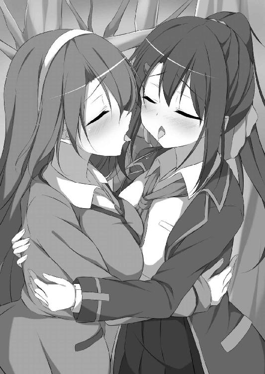
ふたりは、ぶつけるように唇を合わせ、うわ言のように何度も「好き」と囁き合った。そして、朦朧となった頭で理解する。茉友に嫌われるのを極端に怖れていた理由を。そして、彼女とキスしたくて堪らなかったわけを。
（当たり前だよ。だって......好きなんだもん......。好きになっちゃったんだもん）
むしろ今まで気づかなかった方がおかしいほど。キスがこんなに気持ちよくても、何の不思議もない。疑問も躊躇もなくなった夏希は、茉友の唇に激しく吸いつき、舌を引き抜く勢いで唾液を啜り上げた。
「じゅる、じゅるるる！ ふぁぁぁ......好き......。彩守さん、好き......好き......ん、ンッ......あぁぁん、ん、ちゅ、じゅるっ、じゅるる、ちゅるぅっ！」
「ふぁ......あぁぁん！ せ、千羽さ......そんなにされたら、わたし......わたし......!!」
茉友も夏希にしがみつく。ふたりは屋外であることなんて完全に忘れ、顔を傾けてキスを深め、合わせた胸を捏ね回し、快感を高めていった。とろとろの茉友の唾液が喉に流れ込む悦びに、夏希の恥裂も涎を垂らす。
「あふ......ふぁぁぁ......。彩守さん......もっと、もっと欲し......ふぁん！」
「わたしも......千羽さん......あぁぁ......すご......すごい......ッ！」
夏希が茉友の舌に吸いつき、茉友が夏希の唇を吸う。唾液の混じり合う湿った音に耳が侵され、キスで気持ちよくなることしか考えられない。
「あたし......あぁ......彩守さん、あたし......！」
「わたしも、千羽さん......あ、千羽さんッ！」
ガクガクと身体が震える。腰が蕩けて立っていられない。ふたりは必死に抱き合い、身体を支えようとして、相手の脚の間に自分の脚を突っ込んだ。太腿が互いの股間を擦り上げ、激しい快感電流が頭のてっぺんから突き抜ける。
「ひッ、ひぁ!? 千羽さ......あ、あ、あッ、ふぁあぁぁぁっ!!」
「彩守さ......あん、あひ、ひぁ！ あぁぁ、ヒッ、あぁああぁぁぁぁっ!!」
何が起きたのか、快感に呆けた頭では理解できない。夏希と茉友は全身を大きく痙攣させ、無我夢中で相手の身体にしがみついた。膝が崩れて芝生の上にぺたんと座り込む。
「はぁ......あ、はぁ......はぁ......」
それでもふたりは、飽きることなく唇を求めた。混じり合う熱い吐息を聞きながら、淫猥なキスに耽り続けた。
もう一回、試してみる？ なんて話だったはずなのだけど。
「......あ、ん、ふ............あ......ちゅっ」
女の子の密やかな息遣いが、抜けるような真昼の空に溶ける。
初めての「ちゃんとしたキス」から、約十日。それ以来、夏希と茉友は毎日のように口づけを交わしていた。
「はぁ......」
息継ぎしようと、いったん唇を離して茉友を見詰める。彼女も夏希の瞳を見詰め返す。でもすぐに気恥ずかしくなって、互いに視線を逸らす。それでも、唇は磁石のように引かれ合い、自然と再び重なってしまう。
頭が真っ白になるほどの快感は、ふたりを一度きりのキスでは終わらせなかった。もう一度だけ、もう一回だけと言い訳を繰り返し、唇を求め合った。今日も、人気のない特別教室棟の屋上で、お弁当を食べるのも忘れて身体を寄せ合う。
（やっぱり、茉友の唇って、柔らかくて気持ちいい......）
キスを同性で知ったことに、不思議と後悔も抵抗も生まれない。それどころか、こうしていると胸がいっぱいになって、温かくなって、むしろ茉友でよかったとしか思えなくなる。確かめてはいないけど、きっと彼女も同じ気持ち。だって、そうでなければ、日ごとに積極的になって自分から舌を伸ばしてきたりはしないだろうから。
「はぁ......夏希ちゃん......ちゅっ」
茉友の唇が、小鳥のように夏希の舌を啄む。舌先に細かな振動を与えられると、それが増幅しながら背中を走る。夏希の腕に軽く添えられていた手が、しっかりと腰に巻きついてきた。夏希も彼女の髪を撫で、逆襲のように口腔内に舌を挿し入れ、躍らせる。
「ん、あぁぁ......。茉友、可愛い......すっごく可愛い......。ちゅ、ちゅるっ」
「あん......っ。な、夏希ちゃ......あん、ン、きゅ、ふ......！」
茉友はか細く悲鳴を上げ、再びお返しとばかりに唇に吸いついた。何度も攻守を交代して、相手を喘がせることに夢中になる。
下の名前で呼び合うようになったのは、ほんの三日前。そうしようと夏希が提案したのは一週間前だけど、気恥ずかしくて、なかなか実行に移せなかった。その頃は、キスも自分の快感を求めてばかり。やがて回数を重ね、相手を気持ちよくさせるのを覚えた頃、ようやく呼び方を変えることにも違和感がなくなっていた。
「はぁ......。夏希ちゃん、好き......。夏希ちゃんとのキス、大好きぃ......」
「あれ？ 茉友、あたしのことより、キスの方が大好きなの？」
快感熱に浮かされた茉友のうわ言を、冗談めかして責めてみる。すると彼女は拗ねたような顔で、恨みがましく夏希を見上げた。
「バカぁ......。そんなの、夏希ちゃんの方が好きに決まって......ん、ぅン......あふ......」
そして、蕩けるように柔らかい唇を擦りつけてくる。茉友を見ていると、つい苛めたくなるけれど、もちろんそれは、彼女が可愛すぎるから。
「ああん......。茉友、可愛い......あたしも大好き......。ちゅ、ちゅる、れるるっ」
「ン、あン。はっ......ん、きゅふっ......！」
半開きになった唇の間に舌をそよがせると、茉友の身体が小刻みに痙攣した。下唇もぷるぷる震え、そして恥ずかしげに、でも物欲しそうに舌を伸ばす。控え目な少女が見せる欲情に興奮し、夏希も、唾液を攪拌するように彼女の口腔を掻き回す。
「はっ......はぁ、はぁぁぁ......」
いったん、息継ぎのため唇を離した。ふたりの間を、粘った唾液の糸が繋ぎ、茉友の顎に貼りつく。しかし彼女は気づいていないのか、酔ったようにとろんと蕩けた上目遣いで激しく夏希をときめかせた。
最初のうちは、お互いの家を訪ねてキスに耽っていた。外では目撃される危険性が高いという、極めて常識的な判断からだったのだけど、やがて、それでは我慢できなくなってきた。廊下で顔を合わせようものなら、唇がウズウズして放課後まで待ちきれない。
だから、学園内で求め合うようになるまでに時間は掛らなかった。とはいえキスできる場所なんて限られている。あちこちさまよっているうちに、結局ここに辿り着いた。
人目を忍んでの、恋しい人との秘密の日課。ただ、一緒にキスできる場所を探している間、夏希は、罪の意識にも似た、戸惑いのようなものを覚え始めていた。
（どうして、あたしは茉友にこんなことさせてるんだろう）
普通は女の子同士ですることじゃない。それに、茉友は普通の女の子じゃない。人気モデルのＭＡＹＵでもある彼女に、誰にも明かせない秘密を抱えさせてしまった。情動に衝き動かされて付き合い始めたけど、また間違いを犯しているんじゃないだろうか。
こうして抱き合っていると、背徳感の悦びと罪悪感の痛みが、胸の奥から交互に顔を出す。そのくせ、みんなに内緒で人気モデルを独占しているということに、浮き立つ心を抑えきれない。
「............どうかした？」
夏希の動きが止まったのを不思議に思ったのか、茉友が唇を離して瞳を覗いてきた。この胸のつかえは、告白するべきなんだろうと思う。それでも、また彼女を怒らせるのが怖かった。悲しい思いをするのもさせるのも、もう二度としたくない。
「......何でもない。......あんまり茉友が激しいから、舌が痺れちゃった」
彼女に心配させたくなくて、舌を出しておどけてみたら、真に受けた茉友の顔がカッと赤くなった。
「......もう、ばか」
膨らませた頬をぶつけるようにして、茉友が夏希の胸に顔を埋める。羽のように軽い体当たりは、彼女の意図はともかく、心地いい。
「あは......。夏希ちゃん、いい匂ぉい......」
怒ったわけではないみたいだ。夏希の背中に腕を回し、うっとりと呟く。自分の匂いがどうかは分からないけれど、茉友のならよく知っている。
「茉友のも、いい匂い......」
彼女の髪は、爽やかな柑橘系。でも、夏希にはもっと好きな匂いがあった。抱き合ってキスしていると、制服から覗く彼女の細い首筋が、うっすらと汗ばんでくる。白い肌から匂い立つ、ほんのりと甘い香りが、夏希を誘惑しているようで我慢できない。
「──ちゅ」
「ひゃあん!?」
いきなり首筋に吸いつかれた茉友が、声を裏返して悲鳴を上げた。
「な、何するの？ びっくりしたぁ......」
「んー。んふっ、ごめんね。茉友が、あんまりいい匂いだったから」
「へ......変なこと言わないでよ、もう......」
ちっとも変じゃないと思うし、匂いのことを言い出したのは彼女の方なのだけど、拗ねて抱きついてくるのがあまりにも可愛くて、反論する気なんて失せてしまう。
「茉友のこんな匂い知ってるの、あたしだけなんだね......。あーあ、誰にも自慢できないのが悔しい～ぃ！」
割と本気で悔しがり、茉友の細い身体をギュッと抱き締める。でも、今度の彼女の反応は薄かった。抱き返してはくれるけど、力は弱いし、夏希の胸に顔をつけて俯いたまま。
「自慢になんか、ならないよ......」
ただ、そう小さく呟いただけ。控え目な彼女のことだから謙遜しているだけかと思ったけれど、目を合わせようとしない。
「......茉友？」
何だか様子がおかしい。不安になって呼び掛けると、不意に、茉友がぷっくりと頬を膨らませた顔を上げた。
「自慢とか......言い触らしたりなんかしないでよ？」
「し......しないよ、そんなこと！」
茉友とのことを、女の子同士で付き合っていることを、誰に話せるというんだろう。さっき胸に仕舞い込んだ罪悪感を見透かされたみたいで、つい焦りが顔に出る。
見計らったように、昼休み終了のチャイムが鳴った。茉友を抱き締めていた腕を解く瞬間は、いつも辛い。彼女との間に、心残りが纏わりつく。
「お昼、食べ損ねちゃったね」
茉友が、足元に放置されていたお弁当箱を抱えて苦笑い。その笑みに、何かをごまかすような不器用さを感じるけれど、それを確かめる時間はなかった。
「あ、あのさっ。......放課後は、会える？」
ともかく、もっと一緒にいたい。教室に戻ろうとする茉友に尋ねると、彼女は振り返って、いつもと同じように柔らかく微笑んだ。
「撮影のお仕事があるけど、その後なら大丈夫。終わったら連絡するね」
待ち合わせは、駅前ビル二階のコーヒーショップ。といっても、学園最寄りの駅ではなく、そのひとつ隣。確かに時間を潰すのにちょうどいいし、何といっても、ここならば、いつかのように知り合いに会うことも少ない。
数日間に「いいところ見つけたんだ」と、茉友がはしゃぎながら教えてくれた。夏希は誰かに見られても一向に構わないのだけれど、彼女はそうじゃないみたいだ。
「......まだ、クラスメイトとうまくいってないのかなぁ......」
カフェラテを注文し、窓際のボックス席に座ると、いつものようにスケッチブックを取り出した。でも駅前の人の流れを眺めるだけで、すぐに鉛筆を持つ手が止まってしまう。
茉友は、人と群れるのが苦手。けれど女の子は、すぐにグループを形成したがるもの。その輪にいったん入り損ねると、後からの合流は難しい。
ただ、茉友が待ち合わせに知り合いの目を避けるのは、自分が気まずい思いをするからではなく、茉友と一緒にいることで、夏希まで仲間はずれにされることを心配してのことらしい。彼女は何も言わないけれど、言葉や態度の端々から、そんな意識が窺える。
「そんなの、気にしなくてもいいのに」
クラスが違うから、お隣の事情はあまり関係ない。だいたい、学園内でイチャついてる方がよっぽど危険だろう。
「世界にふたりきりなら、こんなことで悩まなくていいのにな......」
ふと、隣の席にいた女性が、立ち上がり際に夏希を横目で見ていった。何だろうと首を傾げ、その視線の意味にようやく気がつく。
（もしかして......あたし、さっきから全部声に出てた!?）
どうせ見ず知らずの人だけど、恥ずかしさで顔が熱くなる。特に最後のひと言なんて、さぞかし変な女の子だと思っただろう。
（あーん、もー！ これも、みんな茉友のせいだ！）
理不尽な責任転嫁で平静を保とうとする。それでも居た堪れなくて、自分の羞恥を紛らわせる何かを求めて周囲に視線を巡らせた。その甲斐あってか、窓の外、向かいのビルの壁面に、気になる巨大広告を発見する。
（ＪＧＳ......ジャパン・ガールズ・スタイル。そっか、そういう時期か）
年に二回ある、十代後半から二十代前半の女子向けのファッションショー。ターゲット層が相当に絞られていながら毎回大盛況で、会場になっているドーム球場が女の子だけで溢れ返るという。人気モデルが多数出演し、開催のたびにニュースやワイドショーで取り上げられている。
（あたしも、一回でいいから行ってみたいなぁ）
チケットは、発売と同時にソールドアウト。チケット販売サイトやモデルのファンクラブなどに会員登録してあると優先的に買えるみたいだけど、夏希はいずれもしていない。そもそも、今までは行きたいという強い欲求がなかった。デザイナーを目指すと言いながら、プロの世界に触れるのが怖かったんだろうと思う。
（そんなので、よく茉友を追い回したな......）
今にして思うと、あの時は、本当はファッション業界なんかどうでもよくて、茉友に会いたいという一心が、夏希を衝き動かしていたような気がする。だから、もし彼女と仲良くなっていなかったら、ショーに行きたいなんてこと、今も思いもしなかったはず。
なんてことを考えていたら、急に茉友に会いたくなった。願望が、つい声になる。
「あーあ。茉友、早く来ないかな──」
「来たよー」
「............わぁ!?」
急に背後から声を掛けられ、びっくりして椅子から落ちそうになる。振り返れば、腕だけでテーブルにぶら下がる夏希を、制服姿の茉友が不思議そうに眺めていた。
「夏希ちゃん、何してるの？」
「何って、茉友が急に声を掛けるから......いや、何でもない」
茉友に独り言を聞かれたことやら、斜めになった格好やら、色々と恥ずかしすぎて言い訳する気力もない。ともかく姿勢を直し、カフェラテで呼吸を整える。
「......早かったね」
「うん、思ったよりスムーズに進んで。だから、夏希ちゃんをびっくりさせようと思って連絡もしなかったんだけど、驚いた？」
「......見れば分かるでしょ」
「そうだね。ごめんなさい」
いつの間にか注文していたコーヒー片手に、クスクスと笑う茉友。でも、夏希の隣に座った彼女から、笑みが消えた。視線の先には、広げたままのスケッチブック。
「......あっ！ ご、ごめんっ」
ファッション関係の話はしないという約束。この前も破ってしまったばかりなのに、注意が足りなすぎた。というか、茉友から連絡が来たら片付ければいいと思っていたので、不意打ちに対応できなかったのだけれど。
慌ててスケッチ道具を鞄に放り込むと、茉友の方が申し訳なさそうな顔になった。
「そんなに神経質にならなくても大丈夫だよ。もし途中なら、続けていてもいいし」
「え、でも......」
「この前も言ったでしょ。もう少し前向きになるって。もう、お仕事の話をされても気にしないから、何でも聞いて」
夏希のスケッチブックを見て顔を曇らせたくせに。まだ、わだかまりが残っているに違いない。でも、だからこそ、遠慮しない方が彼女のためなんだろうと思う。
かといって、いきなり言いなりになるのも無神経すぎる。
「ささ、夏希ちゃん。続きをどうぞ。それとも、何か聞きたいことある？」
なぜか茉友はすっかりその気で、前のめりになって質問待ち状態。何か聞けと言われても、急になんて出て来ない。
「......えーっと......あ」
夏希の目に、さっきの巨大広告が飛び込んで来た。これなら話題を広げられそうだ。
「あれあれ、ＪＧＳ！ あれの舞台裏ってどんな感じ？」
「舞台裏？」
夏希が指差す方を見て、茉友も何の話題かを理解する。
「ほら、ファッションショーの裏側ってすごいっていうじゃない。衣装の早着替えのために、男性スタッフの前でもモデルさんは素っ裸で歩き回ってるとか」
思いつきでした質問にすぎなかったのに、不意に、夏希の胸がざわつき始めた。
自分の言葉が、まだ見たことのない彼女の裸を頭の中に思い浮かばせる。そして、スタッフ環視の中、全裸の彼女が生着替えしている光景までが。自分に無断で茉友の裸を見ている連中が許せない。脳内に生まれた、妄想敵への嫉妬が湧き上がる。
「どうなの？ 茉友もそういうことやってるの？」
勝手にいきり立つ夏希に、茉友は困ったように眉を下げた。
「あー......ごめんなさい。よく知らないの」
「知らない？」
戸惑う夏希に、彼女は椅子の上でモジモジと、恥ずかしそうに身体をくねらせた。
「わたし、ショーに出た経験がなくて。ＪＧＳだけじゃなく、小規模なものにも、全然」
「そ、そういうものなんだ」
茉友はもう一度頷き「ごめんなさい」と肩を竦めた。
「ううん。あたしの方こそ、よく知らないのに、ごめん。でも、そっか。モデルなら、みんながみんなショーに出演するわけじゃないんだね」
まだデビュー一年あまりでキャリアが浅いのと、人前に出るのが苦手なため、そういった話があっても断っていたらしい。
「でもさ、これからお仕事頑張るんでしょ？ それで人気が出たら、活動の場も広がってくるわけじゃない。テレビとかはまだ先だとしても、ファッションショーからっていうのは、近い将来の話として、割と現実的だと思うんだけど」
「う～ん、どうかなぁ。わたし自身に、そんなに需要はないだろうし......」
夏希の話に、懐疑的な表情で首を傾げる茉友。どうも、この娘は自分の人気を知らなすぎる。ファッション雑誌という限定された世界とはいえ、その中でどれだけファンがいるか、仕事関係者からも、教えてもらってないんだろうか。
（......と、そうだそうだ。茉友は有名人なんだった）
色々と動転していたせいで気が回らなかったけど、店内の女子高生や女子大生が、チラチラとこちらを窺っている。その中に、彼女がＭＡＹＵだと気づいた人がいてもおかしくない。制服の夏希が一緒だから遠慮しているのかもしれないけれど、積極的な子でも混じっていたら、話し掛けられるのは時間の問題。
「そろそろ行こっか」
自然な感じを装って、茉友と店から出る。そして最初の予定通り、電車で夏希の家へ向かった。今日は親の帰りが遅い。思う存分イチャイチャするつもりで、心が躍る。
座席は空いているけど、ドア付近に並んで立つ。その方が、顔を近づけて内緒話みたいにお喋りできるから。でも、キスできそうな至近距離にドキドキする。本当にしたら、周りの乗客はどんな反応をするんだろう。いけない妄想を実現させてしまいそうで、理性を取り戻すために、夏希はあえて話題を蒸し返した。
「そ......それでさ、さっきの話だけど」
「さっきの？ 活躍の場がどうって、あれ？」
間近で可愛らしく首を傾げる茉友にドキリとしながら、平然を装い説得を試みる。
「そのうち茉友もショーへの出演があるかもだし、その時になって何も知らないとか、やっぱりマズイと思うの。あたし、茉友が先輩モデルたちの前で恥掻くの見たくなーい」
「そ、そうなのかな......」
最初は聞き流していた茉友だったけど、必死な夏希に説得されて、次第に真剣に聞くようになってきた。この流れを逃すまいとして一気にたたみ掛ける。
「そうそう。だから、人前で着替えたり、胸とか裸とか見られたりしても平気なように、今のうちから練習しておかなくちゃ！」
「う～ん............」
渋るように茉友が唸る。裸に慣れろは、さすがに無理がありすぎただろうか。もちろん本気で言っているわけじゃない。要は、自己評価の低い彼女に、自分は人気者なのだと自覚してもらえれば、それでいいのだから。
とはいえ、そろそろ駅も近い、この話題も潮時。そう思っていたら、視線を下に落としていた茉友が、思い詰めたようにぽつりと呟いた。
「......そうだね、必要なことだよね。......夏希ちゃん......練習に、付き合ってくれる？」
「......え？」
下から覗き込むような彼女の視線にドキドキする。話を半分しか理解できない。
「れ、練習って......何の？」
聞き返すと、茉友は不機嫌そうに唇を曲げ、でも拗ねたように甘えた声で囁いた。
「だからぁ......。は......裸を見られても平気になる、練習ぅ......」
自分の部屋に茉友を招き入れるのは初めてじゃないし、そのたびにここでキスをした。今さら動揺することもないと思っていたのに、緊張感が半端じゃない。
「ホ......ホントにするの？」
フローリングの床に敷いたクッションに、正座で向き合う。彼女は、無言でコクリと頷いた。きりっと結んだ唇に、相当の覚悟が見える。
彼女はこれから、夏希に、自分の裸の胸を晒そうとしている。
「......いや、いやいや。ちょっと待って！」
形や色を想像してしまい、そんな自分に焦って、両手を突き出し茉友に自制を求める。
「あたしが言ったのは、パリ・コレとかの世界的な場での話であって......。ＪＧＳって、普通の女の子が普通に着られる服のファッションショーだよね？」
言いながら思い出した。以前、ＪＳＧの舞台裏をテレビで特集していたことを。確か着替えは控室の中でしていて、当然、そこには裸で歩き回る人なんていなかったわけで。
「だ、だから、慌てて練習するようなことじゃないよ」
もしかしたら、将来は世界の舞台で大活躍しているかもしれない。だからといって、今すぐに対応を考える必要もないはず。そう説得したにもかかわらず、茉友は、髪が水平になびくほど、ぷるぷると首を横に振った。
「ううん。夏希ちゃんの言う通りだし。わたし、自分ではやる気を出したと思っていたけど、覚悟が足りないって分かったの。それに......」
まるで熱に浮かされたように、毅然としていた茉友の瞳が潤み出す。尻込みする夏希を引き込むように、声が甘く蕩け始める。
「思いついた時にやらないと、覚悟が鈍っちゃうもん」
言い出したら曲げない。人見知りで内気なのに、意外と頑固なところがある。茉友は、飴玉みたいに可愛い声で、とんでもない決意を表明した。確かに彼女を思って言い出したことだけど、ここまで真に受けられると、罪悪感で胸がチクチク痛む。
「だから......見て......」
躊躇から抜け出せないでいる夏希をよそに、茉友は自分の制服を脱ぎ始めた。ブレザーは丁寧に畳んで、床の上に。胸元のスカーフを抜く時の、小さな衣擦れの音が緊張感を高める。スローモーションのような茉友の動きから、目を逸らすことができない。白いブラウスのボタンが上から外され、淡いピンクのブラジャーと、そして──。
（おっぱい......茉友の......！）
彼女の乳房の、その膨らみが顔を覗かせる。ほんの一部、麓の一端にすぎないけれど、柔らかそうなのが見ただけで分かる。
いくら魅力的な乳房だとしても、同性の胸。興奮なんてするはずがない。そう思っていたのに、彼女の膨らみを、その一部を目にしただけで、夏希の欲求は暴走を始めた。ボタンがひとつ外されるたび、茉友の秘密が暴かれていくようで、その素肌に釘付けになる。
「ちょ、ちょっと待って！ やっぱりダメだよ、こんなこと......」
欲望に流されそうになる身体に鞭打ち、夏希は再び彼女を止めた。せっかくの覚悟の行為を中断されて、茉友が不満げな顔をする。
「もっと自分を大切にしないと。こ......こんな、自分を安売りするみたいな真似......」
細くて頼りなげな首筋と、すべすべ気持ちよさそうな白い胸元から必死に目を逸らし、脂汗を流しながら説得する。そんな夏希に、茉友はクスリと微笑みかけた。
「やだ夏希ちゃん。大袈裟だよぉ。わたしは、ただ見て欲しいだけだよ？ 女の子同士なんだし、そんなに深刻な話じゃないってば」
「それは......そうかもしれないけど......」
好きな人の胸元を見て、冷静でいられるはずがない。それとも、同性の素肌に動揺する自分が変なんだろうか。意識しすぎていることが恥ずかしくなって、黙り込む。
「あ......あれ。......あれ？」
でも、茉友も冷静なはずがなかった。声は上擦り、しきりに首を傾げる。まるで極寒の地にいるように指が震え、毎日のように扱っているはずのボタンが、滑って掴めない。
「お......おかしいな......。ちょ、ちょっと待っててね、夏希ちゃん」
何度も再挑戦する茉友。しかし、ボタンは彼女の指先からつるりと逃げる。
自分から胸を見て欲しいなんて、なんて大胆な娘だろうと思っていた。でも違った。いくら友達でも、改めて胸を見せるなんて、恥ずかしくないはずがないのに。
夏希は、泣きそうな顔でボタンと格闘する茉友の手を、そっと押さえた。
「こ......こういうことは......言い出した方が、せせせ、責任とらなくちゃねっ」
格好をつけたつもりが、自分の声も、みっともないくらい震えていた。でも、自分の変な挑発のせいで、これ以上、彼女に恥は掻かせられない。
「夏希ちゃん......」
涙声のような茉友の呟きを聞きながら、夏希は自らも服を脱ぎ出した。ブレザーを放り投げ、引きちぎるような勢いでブラウスのボタンを次々と開ける。乱暴なくらいにしないと、怖くて、恥ずかしくて、茉友以上に手が震えてしまいそうだったから。
奇跡的に滞りなくブラウスまで脱ぎ去り、夏希の上半身には、飾り気のない白いブラだけが残された。茉友の胸元からは可愛いフリルが覗くのに、それに比べたら淡泊で恥ずかしい。でも、そんなものなんて問題にならないくらい、夏希は頭が逆上せていた。
（見てる......。茉友が、あたしの胸、すっごい見てるよぉ......）
目を閉じても、茉友の視線が上半身に注がれるのをハッキリ感じた。胸元からお腹にかけての肌が、特に乳房の周辺が、無数の針に刺されるみたいに、チクチク痺れる。
そこは、ちょっとだけ自慢のＤカップ。完全な半球形がふたつ並び、我ながら悪くない形をしていると思う。でも、こんなにまじまじと見られた経験なんて、ない。身体が震えて正座が崩れ、ぺたりとお尻を着いてしまう。見ているのは女の子なのに、授業の着替えで下着姿を見られるのも珍しくないのに、どうしてこんなに緊張しているんだろう。
「はぁ......」
耳元を、微かな吐息がくすぐった。そんなに茉友が近寄っているのかと思って薄目を開けたら、彼女は元の位置のまま。肌だけでなく、色々な感覚が鋭敏になっている。
「......ンッ！」
そして、一番敏感になっている部分が、夏希の身体を強張らせた。緊張と羞恥のせいに違いない。硬くなった胸の先端が、身じろぎしただけでブラの内側に擦れて痛い。
でもその触感が、大事なことを夏希に思い出させた。
（そ、そうだ......。まだ終わりじゃないんだ......）
本番はここから。夏希は、カクカクと操り人形のようにぎこちない腕を背中に回し、まるで初心者のように悪戦苦闘しながらホックを外した。締め付けが緩んだと思った瞬間、ブラがはらりと前に落ちる。
「あっ!?」
強張った腕は、それを受け止めることができない。夏希はなす術なく、何も身に着けていない裸の胸を茉友に晒した。ハッと見開いた眼が、息を飲む茉友の姿を見た。見てしまった。彼女の視線が、一気に、一点に集中する。硬く尖った桃色の蕾に熱く注がれる。
（恥ずかしい......。あぁ......あたし......何でこんなことしてるんだっけ......）
頭が真っ白になって、そんな理由すら、すぐには思い出せなくなる。
見せるという約束なのだから、隠してはいけない。でも隠したい。なのに、まったく身動きが取れない。彼女が何も言わないのが、逆に羞恥を煽り立てた。
「ま、茉友ぅ......」
それだけを言うのが精一杯。でも彼女は返事もせず、無言で床に手を着き、夏希の胸ににじり寄った。
「夏希ちゃん......尖ってる......」
「──!!」
自覚していた恥ずかしい肉体の変化を指摘され、夏希の羞恥は限界を超えた。酸欠にでもなったように、身体がぐらりと大きく揺らぐ。慌てた茉友が小さく「あっ！」と叫び、左手で肩を抱えてくれる。そして、右手は乳房を包み、夏希は思わず喘いでしまう。
「んっ......きゅッ......」
それだけじゃない。彼女が触れているところが全部敏感になって、夏希の呼吸を激しく乱した。背中を茉友の腕に預け、喉を仰け反らせる。夏希は必死に息を整え、落ち着きを取り戻そうとした。けれど、身体を起こそうとした拍子に、胸に置かれていた茉友の指が乳首を跳ね上げる。
「きゅふあぁっ！」
感電したような衝撃が身体を走り、喉から奇妙な悲鳴が迸った。せっかく掴みかけた平静がするりと逃げる。代わりに、堪えきれない痺れが全身を包み込んだ。
「あうっ、うぁ......。はぁ......はぁ......」
うっすらと開いた瞳に、自分を見下ろす茉友が映った。異常に喘ぐ夏希に、唖然となっている。それは当然のはずなのだけど、そんな彼女もどこか様子がおかしい。唇が、薄く笑みを浮かべている
「夏希ちゃん......可愛い......」
「......え？」
熱に浮かされたように、茉友が呟いた。その手が乳房を撫でる。乳首を弾く。夏希の身体は、素直すぎるほど彼女の指に反応してしまう。
「ヒッ!? あっ......あっ！ ふぁ、う......ッ、くふぅぅぅン！」
身体は完全に後ろに倒れ、茉友に膝枕してもらう格好になった。Ｄカップの乳房に、彼女の掌が覆い被さる。大きく広がった五本の指が、柔らかで小高い丘を、優しく何度も揉みしだく。まるで、形や大きさを確かめるように。
「ふ......あぅ。や......やぁぁ......。おっぱい......おっぱいが............くッ、うンッ！」
じわじわとした心地よさが、乳房の麓から頂上に向かって集まっていく。茉友の手に合わせて、腰までがうねるように上下に動く。いっそ、痛くしてくれた方が楽になれると思うくらい、ゆっくりした動きがじれったい。眉を真ん中に寄せて窮状を訴えるけど、茉友は、夏希の悶え方に圧倒されたかのように、呆然とするばかり。
「凄い......。夏希ちゃん、どうしちゃったの......？」
「ど、どうしたも何も、こんなことされたら......あっ、そこ、そこ駄目......駄目っ!!」
「そこってどこ？ ......ここ？」
「だからそこ、は......ふぁぁぁうっ！」
コリコリとした乳首を、掌で転がされた。ふんわりした彼女の手に先端が埋まり、いかに自分のそこが硬くしこっているのかを思い知らされてしまう。
（ど......どうして、あたし......こんなに......あう！）
彼女の攻撃が乳首に集中し始めて、思考すら中断させられる。ゆるゆると触られているだけで、強く揉まれているわけじゃない。それなのに、夏希の身体は異様なまでに昂った。オナニーでも、こんなに感じたことはない。身に覚えのある淫靡な熱が下半身に生まれ、胸の疼きとひとつになって、お腹の中心で渦巻き始める。
でも、もっと変なのは、むしろ茉友の方だった。夏希の胸を嬲っておいて、不思議そうな顔をしている。
「夏希ちゃん......苦しいの？」
「え？ は？ 茉友、何を言って......きゅふぁん！ こ、こんなことされて......苦しいはず......くっ......はぅっ」
とぼけているんだろうか。でも、首を傾げながら夏希の顔を覗き込んでくる眼に嘘は窺えない。とはいえ今の夏希には、冷静に観察する余裕なんてなかった。身体の内側をチロチロと炙るような中途半端な快感に、心の方が耐えきれなくなっていた。朦朧とする意識の中、涙目で茉友を見上げる。乳房を嬲る彼女の手に、自分の手を重ねておねだりする。
「く、苦しくない、から......。気持ちいい......から......。もっと......強く、して......」
恥ずかしいことを口走ってしまった。しかし取り消すより早く、夏希の手が動き始めていた。茉友に愛撫の仕方を教えるように、自分の胸を揉みしだく。
「あんっ、そう......！ そんな風に......もっと強くしていいから......！」
彼女にしてもらっているのか、自分でしているのか分からない。夏希は茉友の膝の上ではしたなく身悶えし、胸の快感に溺れていった。
「夏希ちゃん......。こ、こうすればいいの......？」
茉友は、夏希の教えた動きを即座に吸収していった。単調だった動きに変化が加わる。膨らみを下から掬い上げたり、掌で乳房を押し潰すように転がしたり。さっきよりも分かりやすい快感に、夏希の身体が悦び始める。ためらいから解放されたように、全身で少女の愛撫を受け入れる。
「あん、ふぁあぁぁん！ ま、茉友ぅ......。もっと、乳首も......痛くしていいからっ。摘んで、捻って......そう、そうっ。いッ......ヒィッ！」
二本の指が、右の硬肉芽を摘み上げた。戸惑い気味の割には強い捻じり方に、鮮烈な快感電流が全身を駆け巡る。身体が仰け反り、茉友の膝枕から頭が落ちる。
「ごめんなさい夏希ちゃん！ 痛くしすぎた？」
「う、ううん。そんなには......て、茉友......ふあぁっ!? あぁぁぁ......」
何を思ったのか、茉友は夏希を床に横たえると、いきなり乳首を口に含んだ。痛みを癒そうとしてなんだろう。舌で乳首を撫で転がす。温かい唾液に包まれて、痺れた先端がジンジン疼く。夏希は、癒されるどころか新しい快感に苛まれ、堪らず床に爪を立てた。
「ん......ちゅ、ちゅぱっ......。夏希ちゃん、気持ちいい？」
「い......いい......。すごくいい......。お願い、反対側も......」
左側は捻られていないので、痛くない。でも夏希が悦んでいるのは伝わっているのか、茉友は疑問に思うことなく、そちらの乳首も頬張ってくれた。舌で転がし、弾き、搦め捕る。キスで覚えたテクニックを駆使して、敏感な桃色突起をちゅぱちゅぱ舐め回す。
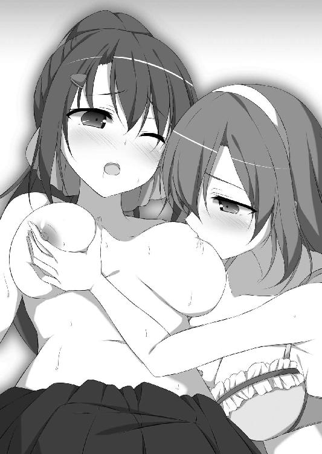
「んふぁっ、あ、うっ......。いい......。茉友、気持ちいいよぉ......！」
ひりひりとした快感が、先端部から広がるように乳房を覆う。滲む涙で紗の掛かった視界に、乳首を咥えた唇が映る。女の子の胸を、女の子の唇が舐めている。自分の身体に起きていることなのに、映像が衝撃的すぎて、現実として頭が受け入れられない。毎日のようにキスをする仲になったのに、それでも、この光景は信じられない。
（あぁ......嘘......うそだよ、こんなの......。だって、茉友があたしのおっぱい舐めるはずが......。でも、でも、あぁ......）
それでも、身体の中を渦巻く疼きが、嘘でも夢でもないと訴える。舌が乳首を撫でるたびに、甘い痺れが指先まで震えさせる。
「はぁぁん、あっ、ンッ......ふぁあぅ。い、いい......いい......っ！」
「ん......夏希ちゃん......。ん、ちゅ、ちゅぱ......ちゅっ！」
夏希が喘ぐと、茉友の動きに迷いがなくなってきた。もちろん、初めてであろう彼女の愛撫は上手でも何でもない。でも好きな娘に乳首を舐られる快感は、オナニーなんかの比じゃない。もっと気持ちよくなりたくて、胸を突き出しながら彼女の頭を抱え込んだ。夏希の無言のおねだりに、茉友は左側を舐めながら、右の胸にも手を伸ばした。不慣れながらも、精一杯の手つきで膨らみを捏ねる。
「茉友、おっぱい......おかしくなる......。どうして、胸だけでこんな......はぁン！」
音を立てて乳首を吸われ、夏希は切ない快感に喘ぎを漏らした。下半身には一切触られていないのに、脚の間が激しく疼く。構ってもらえない秘裂が、不満を訴えるように下着の中で卑猥に蠢く。自分で触ろうにも、茉友がお腹に跨っていて、手が届かない。かといって、初心者の彼女にそこも触ってもらおうなんて、無理強いしすぎる。解消されない欲求を、夏希は内腿を擦り合わせて必死にごまかそうとした。
「あ......ぐッ、うっ......ふぅぅぅん......！」
頭を左右に振って、拷問のような快感に耐える。ふと、食い縛った唇に、濡れた何かが触れた。のし掛かるように上半身を倒した茉友が、夏希の唇に舌を這わせている。表情は呆けたように締まりをなくし、瞳も熱っぽく潤んでいる。
「な......夏希ちゃぁん......。わたし......変。なんか、変な気分になっちゃった......」
「ま、茉友......ン、んンッ!?」
彼女はいきなり顔を近づけ、キスで唇を塞いできた。舌先同士が触れ合って、夏希の頭の中で火花が散る。堪らず彼女に両手でしがみつき、無我夢中で唇と舌を絡め合う。唾液の混じり合うピチャピチャという粘着音が、理性も羞恥も吹き飛ばす。
「夏希ちゃん......んむ、ちゅ、ちゅぱ、じゅるじゅる、ちゅッ！」
「あふ......ま、茉友......ン、んんっ、ンふぁあぁぁっ！」
乳首を捻じられて、仰け反った腰が茉友を跳ね上げた。彼女のお尻が浮いて、お腹との間に隙間が生まれる。夏希は快感に溺れながらも、本能的にその隙を逃さず、自分の股間に手を伸ばした。悶えていたせいでスカートは派手に捲り上がり、露わになっていた下着の中に指を突っ込んだ。途端に、どろどろに蕩けた淫肉が指を包み込む。
「ンあぁぁぁっ!!」
肉欲に衝き動かされ、夏希は夢中で自分の恥裂を擦り上げた。もう一方の手も股間に伸ばそうとしたけれど、絡みついてきた茉友の手で、床に押しつけられる。舌と乳首を彼女に責められ、性器を自分で苛め抜き、快感で頭がどうにかなってしまう。
「ン、あ、茉友っ！ あたし......おかしくなるっ！ イク......イッちゃう！」
「え......夏希ちゃん、大丈夫......ふぁ!?」
切迫した悲鳴に驚いたように、茉友が顔を上げてしまう。でもこんなに差し迫った状態で、愛撫の中断なんて生殺し。恥じらいもなく駄々を捏ねるように続きを求めてしまう。
「やだやだ、やめないで！ お願いキスして！ おっぱい苛めて！」
「う、うん......！」
どこか声に戸惑いを残しつつ、茉友は舌で口腔を掻き回し、乱暴なほど乳房を捏ねた。手加減を知らない彼女の責め苦に、秘裂を擦る指も速度を上げる。
「んぶ、あぅ、ああぅッ！ ほんとにイク......イッちゃうから！ あたし......あッ！」
ずるりと舌の表面同士が擦れ合った。同時に乳首が捻り上げられ、淫液で滑った指がクリトリスを根元から弾き上げる。
「ンあ、ンぁうッ！ イッ......クぅっ！ お......おっぱいで、イッちゃうよぉぉぉっ!!」
腰が大きくビクンと跳ねた。身体が浮き上がるほどの衝撃に、頭の中が真っ白に塗り潰される。胸の先端はピリピリ痺れ、それなのに、乳房や腰が蕩けそうに気持ちいい。
「はぁ......」
茉友が、唇から唾液を垂らしながら身体を起こした。まるで彼女までイッてしまったかのように頬を紅潮させ、焦点の合わない眼で息を荒らげ、夏希の脇にごろんと横たわる。
夏希は、裸の胸を大きく上下させながら、そんな彼女に微笑みかけた。
「はぁ......はぁ......。す、すっごく......気持ちよかった......。こんな風に......はぁ......誰かに触られるのって初めてだから......恥ずかしかったけど......でも、茉友、上手......」
「そ、そんなこと......夏希ちゃんに喜んでもらいたくて一生懸命だっただけで......」
自分の行為が今さらながらに恥ずかしくなったのか、茉友は小さく握った手で口元を隠した。その仕種があまりに可愛くて、彼女に触られていた胸がキュンとときめく。
「あは......。でも、まさか茉友にイカされちゃうなんて思わなかった」
考えてみたら、茉友には絶頂の瞬間を見られてしまったわけで、そう思ったら、ピンと尖ったままの乳首や、桜色に染まった肌、肉体が示した性的な反応の全てが恥ずかしくて堪らなくなった。
（うっわ～......。あたしってば、なんてことを......）
茉友とはたくさんキスをしてきたけれど、こんなに感じたのなんて初めて。それにやっぱり、胸を見せたり触られたり舐められたり、ましてや絶頂を見られるなんて、恥ずかしいなんてものじゃない。慌てて彼女に背を向け、羞恥をごまかすように苦笑いする。
「あ......あはは......。ごめんねー。変なことさせちゃって......。む......胸を見せるだけのはずだったのにね！ な......な～んで、イクまでしちゃったかなぁ～？」
あえて明るくおどけてみせて、場を和まそうとした試みは、逆に自分の馬鹿さ加減を思い知らされるだけ。冷静さが戻るほどに、茉友の顔が見られなくなる。
でも、彼女の反応は、夏希の思いもよらないものだった。
「それ......なんだけどさ......」
背中に話し掛けてきた声には、戸惑いしか窺えない。恐る恐る、肩越しに茉友を振り返れば、頭の上にクエスチョンマークでも浮かんでいそうな不思議な顔。
「夏希ちゃん、この前もそんな風になったけど............イクって、なに？」
「............へ？」
翌日の午後は教師の都合で授業の入れ替わりがあり、二時限続けて体育になった。それも珍しいことに、茉友の隣のクラスと合同で。ふたクラス分の女生徒が思い思いにチームを作り、バレーボールを楽しんでいる。
現在、夏希のチームは待機中。体育館の壁際に座り、他のグループの試合を見ていた。視線の先では、Ｔシャツにスパッツ姿の茉友が、必死にボールを追い掛けている。
レシーブに失敗してボールを後ろに逸らせ、サーブは相手コートに届かない。やはりというべきか、茉友は運動神経があまりよろしくない。明らかにチームの足を引っ張っている感じだけど、少しも腐らず真剣に取り組んでいる。
（......茉友、クラスの娘たちと、うまくやってるのかな）
時々隣のクラスの様子を漏れ聞く感じでは、以前ほど孤立している印象はない。ただ逆に、仲のいい友達ができたという話も聞かない。それでも、こうしてチームに貢献しようとしているのを見ると、少なくとも茉友の方からは、壁を取り払おうと努力しているんだろうと思う。
（あ、またボールを逸らした。ほんと、茉友って運動苦手っぽいなー）
この分だと、クラスに溶け込むには、まだ多少の時間は必要かもしれない。でも茉友が歩み寄ろうとしているなら、そのうち打ち解ける人も現れるだろう。
（......それはそれで、ちょっと妬けるかな）
自分より仲良くなる人の出現だけは、できればご遠慮願いたい。
そんな嫉妬心や独占欲が自分の中に生まれていることに驚きながら、夏希は、ぼんやりと昨日のことを思い出していた。
（それにしても......びっくりしたなぁ。まさか、茉友がイクことを知らないなんて思わなかった）
それどころか、色々と問いただしてみた結果、彼女の性的な知識は、せいぜい少女マンガのキス程度。最近はエッチで過激な表現のも多いはずだけど、たまたまなのか、そういう作品とは出会わなかったみたいだ。遠回しに聞いた限り、オナニーもしたことがないどころか、その行為自体を知らないっぽい。
保健体育で習った以外の実践的なあれこれは、あまり詳しくないらしい。初めてのキスの時、彼女も絶頂したように見えたけど、夢中で記憶が曖昧になっているみたいだ。
（あ、危なかった......）
あの後、自分も絶頂を知りたいと茉友に迫られた。そんなに気持ちいいことを、夏希だけが知っているのなんて許せないと、かなりしつこく。タイミングよく母親が帰って来なければ、押し切られていたかもしれない。
（この歳でエッチなことを知らないのも、それはそれでどうかと思うけどさ......）
実際にするばかりじゃなく、女の子が自分の身を守るためにも必要なこと。もちろん、自分が教えてあげるのもやぶさかじゃない。ただそれも、茉友が普通の女の子だったらの話。有名女優の娘さんの性教育なんて、一般人の夏希には荷が重すぎる。
変なことを教えなくてよかったと、夏希は安堵の溜め息を漏らした。彼女の母親に責任を取れなんて責められる場面を想像すると、それだけで背中に戦慄が走る。
（でも、責任っていったら......一般的には、お嫁さん？ 茉友が、あたしの？）
それはそれで悪くない。今度は顔がにやけてきた。
「......夏希、何を気持ち悪い顔してんのよ。行くよ？」
恵美に肩を叩かれ我に返る。新婚生活を妄想していたら、いつの間にか夏希たちの番になっていた。慌ててコートに入ってみれば、相手は茉友のいるチーム。どういうローテーションなのか、彼女たちは二連戦になったみたいだ。
「手加減しないからね」
ネット越しに挑発したら「夏希ちゃんのイジワル」と、への字口で睨まれた。いくら頬を膨らませたところで、可愛いので少しも怖くない。
もちろん、茉友を狙ったりなんかしない。夏希は可能な限り彼女を避けて、スパイクを決めていく。それでも挑発に憤ったのか、茉友も果敢にボールを拾いに来た。残念ながら、掠りもしないけど。それに相手チームは連戦の疲れもあって、点差が大きくなっていく。
「......夏希ちゃん、本当に手加減しないんだね」
サーブの合間に、今度は茉友から声を掛けてきた。怒っているというよりは、呆れている感じ。
「ふふーん。何だったら、もっと本気出せるよ？」
今日は特に調子がいいので、夏希も軽い感じで言葉を返す。すると、彼女の目がスッと細くなった。まるで、何かを企んでいるかのように。しかし、点差に気を良くしていた夏希は、その変化を気にも留めなかった。
だから、彼女の不意打ちに備えて身構えることすらしていなかった。
「ところで夏希ちゃん。昨日の話だけど......わたし、諦めてないから」
「昨日のって......え、ちょっと!?」
まさか、こんなところでエッチの話をしてくるなんて。完全に油断していた夏希は、プレイの再開を見ていなかった。気づいた時には、頭上にトスが上がっている。
「夏希！」
チームメイトの声で、慌ててジャンプする。そんな状態で、力加減やコースのコントロールができるはずがない。あっと思った時には遅かった。
何かが破裂したように派手な音が、体育館中に響き渡った。夏希のアタックを真正面から受けた茉友が、ゆっくりと後ろに倒れていく。
コートの内外が女生徒たちの悲鳴で騒然となり、女性体育教諭が茉友に駆け寄った。
「ちょっと、彩守さん！ 大丈夫!?」
「う、う～ん......。大丈夫......じゃ、ないれふぅ～」
意識はあるし、返事もできる。大事には至らなかったみたいだけど、試合の続行は難しそうだ。
「誰か！ 彩守さんを保健室へ連れて行ってあげて！」
体育教諭の声で、夏希はハッとした。その瞬間まで、自分が顔面蒼白で立ち竦んでいたことに気がつかなかったくらい、動転していた。
「あ、あたしが行きます！ あたしがボールぶつけちゃったんで!!」
責任上、この役目を他の誰にも譲るわけにはいかない。慌てて手を挙げた夏希に、教諭は何の疑問も抱かず、茉友を託したのだった。
「茉友、ごめんねぇ......」
茉友を背負って、保健室までの道中、何度も謝る。機嫌を損ねたのか気分が悪いのか分からないけど、返事はなかった。背中に当たる胸の感触も、こんな状況でなければ、きっと、もっと嬉しかったはず。でも今は、彼女の無言の圧力に反省を促される。
しかし保健室に着いたら着いたで、さらなる困った事態が待っていた。
「えー？ 保健の先生、出張中ぅ!? なんで今日に限って......」
幸い鍵は開いている。室内はカーテンが閉まっていて薄暗いけど、多分これくらいの光量がちょうどいい。夏希は茉友をベッドに寝かせ、タオルを濡らして彼女の額に乗せた。
「......あー。冷たくて気持ちいい......」
「何だ。茉友、気がついてたの？」
「別に気絶してたわけじゃないよ。ちょっと痛かっただけ」
夏希がベッドに腰を降ろすと、彼女はタオルをめくって、クスクスと含み笑いを漏らした。そして、ゆっくりと上半身を起こす。けれど、顔は赤くなって痛そうだし、目を回したのも演技というわけじゃなさそうだ。
「......ごめんなさい。あたし......調子に乗って、茉友にケガさせて......」
しゅんと肩を竦めた夏希に、茉友は慌てて首を振った。
「ち、違うの。夏希ちゃんは悪くないよ。わたしが、わざとぶつかったんだから」
「わざと？」
ニッコリ笑って頷く茉友。でも、運動音痴の彼女にそんな器用な真似ができるんだろうか。そういえば、やけに必死になってボールに食らいついていたけれど、あれは夏希の挑発に乗ったからじゃなく、この状況を作るためだったのかもしれない。
「どうして、そんな無茶を......」
赤くなった鼻の頭に濡れタオルを当てると、茉友は、気持ちよさそうに眼を閉じた。
「夏希ちゃんとお話ししたかったから。お昼休み、屋上に来てくれなかったでしょ？」
「それは......だって......」
昨日のようなお願いをされたら、拒否できる自信がなかったから。目を逸らすと、彼女の両手が頬を挟み、強引に前を向かされた。
「確かにわたしは何も知らないけど、あれがエッチなことだってことくらいは分かるよ。でも、わたしが知ってはいけないことなの？ 言って。どうして教えてくれないの？」
「ど、どうしてって......。だって、茉友は......」
口をつぐむ。なぜだろうと、自問自答する。
有名人だから。女優の娘だから。そんな理由では、彼女は納得しないだろうし、夏希にとっても、それは、本心ではない気がしていた。
黙って、答えを待つ茉友。その真剣な瞳は鏡のように輝いて、まるで、夏希の本当の心が映し出されているように思えた。そして、自然に言葉が漏れる。
「......茉友には............純粋なままでいて欲しかった、から......」
「なにそれ」
夏希の答えにパチクリと瞬きし、でも、茉友は愉快そうに目を細めた。
「それって、さんざんキスとかおっぱい触らせた後に言うことじゃないよね」
「う、うん......」
客観的には、おっしゃる通り。けれども、きっと夏希の中には、彼女にそうあって欲しいという一線があるんだと思う。ただ、自分でも漠然としている身勝手な基準を、うまく説明できるはずがない。
「......夏希ちゃんが、わたしを大事にしてくれてるのは分かるよ。でも......」
ふてくされたように黙る夏希に、茉友がコツンとおでこを当てた。
「わたし、純粋でも何でもないよ。......夏希ちゃんとのキス、とっても気持ちいいって思っちゃってるもん。だから......」
茉友が、夏希の右手を取った。それを、躊躇もせずに彼女の胸に押し当てる。
「触って。わたしも、夏希ちゃんと同じになりたい......」
「ま、茉友......」
夏希が見詰め返すと、茉友は真っ赤になった顔を逸らせた。この娘は、いつもそう。大胆に誘ってから恥ずかしがる。考え直させるなら今のうち。そう思ったのに。
「触ってくれなきゃ、もうキスしない」
「そんなっ......！」
あっさりと先手を取られた。しかも、反射的に泣きごとを漏らした後では言い訳もできない。勝ち誇った、というよりも必死の表情で、茉友が夏希の手を胸に抱え込む。
（ちょ......！ そ、そんな強くしたら......）
否応なしに、掌で感じる彼女の膨らみと柔らかさ。Ｔシャツ越しにも、早い鼓動が伝わってくる。その緊張が伝染したように、夏希の心臓も高鳴った。喉が渇く。お腹の奥が疼く。間近で顔を火照らせる少女が、欲しい。
「ほ、本当にいいんだよね......。駄目って言っても、止められないよ......？」
「............いっぱい......気持ちよくして......」
秘密めいた囁きに、夏希の理性の糸が切れた。小柄な肢体を、ベッドの上に押し倒す。
「茉友......茉友......ン」
「夏希ちゃん......。ん、ふ......あぁぁ......」
キスをすると、茉友は夏希の手をより一層強く抱え込んだ。図らずも彼女の乳房を鷲掴みにする格好になり、好都合とばかりに指を動かす。
「ン、あッ！」
たったそれだけで、茉友は喉を仰け反らせて鋭い喘ぎを漏らす。
「そんな大きな声出したら、誰かに聞かれちゃうよ？」
茉友が慌てて手で口を覆う。まだ授業中とはいえ、ここは学園内。誰に聞き咎められるか分からない。でも焦る彼女は可愛くて、つい意地悪をしたくなる。
「いっぱい、気持ちよくしてあげるからね......」
いったん胸から手を離し、Ｔシャツの中に潜り込ませた。無駄なお肉なんてまったくない、すべすべのお腹を撫でるように進みながら、裾を捲り上げていく。その間、指先で肌をくすぐると、小柄な身体がピクピクと大きく引き攣る。
「やっ、あっ、ンッ！ くすぐったい......あん、ふぁ......きゅぅぅン！」
必死に声を殺し、それでも抑えきれずに細い息が漏れる。まだ始まったばかりだし、敏感な場所にも触れていない。本格的に愛撫したら、どうなってしまうんだろう。
（やだ......。ゾクゾクしてきちゃった......）
苛めてみたい。どんな可愛い声で鳴くのか、聞いてみたい。眉間を寄せる彼女の切ない表情に、脚の間が妖しく疼き出す。内腿を擦り合わせて欲情をごまかしつつ、彼女のＴシャツを一気に捲って剥ぎ取った。
「やッ......ぁぁぁん......！」
自制心を総動員し、蚊の鳴くような声で悲鳴を上げる茉友。露わになった肌が、一瞬で羞恥の桜色に染まる。上半身を守っているのは、レモン色の簡素なスポーツブラだけ。それも一気に剥ぎ取りたい衝動に駆られるけれど、楽しみは後に残したい。代わりに目に飛び込んできたのは、頼りなげに揺れる細い首筋。夏希は息を飲み、思いきりかぶりついた。
「あんッ。なにこれ......。夏希ちゃん、くび......首、痺れ......っ、ンく......ふっ！」
頸動脈を何度も舐め上げると、それだけで絶頂したのかと思うほど、茉友は激しく身体を痙攣させた。快感に不慣れな身体の、新鮮すぎる反応に、夏希は興奮を抑えきれない。
ひとつ深呼吸して、首筋に吸いつく。茉友は「ヒッ!?」と短い悲鳴を上げて腰を跳ね上げた。その状態で細かく舌を動かせば、小柄な身体は逃げようとするように暴れ回った。そんな彼女の手首をベッドに押さえつけ、執拗に頸動脈を吸い上げる。
「どう、茉友......気持ちいい？ ......ちゅ、ちゅぅぅぅ......」
「ン、ふぁ......！ わ、分かんない......。これが、気持ちいいってことなの？ 首......だけじゃなくて、身体......あっちこっち痺れて............あん、きゅふ、ふぁあンッ！」
ちょっと唇を動かすだけで、彼女の言葉は瞬時に喘ぎに変わってしまう。腰が大きく跳ね上がって、しっかり体重を掛けていないと飛ばされてしまいそうだ。
震える首筋を唾液でベタベタにした夏希は、今度は細い鎖骨に沿って唇を這わせた。ブラのストラップをずらし、まろやかなラインを描く肩にも口づける。
「ん、はぁぁぁ......」
敏感なポイントでもないと思うけど、茉友は喉を反らせ、長くて熱い息を吐いた。再び鎖骨を辿って、胸の膨らみ始めの麓を舌先でなぞり、また肩まで戻る。それを繰り返していたら、いつからなのか、茉友が恨めしそうな目で夏希を睨んでいた。
「どうしたの茉友。気持ちよくない？」
「よく......なくはないけど......。でもぉ......」
その先が言いづらそうに、瞳を逸らして口籠もる。夏希には分かっていた。彼女がチラチラと向ける視線でも、それは明らか。
「んふ。茉友......おっぱい触って欲しいんでしょ？」
これだけ焦らされて、肝心のところには一向に触れようとしないのだから。きっとブラの内側では、待ちぼうけの蕾が身を硬くして疼いているに違いない。もし夏希なら、とっくに根負けしておねだりしている。でも茉友の強すぎる羞恥心が、かえって彼女を苦しめていた。もちろん、早く触ってあげたい。何よりも自分が触りたい。でも──。
「だーめ。そんなエッチな娘の言うことなんて、聞いてあげなーい」
「そ、そんなぁ......！」
茉友が情けない声を上げた。さっき「キスしてあげない」と意地悪された仕返し。とはいえ、ここからどう焦らそうか、具体的なプランはない。
ふと、恨めしげに身を捩る茉友から、甘い匂いが立ち上った。夏希はそれに惹かれるように、自然と舌を伸ばす。
「ひぁっ!? な、夏希ちゃん、どこ舐めて......ひぃぃぃッ!!」
茉友が、彼女には似合わない奇声を上げる。無理もない。脇の下なんかを、犬のようにペロペロされているのだから。きっと自分でもそうなるだろうなと頭の隅で思いながら、しかし夏希は、新発見のポイントに夢中になっていた。
「やだやだ夏希ちゃん......そんなとこ、くすぐったい............恥ずかしいよぉ......！」
茉友は必死に身を捩るけど、両手首を頭上で掴まれているのと激しい羞恥で、ろくに抵抗できずにいる。それをいいことに、彼女の脇を思う存分堪能した。そこに特別な感触はない。でも、ひと舐めごとに甲高くて可愛い悲鳴がして、それが夏希の頭の中を心地よくくすぐった。次第に頭が呆けてきて、さらに彼女を追い詰めることを漏らしてしまう。
「............汗の匂いがする」
「そッ──！ それはさっき体育で......だから駄目だってばぁ！」
こんな匂いは、きっと激しい運動をした後の今だけ。茉友は必死に脇を隠そうとするけど、夏希の頭が邪魔で叶わない。羞恥に性感を煽られた茉友は、息を詰まらせながら激しく腰を上下させた。
「ふっ、あッ、ひっ......あぁぁぁん！」
「そんなに大きな声出すと、誰かに見られちゃうってば」
「だ、だって......だってだって、夏希ちゃんが......。やぁぁん......ばかぁ！」
大粒の涙が、茉友の頬を伝って落ちる。少し苛めすぎたかもと反省した夏希は、その涙をキスで拭った。
「ごめんね......。それじゃ今度は、お待ちかねのところ、イジメてあげる......」
はぁはぁと息を荒らげ、見上げてくる濡れた瞳。期待と不安が入り混じる妖しい色に、胸がズキンと高鳴る。激しくキスを求め、舌を絡め合いながら、掴んでいた彼女の手首を片手でひとまとめに。空いた右手で、ご希望通りスポーツブラに手を掛ける。
「や、あ......」
いざとなると怖いんだろう。茉友の瞳に怯えの色が強くなる。それでも今さら止められない。彼女のためというよりも、自分の欲求が先走り、容赦なくブラを捲り上げる。
「や......あぁぁぁ......!!」
ぼろぼろと、さっきよりも大量の涙が零れ落ちた。そんな綺麗な雫も、今だけは、この美しい半球以上には夏希の気を引けなかった。
仰向けになっているのに、少しも形が崩れない、張りのある乳房。控え目な彼女にしては主張の激しい、Ｅカップのボリューム感。薄いというより、淡いと表現した方が近い桜色の乳首。同性なのに、自分の胸にも自信があったのに、惹きつけられずにいられない。
「茉友のおっぱい......綺麗......可愛い......」
手首を掴まれているせいで顔を覆うこともできず、茉友は首を左右にくねくねと揺らすだけ。でも、夏希は彼女の胸から目を離せなかった。目を見張った。呼吸をするたびに上下する、豊かな乳房。その頂上で、淡い蕾が少しずつ膨らんでいる。
「み、見ないで......。恥ずかしくて......死んじゃいそう......」
「......茉友から見てって言ったんじゃない。それに......これくらいで死んでちゃダメ。これから、もーっと恥ずかしくなっちゃうんだから......」
「もっとって......待って夏希ちゃ......！」
耳に囁きかけると、茉友の瞳がカッと見開いた。何かを言いたげな口をキスで塞ぐ。同時に、すっかり硬くなって円錐形に立ち上がる乳首を、指先で思いきり弾いた。
「ン、んむ～ッ!!」
茉友の背中が小さく反って跳ねる。もちろん一回だけでは終わらせない。指の腹で繰り返し、素早い動きで薙ぎ払う。時折、たっぷりとした手ごたえの乳房を下から捏ね上げ、揉みしだく。自慰で覚えた拙い愛撫を、愛する少女に施す。自信は半々だったけど、彼女が堪えきれずに漏らす喘ぎに安堵して、さらに強い刺激を与えてみる。
「んぁ......な、夏希ちゃん......！ そこ、おっぱい......ウズウズして......くぅん！」
茉友の喘ぎと唾液を、舌で一緒に搦め捕る。乳首を、少し痛いくらいに摘んでみる。
「あぁぁう！ ヒぁっ、ふあっ、んむぅぅぅン！」
でも彼女は逃げなかった。それどころか、自ら夏希の唇に吸いついてきた。
「んっ、ぷぁ......あ、はぁ......。茉友ってエッチだね。痛いのに感じちゃうんだ」
「ち、違......エッチなんかじゃ......。でも、どうしてこんな......きゅふっ......」
自分の身体の中で起きていることが、まだ認識できていないみたいだ。寄せた眉に混乱が見える。それならと、夏希は身体の位置をずらして胸に顔を寄せた。もう手首を拘束している必要はない。両手で乳房を掬い上げ、すっかり硬直した乳首を口に含む。
「あふぅぅ！ きゅっ......ふぅぅぅン！」
強めに吸引すると、か細い鳴き声で肩を掴んできた。抱き寄せようか、それとも撥ね退けようか、指先の動きに彼女が迷っているのが分かる。それを払拭させるためにはと、淫熱に侵された頭で考えた夏希は、自分でも驚く行動に出た。
「あぅ!? な......夏希ちゃん、いたっ......痛いッ......！」
グミのような勃起乳首に、グリグリと歯を食い込ませた。茉友が恐怖心で身体を竦ませる。甘噛みにすぎないけれど、そんなところに初めて噛みつかれたら実際以上の衝撃だろうし、多分、乳首はジンジン痺れているはず。でも、それが狙い。初めにきつめに噛みついて、彼女の我慢がピークに来た時、すかさず唾液を纏った舌で舐め上げる。
「ふ......あっ!? ふわ、あぁぁぁ......!?」
どっちつかずだった茉友の手が、夏希の肩を抱き締めた。癒すようなソフトタッチで舌先が乳首を跳ね上げると、夏希の背中に爪を食い込ませるほど力が入る。
「な、なにこれ......！ おっぱい、が......痺れて......温かくて......ふぁぁぁ......!?」
痛みと心地よさに同時に襲われ、茉友は完全に混乱していた。
「んふ......。あたしも茉友に同じようなことされたから。......気持ちいいでしょ？」
「う、うん。うん！ きッ、気持ちいい......。すっごく......いい......ッ!!」
あんなに戸惑っていた茉友が、驚くほど簡単に快感を叫んだ。痛みでよくなってしまうなんて、変な癖がついたらどうしようと頭の隅で後悔したけど、もう遅い。反対の乳首も歯で転がし、思いきり吸引し、それから唾液いっぱいの舌で優しく包む。
「はぁぁ......きゅ、ふぅぅん......。なんか、身体......変だよぉ......」
どこに異変を感じたのか、茉友が身体をモジモジくねらせた。特に、しきりに内腿を擦り合わせている。その動きに、もちろん夏希は覚えがある。
「......茉友。......お股、濡れちゃってるでしょ？」
耳に囁きかけると、うっとり快感に浸っていた彼女の目が、思いきり見開かれた。夏希の顔を横目で見ながら、唇をわなわなと震わせている。
「ち、違う......よ......。わたし、お漏らし......違う、違うよ！」
「大丈夫、心配しないで。それは、おしっこじゃないから」
「......え？」
訳が分からないという顔で、夏希を凝視する茉友。本当に知らないんだなと思ったけれど、呆れはしなかった。自分にも、彼女に教えられることがあることが嬉しい。たとえそれがエッチなことであろうとも。
「茉友、お尻上げて」
腰に手を添える。一瞬だけ戸惑いを見せたけど、不安に襲われている彼女は素直に従った。スパッツを脱がせ、下半身も下着だけにする。
「んふ、やっぱり......」
下着の真ん中の色が、仄かに変わっている。彼女がいっぱい濡れている証拠。
「な、何......夏希ちゃん。そんなとこ......恥ずかしいよぉ......」
「正常だってことだよ。女の子はね......気持ちいいと濡れちゃうの。......ほら」
茉友を安心させるため、夏希もスパッツを脱ぎ、そしてクロッチ部分から下着の中に指を入れた。もの凄く恥ずかしい行為のはずなのに、あまり羞恥を感じない。それよりも、彼女に自分の興奮を見せつけて教える悦びに身体が打ち震える。
「見て......。あたしの指、濡れてるでしょ？ 茉友も同じだよ」
べっとりと指先に付着する粘液を、茉友は驚嘆の目で凝視した。その指を、濡れたまま彼女の股間に運ぶ。脚の付け根、下着の縁の鼠径部に触れると、一瞬、小柄な身体が強張った。でも、混乱と驚愕で、反応していいのか分からないでいる。彼女の思考が働き出す前に、夏希の指は下着の細い底布の内側に潜り込んだ。
「あ......あぁぁ!?」
股間を誰かに触られるなんて、茉友には相当なショックに違いない。逃げることさえできないパニックに陥り、夏希にしがみつく。しかし指先は容赦なく進み、秘裂に届いた。ぐちゅりと、卑猥な水音する。想像以上の濡れ方と、柔らかな淫肉に包まれて、夏希の身体にも悦びが走る。
「凄い......茉友のこれ、気持ちいい......ああ、柔らかくて......温かい......」
「な、夏希ちゃん......怖い、わたし......」
「大丈夫だってば。あたしが、茉友に酷いことすると思う？」
眼を見詰めて語りかけると、徐々にではあるけれど、彼女の身体から力が抜けた。さっきまでのような恐怖心は消えている。信じてもらえたことが嬉しくて、夏希は彼女の唇に思いきり口づけた。
「可愛い......。茉友、好き......大好き。いっぱい気持ちよくしてあげるからね......」
「う、うん......夏希ちゃん。............して」
やっと本来の目的に戻って、夏希は本格的な愛撫を始めた。不安にさせないように、茉友の肩を抱き締めながら、ゆっくりと恥裂の襞を震わせる。ここは、胸以上にデリケートな場所。オナニーで慣れているとはいえ、夏希も誰かのものに触れるのは初めて。傷つけないように、痛くしないように、優しく恥襞を掻き分ける。
「あんっ。は......あぅ。夏希......ちゃん、わたし......身体、熱くなっ......ふぁ！」
ゆっくりとしか動かしていないのに、それでも性器初体験の茉友には刺激が強いのか、身体が激しく震え出した。両手で夏希の背中を抱き締め、必死に唇に吸いついてくる。
「茉友、手がきつい......。もっと脚を開いて......」
「で、でも夏希ちゃん......。あ、あぁぁ......な、夏希ちゃん......！」
混乱中の彼女に、身体をコントロールできるはずがない。夏希は、茉友の膝の間に脚を割り込ませ、開脚を強いた。動きやすくなった指で、円を描くように淫裂を撫でると、愛液がねっとり絡みついてくる。その温かさとぬめりに興奮し、摩擦の速度を上げていく。
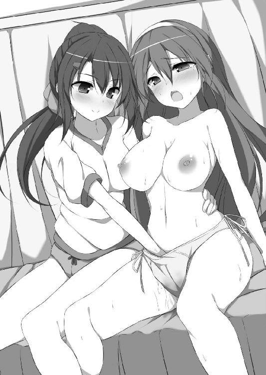
「ふぁぁぁ！ すご......。な、何これ夏希ちゃん、なにこれ、すごい......あぁぁぁう!!」
自分の指で茉友が感じている。でも、声が大きくなるのが気がかりだった。今の彼女に抑えろというのは無理。
「茉友、これ噛んで」
脱ぎ捨てた彼女のＴシャツを口に咥えさせた。思考力が落ちている茉友は素直に従う。悲鳴と喘ぎがくぐもって、これなら外に漏れる心配はない。夏希は秘裂を撫でながら身体を屈めて、プリンのように揺れる乳房にかぶりついた。
「むふーっ!!」
探り当てた膣口を撫で、同時に乳首を舌で転がす。細い腰が跳ね上がる。ガクガクと不規則に、何度も大きくしゃくり上げる。
「茉友......約束通り、イカせてあげる......」
乳首を舐めながら囁きかけ、そしてとどめを刺すように激しく指を動かした。陰唇を掻き分け、クリトリスに辿り着く。ぷっくり膨らんだ淫核を、転がすように撫で回す。
「ひっ、あッ!? にゃにこれ、電気......身体、ビリビリ......ひぃぃぃ!!」
初めての刺激に茉友の身体は耐えられない。Ｔシャツを口から離し、たちまち快感の頂点へと駆け昇る。
「イッて茉友！ 思いっきり！」
「ひ......ひく、いく......イク......！」
夏希に導かれるまま絶頂を口走る茉友。先走る言葉に身体が追いつく。
「イクイク、おかしくなりゅ、ひぃぃぃくッ......イクぅぅぅぅッ!!」
初めてとは思えないほど、茉友の身体が激しく仰け反った。同時に彼女の太腿に股間を押しつけ、夏希も軽く達してしまう。
「茉友......茉友、まゆぅぅ！」「な、なつ......夏希ちゃあぁぁぁん！」
ふたりはグッと抱き締め合い、そして激しく唇を求め合った。まだ茉友の身体の痙攣が収まらない。交わす唇も舌も、うまく重ねることができない。
「は......は......はぁ......。はあぁぁぁ......」
やっと落ち着きを取り戻したのは、それから数分経ってから。その間に、ふたりの唇は唾液でベトベト。それを互いに舐め合って、快感の余韻に浸る。
そんな楽しみに耽っていたら。
「彩守さん、具合はどう？」
ガラリと保健室の扉が開いて、体育教諭が入ってきた。その時になって、鍵を掛けてなかったのを思い出す。慌ててふたりで布団を被る。具合の悪い茉友は半裸でも言い訳ができるけど、夏希はそうはいかない。
「大丈夫そうね。......千羽さんは？」
「え？ あー......さっきまで看ていてくれたんですけど......トイレかな？」
「仕方ないわねぇ。面倒見がいいのは結構だけど、授業をサボって......」
茉友の機転で、何とかごまかせたみたいだ。夏希は布団の中で安堵の溜め息を吐き、でも反省するより早く「次はもっと安全な場所でしよう」なんて企んでいた。
一般教室棟の屋上は、お弁当タイムの人気スポット。あちらは見晴らしがよくて、都会の街並みや海が一望できる。対して、音楽室や美術室のある特別教室棟側の眺めは、普通の住宅街。面白みに欠けるとはいえ、誰ひとり来ないほど、人出には極端な差があった。
でもふたりには関係ない。だって、見るのは好きな人の顔だけなのだから。
「はい、夏希ちゃん。あーん」
「うん。あーん......」
茉友がお弁当箱を膝に乗せ、スプーンでご飯を差し出す。少しためらってから、夏希はそれを頬張った。一般教室棟の屋上からは死角になる位置で、ふたりは毎日、お弁当を食べさせ合っていた。正確には、夏希が食べさせてもらっていた。普通なら恥ずかしくてできない行為も、人目のなさが大胆にさせてくれる。
もちろん夏希も最初は拒否した。でもその晩、どれだけ後悔したことか。翌日も茉友が懲りずに再チャレンジしてくれた時は、迷うことなく「あーん」に応じた。すごく恥ずかしかったけど、それを上回る嬉しさと高揚感は忘れられない。
そしてそれは、自然とふたりの新しい習慣になった。
「こうして好きな人と並んでお弁当食べるの、夢だったの」
今日も、ご飯を最後のひと口まで与えた茉友が、満足そうに微笑んだ。しかし、何気なく彼女が漏らしたその言葉は、せっかく楽しく食事を終えようとしていた夏希の心中に、穏やかでない波を掻き立てた。
「......その好きな人って......どんな相手を想定していたの？」
あえて突っ込むべきではないかもと思いながら、それでも気になりすぎて聞かずにはいられない。だって、普通に考えれば、それは絶対に「女の子」であるはずがないから。
けれど彼女は、夏希の肩に頭を乗せ、当然のように言いきった。
「どんなって......夏希ちゃんに決まってるじゃない」
「え？ ......えっ？ いやだって......」
意外な答えに焦る夏希に、茉友がキョトンとした顔になる。けれど、何を考えていたのかすぐに察したみたいだ。意地悪そうに細めた眼で、じっと顔を覗き込んでくる。
「あれー。夏希ちゃん、焼き餅？ 誰のことを言ってると思ったの？」
「そ！ そんなんじゃ......なくも、ないけど......。だって、そんな言い方したら......」
拗ねて唇を尖らせたら、彼女は身体を密着させるように腕を絡めてきた。
「ごめんね。誤解させるつもりじゃなかったの」
寄り添った身体が、屋上を抜ける風を遮って、茉友の声が籠もって聞こえる。秘密めいた響きと彼女のぬくもりが、夏希にヘソを曲げる隙を与えない。
「......で、でもさ。それなら......その夢って、いつからのよ」
「んー、そうだなぁ......。わたしが、夏希ちゃんのカノジョになった時......かな？」
はっきりカノジョと言われ、息を飲む。今まで、そんな言い回しは何となく避けていたから。女の子同士で付き合うことに、どこかで負い目があったせいかもしれない。だから茉友からそんな言葉が迷いなく出て、嬉しいのと同時に軽く驚かずにいられない。
でも、それはそれとして。
「ちょっと待ってよ。そんな最近の話？ だったら、頼まれたらいつだって......」
「あーんするの、嫌がったくせに」
「......あぅ」
最初に拒否したのを、そんなに根に持っていたなんて。夏希だって後悔したのだから、いい加減に許して欲しい。
「冗談。怒ってないよ。......じゃあ、びっくりさせちゃったお詫びに、今日は特別」
茉友はメインのお弁当箱を脇に置き、もうひとつを手に取った。そちらにはデザートが入っている。いつもなら「あーん」の続きが行われるところ。でも、今日は違った。真っ赤に熟したサクランボから種を取り出すと、夏希ではなく、自分の口に放り込んでしまった。見せつけるだけなんて彼女らしくないなと、気を抜いて見ていたら。
「──ん!?」
不意打ちのように口づけてきた。催促するように、彼女の舌が唇をノックしてくる。要求通り口を開いたら、ぬるりとした感触が口腔内に侵入してきた。慣れ親しんだ舌の感触だけでなく、ぷるんと弾力のある何かが転がり込む。
「ま......茉友、これって............あむ......っ!?」
さっき彼女が含んだサクランボ。それが、絡み合う二枚の舌の間でころころと転がる。想定外の攻撃に、夏希はうまく対処できない。
「ん......ぱっ......。あふ、ぷぁ......」
ぷりぷりの果実と、滑る舌。二種類の異なる感触が、夏希の口腔を掻き回した。溜まった唾液が攪拌されて、ねっとりと糸を引きながら顎から落ちる。普段とは違う舌遊びに、夏希は背筋が痺れるほど翻弄された。
「あ、ぷふぁ......あ、ンッ！」
やがて、潰れたサクランボから果汁が溢れ出した。口の中いっぱいに甘酸っぱい味と匂いが広がっていく。
「あふ......茉友......。これ、美味し......ん、ちゅ、ちゅぱ、じゅるっ」
「わたしも......な、夏希ちゃん......ん、ちゅぅ......ちゅる、ちゅるるっ」
夏希も茉友も、瞳がとろんと蕩けてきた。もう、横並びでのキスでは姿勢が苦しい。ふたりは膝立ちになって互いの肩に手を置き、くねくねと顔を傾けて唇を吸い合った。果汁と唾液が混じってできた果実酒を、競うように啜り合う。
「ちゅぱ、じゅぱっ。ちゅ、じゅるるっ」
「ふぁぁ......。夏希ちゃん、そんなやらしい音させたら......ん、ンッ、ちゅ、ちゅるっ」
恥じらいを残しながらも、茉友は夏希の髪を掻き乱し、唇を押しつけた。ぴったり重なった胸が、相手の乳房を押し潰す。身悶えするたび、硬くなった乳首から快感が生まれて頭の中を痺れさせる。
「な......夏希ちゃん......。わたし、あの......わたし......！」
茉友の瞳が、切実な思いを訴える。最後まで聞かなくても、モジモジとくねらせる腰で何を欲しがっているのか丸わかり。それに、脚の間が疼いているのは、自分も同じ。夏希は薄く微笑んで、肩に置いていた手を、茉友の身体に沿って下に向かわせた。でもすぐには触ってあげない。途中、ブレザーの内側に潜り込み、不意打ちで脇腹を突く。
「ひゃン！」
可愛い悲鳴と共に、茉友の身体がビクンと跳ねる。両腕で夏希の肩にしがみつく。その間も彼女はキスをやめない。むしろ激しく舌と舌を絡ませ合う。
「夏希ちゃ......あふ、んくっ、ちゅぱちゅぱ、じゅるっ」
「ンふぁ！ ま......茉友......。く、う、きゅぅン......」
サクランボ色に染まった唾液が襟に落ちるけど、気にする余裕なんてない。キスの快感に喘ぎながら、夏希は茉友の太腿まで手を伸ばした。小刻みに震える内腿をくすぐりながら、その指先を、スカートの内側へと潜り込ませる。
「んむっ、くふぅぅぅん！」
キスで唇を塞いでいなければ、嬌声が学園中に響き渡っていたかもしれない。下着の中心をひと撫でしただけで、まるで達したように茉友の身体が硬直した。内腿はガクガク震え、今にも倒れてしまいそう。必死に夏希に抱きついて自分を支える。
「茉友、しっかり......。これからだよ？」
彼女は小さく頷いた。けれど呼吸は荒いし、身体の震えも止まらない。潤んだ瞳が早くと急かす。無意識になのだろうけど、腰を前後に揺らして、下着の底を指に擦りつけてくる。その卑猥に波打つ腰つきは、この前まで性に疎かった少女とは思えない。
夏希は、ゴクリと唾を飲み込んだ。最初はパンツ越しで、なんて思っていたのに、もう我慢できない。気ぜわしく下着の底の布地を掻き分けて、柔亀裂に指を埋め込んだ。スカートの中とはいえ、屋外で性器を晒し、緊張で茉友の身体が一瞬強張る。それでも溝に沿って指の腹を動かすと、彼女の腰が、リズムを取るように前後に揺れ始める。
「ふぁぁあ！ な、夏希ちゃん......そこ、そんな......あ、あぅ、ンあぅぅぅっ！」
「まゆ......茉友ぅ！」
夏希も昂った。陰唇はとろとろに蕩け、熱い蜜を吐きながら指に絡みついてくる。
「茉友のここ......熱くて、ぬるぬる......。き、気持ちいい......」
「やぁ......。夏希ちゃん、そんなこと言っちゃ......やだ。は、恥ずかしいよぉ......」
鼻を鳴らして、茉友が肩に顔を埋める。感じているのは夏希も同じ。まるで指先が性感帯になったように、快感が全身に駆け巡る。じっとしていられずに、身体をくねらせ制服の胸と胸とを捏ね回す。でも、そんなものでは物足りない。彼女の腰に回していた手を、自分の股間へ突っ込んだ。そして、驚きに目を見張る。
「はっ!? あ、あぁぁぁ......！」
夏希のそこは、茉友と同じか、それ以上の淫蜜で、信じられないほどぬかるんでいた。指先でなぞるだけで堪らない快感に身体を貫かれ、茉友への愛撫が止まってしまう。
「ふ......あふ、ふぁ、あ......ぐ......」
「な、夏希ちゃん......どうしたの？」
身体を震わせるばかりの夏希に首を傾げ、茉友が股間に手を伸ばしてきた。
「あ、茉友！ 触っちゃダメ......んッ、あっ。駄目だって......くぅぅん......」
前は自分から濡れたところを見せたけど、あれは茉友を勇気づけるためで、触られるのは別問題。でも、脚を閉じる余裕さえなく、下着の中への侵入を許してしまった。
「すごい......。指が全部、ぬるぬるに沈んじゃいそう......。ね、ねぇ夏希ちゃん......。わたしのも、こんなに......？」
「えっと......それは......」
感嘆と驚嘆と、そして欲情に濡れた瞳で、茉友が顔を覗き込んでくる。こんなに彼女が積極的になるなんて思っていなかった夏希は、戸惑いから立ち直れず言葉が出ない。
「ねえってば。夏希ちゃん」
「ひぁっ!? ま......茉友っ、そこダメ！ 指、動かしちゃ......あん、あぁぁっ！」
返事を催促するように、鉤爪状に曲げられた指先が夏希の恥裂を引っ掻き始めた。図らずもそれが膣口を捉え、入り口付近をなぞるように撫で回される。しかも、責め方なんて知らないはずの彼女の触り方は、絶妙だった。気持ちいいけど、昂りきった身体には物足りない、もっと強い刺激が欲しくなる焦らし方で夏希を狂わせる。
「あぅ、ンぁぁん。お......お願い茉友......。もっと......もっと強く......！ そ、そんな触り方されたら、あたし......ダメ......ダメに......なっちゃう！」
そんな生殺しのような刺激に耐えられるはずがない。夏希は腰をくねらせて愛撫をねだった。中断していた茉友への愛撫も再開し、ぐしょ濡れの淫裂を掻き回す。膣口を撫で、陰唇を震わせ、淫核を擦り上げる。自分がして欲しいように、せわしなく指を動かす。茉友も夏希をまね、愛液まみれの淫唇をまさぐる。
「ま......ゆぅ！ 茉友......茉友っ！ あ、そう......それ......気持ちいい......！」
「な......ッ、夏希ちゃん......こ、こう？ あん、くぅン、ふぁぁんっ！」
ぐちゅぐちゅと、ふたつの秘部から卑猥な音がする。自分の身体が奏でる水音が羞恥に拍車を掛ける。そこから逃れようとして愛撫に没頭する。淫靡で魅惑的な循環に嵌って抜け出せない。ふたりはもう一方の手を相手の背中に回し、無我夢中で掻き抱いた。
「な、夏希ちゃん......音、やらしい......。いや......やぁぁん。それ、恥ずかしよぉ」
甘えるように、茉友が頬を擦りつけてくる。すべすべの肌が気持ちいい。身を捩って喘いだら、唇と唇が触れた。おのずと濃厚なキスが始まる。サクランボの残り香に酔いながら、伸ばした舌を絡め合う。
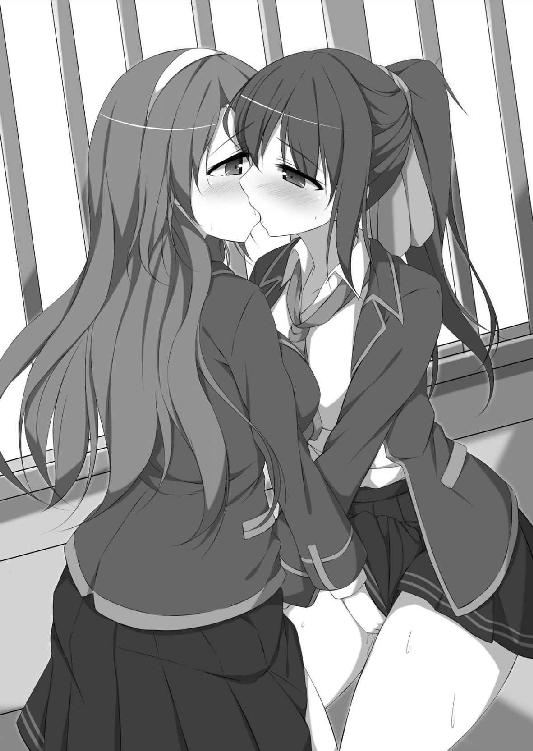
「じゅぱ、じゅるっ、ちゅるるる、ちゅるっ」
唾液を啜る音と、愛液を攪拌する音が頭の中で幾重にも響き、思考が鈍る。ここがどこなのかも忘れ、快感を貪ることしか考えられない。
「茉友、好き......はぁぁぁ......好きぃ......」
「わたしも、夏希ちゃんが......あ、あっ......夏希ちゃんが......好きッ、あぁぁあ!!」
互いの切迫した吐息が口腔に流れ込んで、身体が一気に昂った。相手を快感の頂点に導こうと、同時にスパートをかける。愛撫の動きが激しくなって、まるで嬲るように中指と薬指で陰唇を震わせる。
「あぶ、んぱっ、うぷ、あふぁ......！」
溺れるような息遣いで唾液を貪った。触れ合う舌先から媚電流が生まれ、快感で下半身が蕩ける。性器を嬲る指が増えて、頭の中を快感の靄で覆い尽くす。
「ンあぁっ！ すごい......茉友すごい！ あたっ......あたし......あたし......ッ!!」
「夏希ちゃん、激し......いッ！ そんなにしたら......あぁぁダメ、ダメぇぇぇ!!」
身体が震えて姿勢を維持できない。相手にしがみついていないと、膝立ちさえしていられない。そのくせ全身が淫熱に浮かされて、どこかに飛んでいきそうだ。
「いく......いきそう......。あたし......茉友、あたし......！」
泣きそうな声で訴える。茉友も身体を揺らして切なげに喘ぐ。
「わたし......も、イッちゃう......身体、どこかに......飛んでいっちゃう......！」
覚えたばかりの絶頂は、早くも彼女を虜にしていた。端正な眉を歪ませながら、その瞬間への期待に唇が笑みを浮かべる。清純と淫靡が同居した彼女の妖しい表情に、夏希の中で熱い何かが爆発する。
「あぁぁぁイクッ、いくいくッ、飛んじゃう、い......ッくぅぅぅぅ!!」
強張った指が茉友の膣口に突き刺さった。しかし蜜で滑った縁から弾かれた指先が、淫核を思いきり弾き飛ばす。
「ヒッ、あぁぁぁ！ そこ、そこ痺れっ......あふ、あうっ、ふぁあぁぁっ!!」
茉友の背中が仰け反った。まるで感電したように、全身を痙攣させる。夏希は自分も倒れそうになるのを必死に堪え、彼女の身体を抱き寄せる。
「ま......ゆぅ......。まゆ、茉友......ん、んふ、ふぁ......あふっ」
「夏希ちゃん......はふ、ふはっ、あふ......ン、むぅぅぅ......」
舌先同士が触れただけで激しい快感に襲われる。ふたりは全身を引き攣らせながら、飽きることなく唇を求め合った。
キスに夢中になりすぎて、危うく予鈴を聞き逃すところだった。広げっぱなしになっていたお弁当箱を大急ぎで回収し、屋上を後にする。
（うぅ......パンツが......）
夏希は、ちょっとだけ顔を歪ませた。まるでお漏らしでもしたように、下着がグッショリ。いくら気持ちいいからといって、ここまで濡れるのが信じられない。最近はご無沙汰だけど、オナニーでもここまでになったことはないと思う。
並んで階段を降りる茉友の横顔を窺うと、彼女はいたって涼しい顔。あそこは同じような状態のはずなのに、どうして平気でいられるんだろう。
「ね、ね、茉友。......大丈夫？」
「なにが？」
普通に聞き返されて、逆に困る。学園内で話せる内容じゃない。ましてや、昼休みの終了間際、人が溢れる廊下なんかでは。
「あー、うん。何でもない。茉友が平気なら別にいいや」
つくづく、人には言えない秘密を抱えてしまったものだと思う。
（それにしても茉友は冷静だなー）
さすが、大人の世界で仕事をしているだけはある。下着ごときで動揺しているのが馬鹿みたいだ。ただ、こんな時は、どうしても彼女との差を感じてしまう。自分の子供っぽさを痛感させられる。
会話が途切れたまま、一般教室棟に戻る渡り廊下を過ぎる。角を曲がったところで、ばったりと恵美に会った。
「あー、夏希いたー。もう、どこ行ってたのよ。捜してたんだから。次、音楽室だから早くしないと遅れるよ」
「え、そうだっけ。やばい。あっと......じゃあ茉......彩守さん、またね」
「うん、千羽さん」
急いで教室に戻る夏希に、茉友が小さく手を振る。その顔が、どこか寂しそうに見えたのは、気のせいだろうか。
（ちょっとの間でも、あたしとお別れするのが辛いとか？）
なんて、おめでたい妄想をしてみるけれど、多分、見当違い。いつもなら、一緒にお昼をした後は、ニコニコ嬉しそうに笑って見送ってくれる。
首を傾げながら教室に戻り、次の授業の準備をしていたら、恵美が不思議そうな顔で尋ねてきた。
「......夏希、まだあの娘と付き合ってんの？」
ドキリとした。付き合っている、というワードに過剰反応しそうになったけど、彼女がふたりの関係を知るはずがない。普通の友達の意味だと自分に言い聞かせ、平静を装う。
「うん。ファッション業界のことを色々と聞いてたら、普通に仲良くなれたよ。諦めるなって言ってくれた恵美のおかげだよー」
言い訳を意識しすぎて、若干、棒読み。けれど嘘は吐いていない。茉友と仲良くなった経緯も、恵美のおかげであることも。
しかし彼女は嬉しそうな顔をせず、むしろ少し表情を曇らせた。
「まぁ......ＭＡＹＵと仲良くするだけなら、悪いことじゃないけどさ......ちょっと、べったりしすぎてない？」
「どういうこと？」
まさか、気づかれているんだろうか。女の子同士で付き合っていることに。思わず動揺が顔に出る。でも恵美が言っているのは、そういうことではなかった。
「だから、あんたが一緒にいすぎると、あの娘、ますますクラスで居場所がなくなるんじゃないかってこと」
真剣な恵美の顔に、言葉を詰まらせる。そんなこと、考えもしなかった。茉友がクラスの娘たちとうまくいけばいいと思っていた。でも──それだけ。彼女に友達が増えるようなことを、夏希は何もしなかった。茉友と一緒にいることしか、考えていなかった。
「あたしの存在が、茉......彩守さんのためになってないってこと？」
「だから、そこまでは言ってないってば。お付き合いの仕方を、少し考え直しなさいってこと。ＭＡＹＵがクラスで孤立するのは、夏希だって望んでないでしょ」
「それは......そうだけど......」
友達だから、耳の痛い忠告をしてくれている。それは理解している。頭では分かっているのに、気持ちが反発している。まるで、茉友といるのは悪いことだと言われているみたいに聞こえてしまう。
（そうじゃない。恵美は、そんなこと言ってないってば）
何度も自分に言い聞かせるけど、気持ちが、心が、彼女の言葉を拒もうとする。
一分でも一秒でも長く、茉友の隣にいたい。それは夏希の我侭。自覚があるだけに、逆に後ろめたさを認めたくなくて、友達の忠告に耳を塞いでしまう。
（やっぱり、あたしって子供だなぁ......）
こんな自分に、茉友の隣にいる資格があるんだろうか。一緒にいると幸せでいられるけれど、もしかしたら、その分、彼女の幸せを奪っているのかもしれない。
日曜日は、前から約束していた通り、茉友とのお出掛け。悩みはひとまず棚に上げた。だって、彼女の仕事でなかなか都合がつかず、久しぶりのデートだったから。大通りから一本入った裏道にあるオープンカフェで、ふたりの前には同じミルクティー。
ただ、両手でカップを持った茉友は、しきりに辺りを気にしていた。幅広のつばの白い帽子を目深に被って、まるで何かから隠れるように背中を丸めている。
「......そんな格好してたら、逆に目立つよ」
「え、ウソ！」
呆れ顔の夏希に指摘され、驚いた茉友の背筋がピンと伸びる。
「茉友のリクエストでこのお店にしたのに、何でそんなにコソコソしてるのよ」
人気モデルだからファンに見つからないように、なんて、思い上がったことを考える娘じゃない。だいたい、本人に有名人という自覚がないのだから。
「どうせ、恥ずかしいって思ってるんでしょ」
「......うん、当たり。前からお洒落なお店だなーって気になっていたんだけど、ひとりで来る勇気がなくて。やっぱり、見られながらっていうのは落ち着かないね」
似合わないことするんじゃなかったと、小さく舌を出して苦笑い。でも夏希は、心の中でそれに反論していた。人気ファッションモデルのＭＡＹＵがお洒落なお店に似合わなかったら、一般人の自分なんて、もっと場違い。
その言葉を飲み込む。仕事に関する話はとっくに解禁になっているのに、最初に彼女の機嫌を損ねたのがトラウマになっているのか、無意識にそれ関連の単語を避けてしまう。
「お客の顔なんて、通行人はいちいち見てないと思うよ。茉友は気にしすぎ」
自分のことを棚に上げて、さも慣れた風にうそぶいてみる。もちろん夏希だってオープンカフェなんて初めて。通行人の視線を怖がっているのは、むしろ自分の方だと思う。
ただ、不釣り合いかどうか気になっているのは、お店のことなんかじゃない。
（あたしは、茉友に似合っている？ この娘の隣にいて、大丈夫？）
できることなら、みんなに聞いて回りたいくらい。そんなわけにはいかないから、少し迷った挙句、遠回しに本人に尋ねてみる。
「ねえ茉友」
「なーにー。ケーキでも頼む？」
ちょうどメニューを眺めていた茉友が、可愛いケーキの写真を指差した。心惹かれそうになったけど、とりあえずそれは後にする。
「そうじゃなくて......。茉友、あたしといて、楽しい？」
「どうしたの、急に」
確かに急だ。遠回しにと思った割には直接的で、そのくせ、茉友から見たら夏希が何を知りたいのか分かりづらい質問になってしまった。
「あ、いや。ほら......茉友って......その......忙しいじゃない。放課後はほとんどお仕事だし。なのに、いつもあたしに付き合ってくれて、自分の時間が取れなくなってるんじゃないかって......最近ね、ふとね、そんなことを思ったりしたもんだから」
言い訳を考えながら説明する。その間、茉友はじっと夏希の眼を見ている。隠しごとをしているわけでもないのに、後ろめたい気分になって、つい視線を外してしまう。
「......誰かに、何か言われた？」
「ど......どうして？ そんなこと、ないよ」
いきなり図星を指された。明らかな動揺はＹＥＳと同義。答えを得た茉友は、不機嫌そうに唇を尖らせた。夏希が受けた忠告の内容に、おおよその見当がついたんだろう。
内容の当たり外れは問題じゃない。ふたりの関係に第三者から干渉を受けた、そのこと自体が、彼女の機嫌を損ねている。
「逆に聞くけど、夏希ちゃんはどう？ わたしとの時間を作るの、大変？」
「そんなことないよ！」
当たり前だ。もし許されるなら、ずっと一緒にいたいのだから。それに夏希はただの学生。仕事をしている彼女より大変なんてことが、あるはずない。
夏希の即答に、茉友は嬉しそうに微笑んで、でも、申し訳なさそうに顔を伏せた。
「......実はね、わたしも同じこと考えてたの。夏希ちゃんには、わたしと違って他のお友達がいっぱいいるのに......その人たちとの時間を、奪っているんじゃないかって」
憂いを含んだ表情を、最近、どこかで見た。そしてすぐに思い出す。この前の、屋上でエッチなことをしたお昼休み後の別れ際。恵美といる夏希を見ていた彼女は、とても寂しそうだった。あの時、そんなことを考えていたなんて。
夏希は、衝動的に身を乗り出した。そして、呆気に取られる茉友の頬に手を当てる。
「ね、これからどこに行く？ どこに行きたい？」
唐突な問いに、茉友は瞳をパチクリ瞬かせた。話が繋がっていないのだから当たり前。でも構わない。もう一度同じことを尋ね、返事を強要する。
「えーっと......。お......お洋服を見に......？」
戸惑いながら茉友が答える。夏希はニッコリ微笑んで、彼女の手を取り立ち上がった。
「あたしもそれがいい！ 今日は、一日中付き合ってもらうから！」
すると、茉友の顔も急にぱっと明るくなった。
「うん！ わたしも、夏希ちゃんを離さないから」
誰が何を言おうと関係ない。今はただ、彼女に悲しい思いをさせたくない。
「これなんて、夏希ちゃんに似合うんじゃないかな」
巨大アウトレットモールの下着売り場で、夏希は、茉友にフリフリのブラをあてがわれていた。女の子同士のデートの利点は、こんな場所でも不審がられないこと。
「えー。でも、可愛すぎない？ どっちかっていうと、茉友向きだよ」
「夏希ちゃんの、シンプルなのばっかりなんだもん。背丈あるし、スタイルもいいから、確かにそういうのが似合うけど、こういう可愛いの着けてるとこも見たいんだもん」
「......それって結局、茉友の願望じゃない」
ばれちゃったかと、茉友がコロコロ笑う。夏希が見たいのは、この娘のこんな表情。ふたりの時間を誰にも邪魔されたくない。もちろん、そんなのは問題から目を逸らしているだけ。刹那的すぎると自分でも分かっているけど、どうしても欲求を抑えられない。幸せばかりを追い求めてはいけないと思っても、抗えない。
「ね、次はあっちを見てみようよ」
茉友に手を引っ張られる。少なくとも今は、面倒なことを考えるのをやめた。
ファッション関係のショップは、どこも夏を先取りした服ばかり。マネキンが着ているものも露出が多めで、これからの季節への期待を高める。
「これ着てみて」
あれこれ目移りしている間に、茉友は夏希用の服を数着、手にしていた。薄いブルーのワンピースや、袖なしチュニック。どれも自分では選びそうにもない、どちらかといえば茉友好みの、ふわふわフリルの可愛い系のものばかり。
現に、今日の茉友も花柄のワンピース。その上に空色のジャケットを羽織って爽やかな印象。でも夏希だって、気合を入れてお洒落してきた。ストライプのシャツにデニムのジャケット。ミニのフレアスカートには細めの革ベルト。可愛い系の茉友の隣にいて似合いそうな、格好よさを意識してみた。
なのに彼女は、そんな夏希の努力をよそに、さらに服を物色する。
「格好いいとかスポーティとか、男の子っぽいマニッシュって、確かに夏希ちゃんに似合うと思うけど、あえて、そういうのは外してみたの。あ、こんなのもあるよ？」
そう言って茉友が掲げたのは、胸だけを隠す真っ赤なチューブトップと、デニムのショートパンツというヘソ出しルック。しかもデニムの方は、下手をすると下着が見えそうなＶライン。可愛い系からセクシー系へと振れ幅がありすぎだ。
「あのさ、もうちょっとこう......」
手加減を求める夏希を、彼女はいそいそと店舗の奥へと連行した。そこは、売り場とは壁で仕切られた試着室スペース。カーテンではなく、しっかりとした木の扉の個室が、五つばかり並んでいる。茉友は売り場の店員に「お借りしまーす」と声を掛けると、そのうちの一番奥の扉を開け、夏希に入るよう促した。
「さあ、どうぞ」
珍しく強引な彼女に戸惑いながら、靴を脱ぐ。彼女の選んだ服が自分に似合うとは思わないけど、試着くらいなら文句はない。
でも扉が閉まった後で、夏希はおかしなことに気がついた。
「............何で茉友までいるの？」
「お着替えを手伝おうと思って」
こともなげに答える茉友に絶句する。いくら細身の女の子でも、密室にふたりは狭すぎる。それに大量の服を持ち込んでいるので、余計に足の踏み場もない。
「いくら女の子同士でも、ふたりで試着室にいたら店員さんに変に思われちゃうって」
「変に思われないために、店員さんに声を掛けたんだよ」
どこまでも周到な彼女に、二の句が継げない。
「ほら早く着替えて。いつまでも試着室を独占してたら、他のお客さんに迷惑だよ？」
「う、うん......」
反論をことごとく潰されて、自然と彼女に従う流れに。ジャケットを脱ぎ、ハンガーに掛ける。しかし、シャツの袖ボタンを外したところで動きが止まる。
「そ......そんなに見られてたら、脱ぎにくいんだけど......」
今さら下着姿を見せることに抵抗はないけれど、瞬きもせずに凝視されたら、さすがにやりにくい。襟元のボタンを触るだけでモジモジする仕種さえ、黙って見ている。
そのうち、身体が不思議な反応を示し始めた。肌を、何かが這い回っている。まるで、彼女の真剣な視線に全身を撫でられているみたいに。多分、鳥肌が立っているのだろうけど、そうなる理由が分からない。
「はぁ......」
無意識に熱い吐息を吐いてしまい、指先で口を覆う。扉の向こうは、多くの買い物客や店員さんがいる休日のお店。変な声は要注意。気を取り直し、慌てて服を脱ぎ始める。
「......んっ」
スカートを床に落とすと、緊張で声が漏れた。茉友は、一着のワンピースを腕に掛けたまま、身じろぎひとつせず、下着姿の夏希を見ている。万が一を考えて可愛い新品を着けてきたけど、こうもマジマジと観察されると、自信がなくなってくる。
「ね、ねぇ茉友。服は？」
すると、止まっていた時間が動き出したかのように、彼女がハッとした顔をした。どれだけ集中していたんだと、ちょっと呆れる。
「わあ、可愛い！」
まずはこれと渡された、桜色のワンピースに袖を通すと、茉友は手を合わせて喜んだ。満面の笑みを見せるけど、自分では何となく居心地が悪い。
「う～ん、でも......。このひらひらした裾が......」
「夏希ちゃんだって、フレアのミニスカート穿くことあるのに。何が違和感？」
「何だろ、なんて言うか......この、胸元のフリルとか、腰のリボンとか......」
そういったパーツだけなら、夏希も好んで身に着けたかもしれない。でもトータルコーディネートとして、全身可愛く仕上がってしまうことに、違和感を覚えるのだと思う。茉友のようにお淑やかに振る舞えない自分には、きっと、こんな可愛い服は似合わない。
「やっぱり、違わない？ あたしらしくないっていうか......」
「そんなことないよ。ほら鏡を見て。可愛いでしょ？」
「う、うん......」
確かに、悪くはない。けれど長年の先入観は拭いがたいものがあって、彼女のようには無邪気に浮かれられない。
「う～。茉友ぅ、やっぱ無理だよぉ～」
恥ずかしさに耐えきれず、身を捩る。自分の姿を直視できない。だから、鏡の中で彼女の目が細くなった意味を、考えもしなかった。
「そう？ 気に入らない？ それじゃあねぇ......」
彼女が次の服を選び始めたので、桜色ワンピースを脱ぐ。でも手離すとなると、何だか急に惜しくなった。夏希だって女の子だし、自分に合わないと思うだけで、フリルやリボンに心惹かれないわけがない。
「ねえ茉友。や......やっぱりさ、曲がりなりにもプロを目指そうっていうなら、自分では選ばないコーデにチャレンジする必要もあるのかな............って、ひゃあぅ!?」
脱いだワンピースを眺めていたら、いきなり背筋を逆撫でされた。堪らず奇声を上げてしまう。もちろん、犯人はひとりしかいない。
「ちょ、茉友！ 何するのよっ。自分で場所柄をわきまえろって言ったくせ......に......ふぁ！ あぅん、ン、ンむぅッ！」
今度は下着越しにお尻の谷間を撫で上げられた。慌てて両手で口を塞いで悲鳴を閉じ込めたけど、それをいいことに、背中の真ん中を指先がくすぐってくる。
「夏希ちゃんたら、静かにしないとダメでしょ？」
「だ、だからそれは......んふッ!?」
耳に息を吹きかけられて、背中がゾクゾク震えてしまう。すると茉友は背後から抱きついて、ブラの胸を揉み始めた。
「な......！ こ、こんなところで何を......ン、ん、むっ！」
両手で必死に喘ぎを封じる。そうなれば茉友の手を遮るものはなくなり、文字通りのフリーハンドで胸を弄ばれてしまう。それにしても、身体が変だ。いくら胸を触られているとはいえ、下着越し。彼女の揉み方だって単調で、力もそれほど強くない。なのに、声が我慢できない。油断すると、大声で悲鳴を上げてしまいそうになる。
（あたし......どうしちゃったの？ 肌、すっごく敏感になってる......。茉友に触られてるとこ、全部......ピリピリして......くッ......ふぅン！）
茉友の薄い爪が、ブラに沿って乳房の下をなぞっていく。たったそれだけで、微電流のような快感が頭の中を掻き乱す。膝に力が入らない。たいして撫でられてもいないのに、このままでは立っていられなくなってしまう。
「はぁ......はぁ......あ、うっ......ンッ！ は、あ......はぁ......」
愛撫から逃れるように、夏希は息を切らしながら身体を反転させた。それでも壁に寄り掛かるのが精一杯。今度は正面から抱きつかれ、茉友が胸に顔を埋めてきた。
「ま......茉友......。まさか、最初からこんなことするつもりで......。それとも......保健室での仕返しのつもり？」
学園内で茉友にエッチなことをしたのは夏希だけど、あれだって、仕掛けてきたのは彼女の方。逆襲されるいわれはないはず。喘ぎの中で夏希が問い詰めると、彼女はふるふると首を振った。
「どっちも違う......。夏希ちゃんが、下着で恥ずかしそうにしてるのを見ていたら......」
気まずそうに顔を伏せる。もしかして、本当にいきなりムラムラしてしまったというんだろうか。それはそれで嬉しいけれど、こんな人の多い場所でなんて無謀すぎる。見つかった時の危険度は、保健室なんかの比じゃない。
なのに、甘えた上目遣いで見られただけで、咎める気持ちはどこかに溶けてしまった。彼女の手が、ゆっくりとブラをたくし上げるのも止められない。カップがずれて、乳房がプリンのように飛び出す。その揺れが収まる前に、茉友が先端に食いついた。
「あ、ぅ......！」
必死に悲鳴を噛み殺す。仰け反った頭が壁に当たって音を立てる。隣に人がいたらどうしようと思ったけれど、そんな心配をする余裕なんてない。まるで赤ちゃんのようにおっぱいを吸われ、理性が快感に負けてしまう。自制心が少しずつ削り取られる。
「茉友、お願い優しく......。でないと......」
やめさせるという選択肢は消え、とにかく声や物音を立てない方向で努力する。でもそれさえ、達成できるか怪しくなっていった。もう一方の乳房が鷲掴みにされる。掌で転がされ、揉み上げられる。
「だから......そんな強くしたらダメ......ダメだってば......！」
夏希の懇願なんて聞こえないように、茉友の手が下に降りていった。素肌の脇腹をくすぐられ、引き攣ったように腰がカクカクと前後に動く。
それを見ていた茉友の顔に、淫靡な笑みが浮かんできた。最初は自分の衝動に戸惑っていた感じもあったのに、それはあっという間になりを潜め、意地悪そうに目を細めながら夏希に悪戯を仕掛けてくる。
「わたし、強くなんてしてないよ。軽く触ってるだけなのに......ほら」
「くふっ、ンむ......っ、ふぅぅぅん!!」
彼女の爪が、脇腹をするりと逆撫でした。確かに彼女の言う通り、指は肌の表面をなぞるだけ。それなのに、快感が身体の芯まで響く。
じわりと、脚の間の秘裂から、恥ずかしい蜜が漏れ始めた。その匂いを嗅ぎ取ったみたいに、茉友の指先が股間に向かって走り出した。のんびり屋の彼女には不釣り合いな素早い動きで、夏希の身体の中心に中指を立てる。
「ふッ、ぐッ......んむッ、んっ......きゅぅぅぅッ!!」
股間から頭のてっぺんを、甘美な衝撃が突き抜けた。下着越しとは思えない鮮烈さで、夏希を一気に絶頂まで飛ばす。
「あふ、ふ......く、うン......」
もちろん、直接触られた時ほどではないので、かろうじて声を抑えることができた。でも中途半端な満足は、逆に夏希を苛むことに。より深い快感への欲求が、残り火のように身体の奥をジリジリと炙る。
「茉友......あたし......。もっと欲しい......」
「夏希ちゃん......」
茉友も欲情しているのか、上気した頬が濃い桃色に染まる。半開きの唇から小さな舌先を覗かせながら、潤んだ瞳を寄せてくる。あと一センチで唇が触れ合う。それなのに。
「お客様、ご試着の様子いかがでしょう？」
扉の向こうから、店員が声を掛けてきた。ハッとして身体を離す。自分たちがどれくらいここにいたのか、時間の感覚がない。少なくとも、店員に怪しまれるくらいには、ふたりきりの空間に夢中になっていたということ。
「あの......えっと......」
着替えをするスペースなのだから下着姿でも変じゃないけど、股間の濡れた感覚が罪悪感と焦りを生んで、何も言葉が出て来ない。しかも、茉友が取った行動は、さらに夏希をパニックに陥らせることに。
「あ、はい。大丈夫でーす」
棒立ちになる半裸の夏希を尻目に、彼女は平然と更衣室の扉を開けてしまった。
「あー、びっくりしたぁ！」
茉友の家に戻った途端、彼女は玄関で胸に手を当て大声を上げた。店員に怪しまれたことを言っているのだろうけど。
「びっくりしたのはこっちよ！ 何でこんなことになってるの!?」
夏希も両手を挙げて、茉友に抗議する。その手に握られているのは、左右に二つずつ、ぱんぱんに膨らんだ計四つの袋。茉友も同じものを同じ数だけ持っている。驚いたというか呆れたというか、彼女は、更衣室に持ち込んだ服を、全部買ってしまったのだ。おとなしそうな女子高生が大量買いしたものだから、店員も目を丸くしていた。
「だって、早く何か返事しなくちゃと思って......。変なことになったのは、わたしのせいなんだし......」
なんて大胆なと思ったけれど、焦っていたのは茉友も同じだったみたいだ。責任を感じていた分、むしろ夏希よりも冷静さを失っていたのかもしれない。だったら、あんな場所で始めなければいいのにと喉まで出掛かったけど、やめた。自分の行動を振り返ったら、夏希にそれを言う資格はないし、それに、肩を落とす彼女を責める気になんてならない。
ともかく、まずは落ち着きたい。二階の私室に通してもらった夏希は荷物を放り出し、ふかふかの絨毯が敷かれた床に腹ばいで転がった。
「やっぱり多すぎだよ。いくら何でも買いすぎでしょ」
呆れ顔の夏希に、茉友は平然と笑ってみせる。
「大丈夫。色々な服を着て研究するのも、モデルのお仕事のうちだから。お母さんにも、もっとお洋服に興味を持ちなさいって言われてるくらいだし」
しかし、改めて今日の収穫の物量を眺めていた彼女が、わずかに首を傾げる。
「うーん、でも......確かに夏希ちゃんの言う通り......かなぁ。こんなに一度にお買い物したら、さすがに無駄遣いしすぎだって怒られちゃうかも」
言葉の割には困った顔をしていない。彼女が大丈夫だと言うのなら、大丈夫なんだろう。
「......それにしても、よくこれだけの買い物をするお金、持ってたね」
支払いは茉友が済ませたので、全部でいくらだったのか知らない。すると茉友はベッドに腰を降ろし、聞き捨てならないことを微笑みながら言った。
「カードで払ったの。名義はお母さんだけど、口座の中身はわたしのお給料だし」
「カード!? 茉友、カード持ってるの？ てか、お給料もらってるの!?」
「うん。わたし、お母さんが社長をしている事務所の所属で、そこはお給料制だから」
「はー......大人だなぁ......」
素直に感心したら、茉友の顔が真っ赤になった。
「そんなことは......。ほら、わたし、強制的にお仕事を始めさせられたようなものだって、夏希ちゃんも知ってるでしょ？」
「でもでも、やっぱり大人って感じ。すっごいなー......」
繰り返し感心すると、ますます茉友の顔が茹で上がる。そして何を思ったか、慌てて買い物袋を掻き集め、まとめて夏希に差し出した。
「こ......これ、夏希ちゃんにあげるね！ 最初からそのつもりだったから気にしないで！」
「ええ!? 気にするよ！」
一着ならともかく、いくら友達からでも、こんなにたくさんもらえない。それこそ、夏希が母親に怒られてしまう。
「で、でも......これは夏希ちゃんのために選んだものだし......」
茉友が困っている。けれど、夏希だって困ってしまう。代金を折半すればいいのだろうけど、こう見えて彼女は意外と強情。金額を教えてくれないだろうし、受け取らないだろう。そもそも、夏希の今月のお小遣いで足りるかどうか。
（う～ん......。お洋服も半分こできればいいのに）
腕を組み頭を捻って、ヒントを求めて袋の山や、室内を眺める。
それにしても広い部屋だ。口に出すつもりはないけど、さすがは有名女優の娘と思わずにいられない。夏希の部屋の倍はあるんじゃないだろうか。ベッドなんて、ひとりっ子なのにクイーンサイズ。
ただその割には、ウォークインクローゼットの中身は意外に普通だった。モデルなんだし、さぞや衣装持ちなのかと思ったら、夏希よりもちょっと多いくらいだった。今日買った衣装を加えても、まだスペースには余裕があるはず。お仕事的に、母親からもっと服を買えと言われているのも納得できる。
（そういえば前に、同じ服でも着回しで印象を変えられるよ、なんてアドバイスしてくれたことがあったな）
どうやら彼女は、たくさんの服を所有するより、着回しを楽しみたいタイプみたいだ。
（う～ん、でも......そうだなぁ......。半分こ......着回し............そうだ！）
頭を捻った甲斐があった。夏希にしては、いいアイデアが閃いた。
「あたし、やっぱりこれはもらえない。茉友が持ってて」
「う、うん......」
彼女も、そうだろうと思っていたんだろう。反論せずに唇を尖らせる。
「その代わり、時々貸してくれたら嬉しいな」
「え、貸す？ ............ああ！ うん、そうだね。シェアすればいいんだ」
サイズが違うから、夏希しか着られない服がほとんどで、実際はシェアとはいかないだろうけど、一応は彼女の顔を立てられるはず。すると、問題が解決して晴れ晴れした顔になった茉友が、こちらも何かを思いついたように、パンと両手を鳴らした。
「そうだ。試着の続きしようよ。さっきは途中で終わっちゃったし」
どうして途中になったのかは、あえて問わないことにしよう。ＯＫすると、彼女はさっそくガサガサと袋を開け、中身を部屋中に撒き散らした。
「さあ夏希ちゃん、脱いで！」
「脱いでって......あ、そうか。じゃないと試着はできないもんね」
急にテンションが上がった彼女のスタートダッシュについていけず、一瞬、判断力が遅れてしまった。何にせよ、ここは彼女の家なので、人目を気にする必要はない。苦笑いしながら服に手を掛ける。
「......と、そういえば、今日はお母さんは？」
「泊まりがけで地方ロケなの。今日はお手伝いさんも来ない日だし」
それなら、心置きなく裸になれる。でも、ひとりじゃもったいない。
「そうだ。せっかくだし、茉友も試着してみたら？ シェアするんでしょ」
試しに誘ったら、さすがに自分の家だけあって、彼女も迷うことなく服を脱ぎ出した。そして下着姿のまま、まるでショップ店員のように、夏希に服をあてがってみる。
「お客様、こちらなどいかがでしょう。この色なんて、今年の夏のトレンドですよ」
「そ、そうなんですかー。じゃ、じゃあ......試着してみようかなー」
いきなり始まった即興芝居に、夏希も棒読みで応える。しかし、どこの世界にブラとパンツだけで接客する店員がいるんだろう。それはともかく、試着室に見立てたベッドの上で次々と着替えては、ポーズを取る。
「まあ、素敵！ よくお似合いです！」
何を着ても無条件で褒めてくれるので、夏希も気分が乗ってきた。茉友の渡す服や要求するポーズも、次第にセクシーなものに。あはんうふんと身体をくねらせたり、キャミソール風のシャツからチラリと胸元を覗かせたり。
「お客様、次はこれなどいかがでしょうか」
でも、次に茉友が差し出した服には、さすがにためらいを覚えた。それは、例の真っ赤なチューブトップとホットパンツという、今日一番のセクシー系。この服の要求する体型のハードルはあまりにも高く、残念ながら自分には絶対に無理。瞬時に判断した夏希は、すかさずキャストを入れ替えて、茉友をお客さん役にしてしまう。
「いいえ。これなどは、お客様にこそお似合いですよ」
「えー......これぇ？」
まさか逆襲されるとは思わなかったんだろう。服を選んだはずの当の本人が、芝居を忘れて渋い顔になる。
「あらあらお客様。似合わないと思う服にこそチャレンジするべき。さあ、自分の殻を破るチャンスですよ！」
「夏希ちゃん。それ、ぜったいお店での仕返しでしょ！」
「何のことでしょう。さあ、お客様っ！」
ぐいぐいと強引に勧めると、彼女は「絶対にイヤ」と逃げ出した。
「ちょ、茉友ずるい！ てか、自分が嫌なのをあたしに着せようとしてたの!?」
きゃあきゃあと叫びながら、茉友が部屋中を駆け回る。それを追い掛けて、夏希も部屋をグルグル。部屋の隅に追い詰めたと思ったら。
「あ、夏希ちゃん。パンツのゴム切れてる」
「えっ、ウソっ!?」
焦って視線を下に向けるけど、もちろんそれは茉友の嘘。その一瞬の隙に、脇からするりと逃げられてしまう。でも彼女も慌てていたのか、絨毯で足を滑らせて、床に散らかしていた洋服の山に頭からダイブした。そこへ夏希も飛びつき、上からのし掛かる。
「きゃあン！」
「やーっと捕まえた。観念して、あの服を着なさい！」
彼女は、仰向けで夏希を見上げ、笑顔で首を横に振った。その目つきが変わっている。熱っぽい瞳で、腕を伸ばして首に絡めてくる。
「それよりも......別の方の続き、しよ？」
幼女のように無邪気に微笑み、でも恥ずかしそうに肩を竦めて。そんな風に可愛らしくおねだりされたら、断れるはずがない。
「やっぱり、茉友、ずるい......」
抗議は、首を抱き寄せられて途切れた。床に着いていた腕から力が抜けて、彼女に覆い被さる。ゆっくりと目蓋を閉じる彼女に胸を高鳴らせながら、唇を重ねた。
「ん......ンン、んふ......っ」
触れ合い、微かな吐息を感じると、もう歯止めは利かなかった。くすぐるように唇を舐めて、彼女も舌を出すように促す。
「ん、ふぁ......」
小さく身体を震わせながら、彼女の舌が先端だけ顔を出した。それをパクリと咥え込んで、吸引するように引き摺り出す。表面同士をねっとりと擦り合わせると、ザラザラする感触が気持ちよくて、茉友だけでなく、夏希も痺れるように背中を震わせた。
「ンぁっ......！ あふ、ン......はぁ......ま、ゆ......ぅ！」
喘ぎながら舌を絡める。彼女も、もがくように夏希の背中を抱き寄せる。胸と胸が密着して、ブラを挟んでいるのに、彼女の乳首が硬くなっているのを感じる。身体をくねらせ乳房を捏ねると、声が漏れるのを我慢できない。
「ンあっ。おっぱい気持ちいい......茉友ッ！」
「やん、夏希ちゃん動かないで......。おっぱい擦れて......ふ、あ、あぁぁ......あんッ」
快感に耐えかね、茉友が背中を反らせた。さらに乳房が潰れて刺激が強くなる。動くなと言われても身体が勝手に動いてしまう。
「あぁ茉友......茉友、ま......くふぁっ!?」
もがく茉友の指先が、夏希の背中を逆撫でた。堪らず絨毯に爪を立てる。その間に、ブラのホックが外された。身体の上下を入れ替えて、夏希も彼女のブラを脱がせた。でも、それを放り投げようとした手が、何かに縛られたように自由が利かない。
「あ......あれ？」
抱き合って転がった時に、散らばっていた服が絡みついたみたいだ。解こうとして茉友から目を離した、その一瞬の隙に、唇が塞がれた。
「あは......夏希ちゃん......」
「あんっ、もう......茉友ったら......。ちょっと待って......ン、あ......」
執拗に唇を舐められたら、夏希だって欲しくなってしまう。作業をいったん中止して、キスに応えた。快感で身体を捩らせるたび、脚にも服が絡みついて、ちょっとギリシャ彫刻の女神にでもなった気分。うっとりと眼を閉じて彼女の唇に酔い痴れる。けれど、何だか様子がおかしい。身体の上で、茉友がごそごそ動いている。
「茉友、何して............あ、あれ？ あれぇ!?」
自由が利かない程度だった腕が、ほとんど動かない。例の赤いチューブトップやＴシャツが、手首にぐるぐると無造作に巻きつけられて、完全に自由を奪っている。
「ちょっと茉友、これって......ふ、あ......ふあっ!? はぁぁうあぁぁぁ......」
彼女は問いに答えることなく、胸に吸いついた。それだけなら、いくらでも好きにさせてあげるのにと、快感の中でぼんやり思っていたら、彼女の舌が不規則に移動した。胸からお腹、脇腹へ。そしてまた胸へ戻って、今度はおヘソの周りで円を描く。どこかを目指しているような感じもするけど、やけに迷走している。それが気になって、気持ちいいのに快感に集中できない。
「ン......はぁぁぁ......。ねぇ茉友......。どうせなら、下の方も......」
「うん、下......下、だね......」
愛撫が上半身に集中していたので、何となく下半身の方をリクエストしてみる。すると彼女は曖昧に答え、一応はその通りに、舌を移動し始めた。それでも途中で寄り道して、脇腹を執拗なまでに舐め続ける。
「ン、ん～......ッ、あっ！ そ、それ気持ちいい......そこ、そこもっと......あぁぁ......」
予想とは違っていたけど、これはこれで気持ちいい。くすぐったさと快感の狭間で、声が上擦る。でも、それすら彼女の最終目的地じゃなかった。ふと気がつくと、まるで夏希の様子を窺うような、自信なさげな上目遣いでこちらを見ている。
「茉友......？」
「な、夏希ちゃん......。わたしのこと、変だって......思わないでね......」
「え？ うん......」
意図が分からないまま頷くと、彼女は意を決したように頷いて、夏希に残されていた最後の下着に手を掛けた。そこを触られるのも初めてではないので、何も考えずお尻を上げて脱ぐのを手伝う。するすると、小さな布切れが脚を伝う。その感覚に違和感を覚える。
（......あれ、そういえば......全部裸になったところって......見られたこと、ない？）
考えてみれば、今まではたいてい下着越し。直に秘所を触られた時ですら、スカートで隠されていた。剥き出しの恥裂を直接彼女に晒したことはない。
それに気づいた途端、急激に猛烈な羞恥が襲ってきた。慌てて脚を閉じようとするけれど、すでに茉友の身体が間にあって叶わない。本気で抵抗を始める前に、パンツが足首から抜かれてしまう。
「きゃぁぁ！ ちょ、ちょっと待って茉友！ 見ないで......見ない......で......」
「はぁぁ......」
諦めに似た気持ちが、夏希の声を小さく掻き消す。それとは対照的な熱い息が、股間に吹きかけられた。感じる。彼女が、茉友が、一番恥ずかしい場所をまじまじと凝視している。羞恥で眼を開けられないのに、見られているのがハッキリと分かってしまう。
「あ、動いた......」
彼女が、驚嘆したように呟いた。何が動いたのか分からず、緊張で内腿に力が入る。でも、それが脚の間を強く意識させ、彼女が見たものを察してしまう。しかも、頭の中でそれが言葉になる前に言われてしまった。
「夏希ちゃんのここ......ヒクヒクしてるよ......。ほら、また......」
「や、やぁぁっ！ 何を言って......違っ......やぁぁぁ、茉友のばかぁぁ......！」
茉友の言葉が、呪文のように自分のそこを強く意識させる。ほんの微かの動きなのに、自分の性器が引き攣っているのを感じてしまう。貝肉のように蠢く肉襞から、とろりとした粘液が流れ落ちるビジュアルが頭に浮かび、その通りのむず痒い感触がお尻を伝う。
「やんっ......。ま、茉友ぅ......。あ、あたしのそこ見るために、こんな......？」
縛られた手首を頭の上で左右に振って、涙で霞んだ眼で抗議する。すると、彼女は申し訳なさそうに眉を下げ、それでも身体を倒して夏希のお腹に何度もキスした。
「ううん、違う。ホントは、こんな形でするつもりじゃなかったんだけど......言葉にするのが恥ずかしくて......」
違う？ これ以上に恥ずかしいことなんて、何をするつもりなんだろう。羞恥と疑問で夏希の頭が混乱する中、彼女は脇腹をくすぐりながらお腹へのキスを繰り返した。その位置が徐々に下がっていく。下腹を過ぎ、逆三角形に萌え揃う草叢の周辺を舐められる。恥毛を見られ、触られるだけで、気が遠くなりかける。
でも、彼女はまだ止まらなかった。唇が、脚の付け根を強く吸い上げる。
「ヒッ、ひぁ!? そこ、そこ感じすぎ......っる！ 茉友、待って......ンッきゅうぅっ！」
肩に担ぐようにして脚を広げられ、鼠径部を何度も唇と舌が往復する。そのたびに静電気のような痺れと快感に下半身が襲われて、腰が上下に動いてしまう。
「ん、はぁ......。夏希ちゃん......ちゅ、気持ちいい......？ ちゅ、ちゅぱ、ちゅっ」
「いいッ......すごく、いい......けどッ......。か......感じすぎて、あたし、ああぅン！」
そこを舐められるだけで、思っていた何倍も気持ちよくて、言葉が途切れ途切れにしか出てこない。快感が強すぎて逃げたくなるほど。けれど、お尻や爪先が下敷きになった服でつるつる滑って、思うように移動できない。逃亡を図る夏希にお仕置きするように、茉友が鼠径部の窪みを激しく吸引した。
「ヒッ!? いッ、あ、はぁぁう、あッ、あぁぁぁっ!!」
爪先から頭まで、鋭い電流が一気に走った。衝撃で、どろりと濃厚な淫蜜が恥裂から大量に零れ落ちる。下半身なんて完全に力が抜けて、茉友が内腿を大きく開いても、何ひとつ抵抗できない。
「気持ち......気持ちいい......よすぎて、許して......」
「まだだよ、夏希ちゃん......。これからが、本番......」
すでに息も絶え絶え。なのに、まだ先があることに戦慄すら覚える。茉友の手が、さらに夏希の脚を押し開く。顔が股間の向こうに沈んでいく。
「え......？ え、まさか......茉友!?」
彼女の思惑に思い当たった瞬間、身体の中心に何かが押し当てられた。柔らかくて、それでいてしなやかなものが、夏希の秘裂を優しく抉る。
「ど、どうしてそんなこと......！ ダメだよ茉友、だめ......だめぇ......!!」
信じられない。茉友が、夏希の性器に口を当てている。淫裂を舐めている。
そういう愛撫があるのは知っている。むしろ、いつか自分が茉友にしようと思っていたくらい。それを、彼女の方からしてくるなんて。心の準備どころか、予想さえしていなかった心と身体では、この感覚を受け止めきれない。
「あぁぁ......なにこれ......。へ、変な感じ......なのに......身体、浮いちゃう......！」
さっきまでの、痛いほどの鋭さはない。指での愛撫のような強さもない。なのに、全然違う。まるで大きな波に飲まれているみたいだ。彼女が舌を動かすたびに、うねりのような快感が身体の中を繰り返し駆け抜け、ともすれば意識が飛びそうなほど翻弄される。
「お願い、やめて！ あ......あたしなんかに、こんなこと......だめだったらぁ！」
「ん......どうして？ 気持ちよくない？ ちゅ、ちゅるっ。ちゅるるる、じゅぱっ」
「そ、そういう問題じゃ......あぅ、ンぁうっ！」
度重なる女の子同士の行為で抵抗が薄れているのか、茉友は、初めてとは思えないほど大胆だった。陰唇と唇を重ね、秘裂をねっとりと舐め上げる。どんなにエッチなことをしても恥じらいと清純さを失わない彼女が、自分の性器にキスしている。夢を見ているのかと思ったけど、膣前庭の粘膜で感じる快感は、紛れもない現実。
「あっ......はぁぁうッ、きゅふぅぅ......！ ま、茉友......どこでこんなこと......あぅ！」
「はぁ......はぁ......な......夏希ちゃんに気持ちよくなって欲しくて......ん、はぁ......わたしも......色々なもの読んで......ちゅっ、じゅぱっ、じゅる、ずるるっ！」
「ンふぁあぁぁ！ そんなに吸っちゃ......ダメ、あぁぁう、やぁぁぁン！」
茉友が立てているとは思えない卑猥な音で蜜を啜られ、堪らない羞恥で頭が貫かれた。頭の中に桃色の靄が掛かって、何も考えることができない。ただ、彼女が自分のために努力していてくれたことに驚き、それが無性に嬉しくて涙を零す。
（どうしよう......どうしよう。すっごく......あぁぁぁ......）
そんなところに口をつけさせている罪悪感と、あまりに甘美な背徳感に、背筋が蕩けそうだ。無意識に腰が動いてしまう。円を描くように、卑猥なダンスを踊ってしまう。それが、彼女のキスの位置を変えさせた。淫裂を掻き分けるように動いていた舌が、不意に、硬くなった肉芽を掠める。
「は──ッ、あ、はぁぁぁッ!?」
カッと目を見開いた。女の子の身体で、一番敏感な肉芽に電撃が走る。大事な部分を思い出した茉友の攻撃が、そこに集中し始めた。キスで覚えたテクニックでクリトリスを小刻みに震わせる。
「ま、待って茉友！ そ、そんなにされたら、あたし......も、もう......！」
このままでは自分だけが達してしまう。快感に翻弄されながら、夏希は必死に訴えた。
「お願い......あたしも......あ、あっ！ あたしも、茉友を......!!」
早くしないと手遅れになる。すると、その想いが通じたのか、彼女が姿勢を変え、くるりとお尻を向けてきた。しかも驚いたことに、夏希の股間に唇を吸いつかせたまま。そして、もどかしげにお尻を振りながら下着を脱ぎ、悪戦苦闘の末に蹴り飛ばす。
「はぁ......な、夏希ちゃ......夏希......ちゃあぁぁん......」
泣きそうな声で、羞恥に震えながら、それでも茉友が、夏希の顔の上で脚を広げた。
「──!!」
その光景に、夏希は目を見開いた。息を飲んで釘づけになった。
同性の性器。大好きな女の子の秘密の場所。申し訳程度の薄い恥毛に彩られた秘裂は、今にも雫が垂れ落ちそうなほど、大量の透明な淫液を湛えていた。それを辛うじて溜め込んでいるのは、薄桃色の秘肉。
まるでキスを欲しがっているように、うっすらと開いた淫唇に惹きつけられ、夏希は、うっとりと口づけた。
「ひ、あ......あぁぁっ！」
お腹の方から、茉友の甘い悲鳴が聞こえる。それに心を溶かされた夏希は、夢中で淫裂に吸いついた。自由を奪われたままの手で必死にお尻を抱き寄せて、柔らかな粘膜の奥深くにまで舌を突き入れる。
「茉友、好き......ン、んむ......ちゅ、んちゅるっ」
「や、やん夏希ちゃん......！ いきなりそんな......はぁぁん、あぁぁぁん！」
仕返しのように、茉友も淫裂へのキスを再開した。ちゅばちゅばと恥蜜の飛沫を飛ばしながら舌先で襞を掻き回し、膣口を抉る。縁をくすぐられる快感は、指で触られるより何倍も気持ちいい。疼きと快感に震えながら、夏希も彼女の秘穴を夢中で貪った。
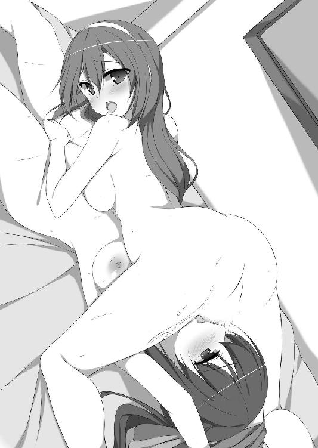
「やん、やぁぁん！ あ、あふ、ふぁ......あぁぁうんっ！」
茉友の内腿に力が入る。淫裂から恥液が滴り落ちる。それを口で受け止めることも、同性の性器を舌でまさぐることにも、何の抵抗も感じない。
（だって、茉友のだから......！）
他の誰でもない、愛する少女の身体なら、どこにだってキスできる。夏希は、さっき自分がされたように茉友のクリトリスを探り出し、思いきり吸いついた。彼女も夏希の淫核を、愛液ごと吸い上げる。
「ひッいぃぃぃぃッ!!」「ふぁっ、あぁぁあぁぁぁッ!!」
ふたりの甲高い悲鳴が、絡み合いながら部屋中に響き渡った。甘美なのに、電流のような快感が身体の中を駆け巡る。
「しょんな、らめっ！ そんなされたら......あたし、ひッ、ひぁっ！」
「な......夏希ちゃん、もッ......す、吸っちゃ......そんな......だめぇぇぇっ！」
ふたりの腰がガクガク震える。快感から逃れようとして大きくうねりながら円を描く。でも逃がさない。逃がしてくれない。激しい舌の動きで相手を追い詰める。
「そんな......あたし、あたし......！」
「夏希ちゃん......わたしも、もうダメ、イッちゃいそう......っ！」
全身が力んでお尻に指が食い込む。腰が浮き上がる。
「いく......イッちゃう！ 茉友、あたしイク、イッていい？ いいっ!?」
「いいよ、わたしも......も、もう......もうッ!!」
二枚の舌が、同時に淫核を根元から舐め上げた。激しすぎる快感が、輪になったふたりの身体を電撃のように走り抜ける。
「ふぁふぁ！ まゆ、まゆイク、イッ......くぅぅぅッ!!」
「なつきちゃんっ！ イッ......きゅ、イク、あぁぁぁんっ、ふぁあぁぁぁぁっ!!」
身体がまっすぐに伸びきった。爪先を伸び縮みさせながら、痙攣したように全身を大きく波打たせる。口と恥裂を愛液の糸で結び、喉を反らせる。
「ふ、あ......あ......ふぁ......は、あぁぁ......」
脱力し、床に身体を預ける。その時になって、やっと手首を縛っていた服が解けた。のろのろと外していたら、茉友が気だるそうに身体を反転させてきた。手伝ってくれるのかと思ったら、無理矢理夏希を立たせて、広々としたベッドの上に押し倒す。
「......茉友？ あたし、とりあえずこれを............む、んむぅ!?」
愛液でベタベタになった唇で、唇を塞がれた。しかも、絶頂後の身体を癒すような優しいキスではなく、愛撫のように本格的な、舌を絡めるディープキス。
「えぇぇ!? ちょっと休もうよ、茉友......あむぅン、ふ......みゅふぅぅん......」
「だめぇ、まだぁ......。もっと、もっと気持ちよくなって欲し......ン、ちゅ、ちゅるっ」
茉友は甘えるように唇を擦りつけ、しかし口腔にたっぷり溜まった唾液を流し込んでくる。小休止と思っていた夏希は、喘ぐだけでそれを受け止めきれない。
「ふぁ、茉友......あん、きゅふぅぅん......」
それでも、汗ばんだ肌が触れ合う感触が、すぐに夏希の淫欲を再燃させた。周囲の服を払いのけると、自分から彼女に脚を絡める。茉友も同じように身体を密着させ、ふたりで太腿に淫裂を擦りつけ合った。
「んっ、あっ......んン......ンふぅ......！」
壁に寄り掛かった茉友が、両手で必死に口を塞ぐ。それでも、抑えきれない密やかな喘ぎは指の間をすり抜けて、放課後の屋上に静かに響く。その心地いい音色をＢＧＭに、夏希は、彼女の恥裂に夢中で舌を這わせた。
「ン、や......。こ、こんな場所で......なんて、ンッ！」
「でも......茉友が欲しがったんだよ？」
「それは......でもでも......はぅん、きゅ、ふぅぅぅん......！」
口では嫌がっているけど、求めてきたのは茉友の方。キスの後、彼女は自らスカートをめくり上げ、そこへの口づけをおねだりした。恥じらいに頬を染めながら下着を晒す彼女の姿は、痛々しくも、この上なく艶めかしい。その誘惑に勝てるはずもなく、夏希は彼女の前に跪き、恭しく下着を脱がせた。
「あ、やン、はぁぁ......。じ、焦らさないで......お願い、もっと......もっと、あんっ！」
強い刺激を求めて、茉友が切なげに腰を揺らす。もちろん、夏希だって思いきり彼女のそこを嬲りたい。でも、できるだけ長く気持ちよくなって欲しくて、感じやすいクリトリスを避け、小刻みに陰唇を震わせ続けた。それでも、粘り気のある淫液が多量に溢れ、内腿を濡らす。夏希はそれを舌に溜め、送り返すようにして膣口に塗りつける。
「あ、あ......あぅん！ 突いちゃ......そこ、突いたら......ふ、あ......！ だめ......な、夏希ちゃん......。わたし......もう、立っていられない......」
茉友の膝が震え、崩れ落ちた。もちろん、それで中断する気なんてない。彼女を寝かせると、今度は焦らしたりなんかせず、膣口や淫核を思いきり責め抜く。
そして数分も経たないうちに、茉友は甲高い絶頂の喘ぎを上げていた。
「はぁ......はぁ......」
お返しに、今度は夏希が絶頂させられ、ふたりは下着も穿かず屋上で転がった。
快感の熱が引き始め、冷静さが戻ってくると、恥ずかしくて互いの顔が見られない。それでも、蕩けるような絶頂感を知ってしまったら、もう元には戻れない。恥ずかしい思いをすると分かっていながら、秘部を晒しての愛撫を求めずにはいられなかった。
できることなら、ずっと抱き合っていたい。でも──。
「そ、そろそろ......行かなくちゃ......」
茉友がのろのろと身体を起こす。彼女は、今日も、彼女はお仕事。本当は、こんなことをしている余裕なんてないはずなのに。
「ごめんね。あたしのために、無理に時間を作ってくれたんでしょう？」
「ううん。わたしが、夏希ちゃんに会いたかったの」
そう言って、茉友はキスをくれる。彼女に甘えていると分かっていながら、我慢できない自分が情けない。
「そういえばさ、次の日曜って、空いてる？」
もちろんデートのお誘い。でも茉友は、申し訳なさそうに両手を合わせた。
「ごめんなさい。急にお仕事が増えちゃって......」
より親密になったというのに、最近、逆にデートはお預けの日々が続いていた。昼休みはともかく、こうして放課後に会うのも数日ぶり。彼女が忙しいのは喜ばしいことなのだけど、会えないとなると、やっぱりちょっと寂しい。
「お仕事なら仕方ないよ。でも、日曜日って、今までは、ほとんど休みだったよね？」
「うん。まぁ......その......色々あって......」
妙に言葉を濁す。まるで隠しごとをしているみたいに。
「もしかして、またお母さんに何か言われた？ やっぱり女優になれとか何とか」
「そ、そうじゃないの！ えっと......ごめんなさい。まだ話せることじゃなくて......」
別に、夏希には誰かに漏らすつもりなんかないし、こっそり教えてくれたって──とか思わなくもないけれど、そこは、彼女のプロ意識を尊重すべき。
「分かった。よそには漏らせない情報とかあるんでしょ？」
「う......ううん......。そういうわけでもないんだけど......」
なおも困ったように視線を逸らす茉友。彼女の都合を理解したつもりなのに、そんな曖昧な言い方をされたら、余計に気になってしまう。かといって突っ込んで聞くわけにもいかないし、それに、そこで時間切れになってしまった。
茉友のいない日曜日は、することがない。
このところは毎週のようにデートしていたので、ひとりで過ごす休日の予定の立て方が分からなくなっている。というわけで、朝から居間でテレビ三昧していたのだけど。
「若い娘が朝からゴロゴロしてるんじゃないの。どこかに行ってきなさい」
なんて感じで母親に怒られたので、お言葉に甘えて出掛けることになった。そこは勉強しろと言うのが普通だと思うけど、さすがは自分の母親だと、変に感心してしまう。
「とはいえ......うーん。どこに行こうかな」
当てもなく家を出たので、早くも駅で行き詰まった。券売機前で、路線図とにらめっこ。お財布の中と相談するとあまり遠出はできないし、かといって通学圏内でも面白くない。
「......そういえば、今日、茉友はお仕事なんだよなぁ......」
そう考えたら、自分がサボっているみたいで無性に申し訳ない気分になる。悪いことをしているわけでもないのに、この罪悪感は何だろう。
もちろん、考えすぎなのは分かっている。仕事をしている茉友の方が特別なのだし、特殊な環境に生まれた彼女が、普通の学園生活の中で疎外感を覚えているのを、自分はよく知っているはずなのに。
「そうだよ！ あ......あと何年かしたら、あたしだって普通に働いてるはずだし！」
その時の自分が具体的に想像できなくて、漠然とした不安に襲われるけど、そんなの、きっとみんな同じ。夏希はモヤモヤとした不安を振り払うように頭を振って、思考を休日モードに戻した。そして、改めて路線図を辿っていく。
ある駅に目が留まった。そこには、前に茉友と行ったアウトレットモールがある。
「よし、ここに行こう。あの時は何だかんだで、あんまりお洋服見られなかったからね」
それがなぜなのかは、思い出さないようにする。無事に済んだからよかったようなものの、あんなスリルはもうたくさん。
というわけで、電車で一時間弱。駅を降りると、自宅や学園周辺とは風景が違って、空が広い。それほどの移動ではないのだけど、実際以上の遠出感がある。ただ洋服を見て回るだけにしては、ちょっとした贅沢感。
「......と、そういえば、茉友と行ったあのお店だけは避けなくちゃ」
更衣室で変なことをしていた娘として、店員に顔を覚えられているかもしれない。バレてはいないと思うけど、やっぱり足を向けにくい。
「さーってと、どこから見ようかな。............ん？」
敷地の端の方、軽食屋台の並ぶ一角が騒がしい。若い女の子を中心に、買い物客がたむろしている。何か、突発的なイベントを見物しているらしい。夏希の足も自然とそちらに向かう。人垣の隙間から向こうを覗いて、思わず「あっ」と小さく声を上げた。
昼間だというのに大きなライト。それを反射させるレフ板。見物人たちを整理し、遠ざけている警備員。そして、立て続けに切られる軽快なシャッター音と、カメラマンの前に立ち、格好いいポーズを決める長身の女性。
「これって......ファッション雑誌の撮影？ こんなところでやってるんだー」
気まぐれで来た場所で、こんな場面に出くわすなんて。驚いたのは夏希だけじゃない。見物している女子高生らしいグループも、きゃあきゃあと興奮気味に騒いでいる。
「すっごいなー。モデルの仕事を実際に見るのって、初めてかも」
自分の独り言で、夏希はふとしたことを思い出して首を傾げた。そういえば最近は、あまり業界の話を知りたいとか考えていない気がする。茉友と付き合い始めてからも、その話題を避けていたせいだろうか。
それにしても、ひとりのモデルにつき、一体何枚撮るんだろう。想像していた以上に頻繁にポーズを変え、メイクを直して、また撮影。絶え間なく鳴り続けるシャッター音に、夏希は圧倒されるばかり。
モデルも、何人かいるみたいだった。スペースの一角にマイクロバスが停まっている。そこが控室兼更衣室なんだろう。最初のモデルが車の中に引っ込んだと思ったら、別のモデルが出て来た。そして、同じ段取りで撮影が続いていく。
ただ着替えやメイク直しのたびに中断が入るので、見物人の中には離脱する人も出てきた。夏希の隣で騒いでいた女の子たちも、買い物の続きに行こうかなんて相談している。正直なところ、夏希も頭の片隅では、移動を考え始めていたところ。
でも、カメラマンのひと言が、そんな緩んだ空気を吹き飛ばした。
「次、ＭＡＹＵちゃんスタンバイしておいて」
（ＭＡＹＵって......茉友がいるの!?）
女の子たちの、そして夏希の注目を一気に取り戻す。慌てて視線を左右に振って、彼女の姿を探すと、さっきのマイクロバスの扉が開くのが目に入った。
（わ......本当に茉友だぁ......）
ノースリーブのワンピースに、麦藁のカンカン帽。白いサンダルから覗く爪先は、遠目には分かりづらいけど、淡いピンクのペディキュアが塗られている。
茉友はバスから外に出るなり、スタッフさんにちょこちょことメイクを直してもらっている。何の打ち合わせもなしに、いつものように、という感じで。小道具のトートバッグを受け取り、そして──。
「わぁ......」
撮影が始まると、夏希は無意識のうちに声を出していた。茉友の衣装は、普段でも見られそうなスタイルで、夏希の眼にはそれほど新鮮味はない。それなのに、レンズの前に立った彼女は、まるで別人だった。
小首を傾げながら、バックを掛けた肩の辺りに右手を置き、ちょっと腰を捻って体重も右に掛ける。ともすると媚びて見えるポーズなのに、違和感がないばかりか、ありふれたワンピースが魅力的に見える。
「ＯＫ。じゃあ次は、ちょっとお散歩って感じで」
カメラマンの大雑把なリクエストにも、ＭＡＹＵは簡単に応えてみせた。トートバッグを背負い、帽子のつばを摘みながら背中を反らせて大股に脚を開く。止まっているのに、夏希には彼女が楽しそうに歩いて見えた。裾を摘んで払うと、まるで洋服が風にそよいでいるようで、自分に似合うとは思わないのに、夏希は一瞬、無性にあれが欲しくなった。
「......と、そうか。そう思わせるお仕事だもんね」
これを着れば自分もＭＡＹＵになれる。言葉は悪いけど、そんな風に騙された気分。
「これが......ファッションモデルのＭＡＹＵ、なんだ......」
デビュー一年足らずで、人気モデルの仲間入りしただけのことはある。どこに迷う必要があったんだろうと思うくらい、生で見る彼女は可愛くて、堂々としていて、自信に満ちていた。スタッフだけでなく、見ず知らずの観衆に囲まれているのに、少しも萎縮していない。それどころか、撮影風景に飽きていた見物人の興味を、再び惹きつけている。
慣れた立ち居振る舞い、大人っぽい髪型やメイク。物怖じしない物腰。自分の知らない大人の世界にいる、自分の恋人。そして思い知る。彼女が、プロなのだということを。
「あたし、何やってるんだろう......」
分かっていたはず。今の自分と茉友の間には、手の届かない距離があるということを。彼女は特別だと思い込んだところで、その差が埋められるはずがない。
夏希は、また増え始めた人の群れからそっと離れ、そのまま、帰宅の途に着いた。
翌週も、茉友は忙しそうだった。放課後どころか、昼休みにすら会う機会がない。毎晩メールで「今日も会えなくてごめんなさい」と謝ってくれるのが、唯一の接触。でも夏希は、そのメッセージに簡単な返信しかしなかった。今日も「大丈夫だよ」とだけメールを打つと、ベッドに転がりながらスマホを放り出す。
日曜日に見た茉友の姿。それが、夏希から自信を奪っていった。彼女は今までも仕事をしていたのだし、夏希は、その実際の姿を知らなかっただけ。別に関係性が変わったわけじゃない。でも、変わった。夏希は、茉友との距離を実感してしまった。
嫌々始めた仕事で、彼女はあんなに魅力的に輝いて、みんなの視線を惹きつけて。それなのに、自分は逃げてばかり。全然、釣り合いが取れていない。
「あたしなんて......やっぱり茉友には邪魔なのかな......」
前に、友達からそう忠告さされた。それでも気にしないようにしていた。目を逸らしていた。単に、茉友が好きだから。彼女と一緒にいたいという、子供じみた欲求から。
もしかしたら、モデルを続けることを悩んでいた茉友を立ち直らせたという自負が、心のどこかにあったのかもしれない。でも、そんな思い上がりも打ち砕かれた気分だ。たった数分、プロの現場を覗き見しただけなのに。
「......だったら、あたしがもっと頑張ればいいだけじゃないの？」
でも、茉友のいる世界にいる自分の姿が見えてこない。想像できない。枕に顔を埋めて悶々と考えごとをしていたら、いきなりスマホが着信音を鳴らした。前触れのない甲高い音にびっくりして跳ね起きる。
茉友からだ。それもメールではなく、通話。一瞬、どうしようかと迷ったけれど、催促するような音に急き立てられて電話に出た。慌てすぎて、必要以上に声が大きくなる。
「も、もしもしっ！」
『わあ、びっくりした。どうしたの夏希ちゃん』
電話の向こうで、彼女が目を丸くしている姿が思い浮かぶ。夏希はベッドに正座して、ぺこぺこと頭を下げた。
「な、何でもない。ちょっと急いで出たもんだから......。で、で......何？」
返事をしてから、疑問が湧いた。淡泊な内容のメールばかりで、怒っていないんだろうか。一応謝ろうと思ったけれど、彼女の声がいつも通りすぎて、逆に怖くて訊けない。
『あの......ごめんね夏希ちゃん。メールばっかりで......。本当は、ちゃんとお話ししたいんだけど......。もしかして、怒ってる？』
迷っていたら、茉友の方から謝られた。
「違う違う！ あたしの方こそ、その......なんて言うか......」
茉友に嫉妬して、自己嫌悪して拗ねてたなんて、みっともなくて言えない。だから、ごまかそうとする気持ちがどうしても先に立って、うまく説明できなかった。
『それで、もし......もしね、夏希ちゃんが怒ってなかったら......』
「怒ってない！ 全然怒ってなんかないから！」
謝るべきなのは夏希の方なのに。彼女にばかり気を遣わせて、ますます自分が情けなくなる。しかし、そんなこととは知らない茉友は、いかにも安堵したような息を漏らした。
『んふふっ、よかったぁ。......あのね、夏希ちゃん。わたし、報告があるの』
「ほ、報告？」
改まった言い方に、夏希も身構える。口調からすると悪い話ではなさそうだけど、何しろこちらには後ろめたいことが色々あるし、彼女も、どこか緊張しているのが伝わってきて、あれこれ良くない想像を巡らせてしまう。
『あのね......わたし......今度、ショーに出ることになったの！』
「ショー？ ......って、ファッションショーのショー？ もしかして、ＪＧＳ!?」
思わず興奮気味に声を上げたら、何だか茉友の苦笑いが聞こえた気がした。
『ＪＧＳはもう終わってるよ。私がお仕事させてもらってる雑誌社が主催でね、三誌合同のショーがあるの。ＪＧＳほどじゃないけど、結構大規模なイベントで......』
その雑誌と仕事をしているモデルは全員出演、というお達しがあったらしい。
『それで、打ち合わせとかウォーキングやポージングのレッスンとか色々あって......なかなか時間が取れなくて、ごめんね』
そんなに何度も謝る必要ないのに。彼女は、彼女のすべきことをしているだけ。何もできない自分と違って。
「最近忙しそうだと思ってたけど、すごいじゃない。さすがは茉友」
『何よそれ』
茉友がクスクス笑ってくれる。ますます遠くなる彼女への嫉妬を、夏希が押し殺しているとも知らずに。
「そういえば、あたしに用みたいだったけど......」
『あ、うん。夏希ちゃんに、ちょっとお願いがあるの』
電話をもらう直前は茉友との距離に悩んでいたのに、彼女に会えると思ったら、そんなことも忘れ、喜び勇んで出掛けてしまう。我ながらお手軽な女と思わなくもないけれど、好きな娘に頼られて断れるはずもない。そして、その茉友の「お願い」とは。
「わたし、自信をつけたいの」
ショーへの出演を決めたはいいけど、今まで苦手で避けてきたものだし、そうでなくても初めての経験。要するに、ステージ度胸をつけたいから手伝って、ということらしい。
「でもさ、この間は平気だったよね。アウトレットでの撮影」
「............やだ！ 夏希ちゃん見てたの!? そ、それなら声を掛けてくれれば......」
「あたしが声掛けても、緊張しないで普通に撮影続けられた？」
「う。それは、無理......」
茉友ががっくりと肩を落とす。見て見ぬふり、なんて気の利いたことをしたわけではないけれど、彼女の邪魔をせずに済んだのなら、結果として良かったんだろう。
「そ、それに、それとこれとは......。わたし、カメラは平気になったけど......ショーは、お客さんを見なくちゃいけないし......」
「ああ、なるほど。そういうものなの？」
カメラのレンズだけを見ていればいいのと、人の目を直接意識するのでは、彼女の中で大きな違いがあるんだろう。確かに、全観客が自分に注目しているなんて思ったら、緊張するのも理解できる。
だからこそ、今日はそれに慣れるための特訓なわけで、夏希は茉友を、家族連れでにぎわう日曜の遊園地に連れて来た。もちろん、アトラクションで遊ぶためじゃない。
本当に用があるのは、隣接する公園にある野外ステージ。様々なイベントに使われることの多い場所だけど、何も予定のない時はフリーの空間。今日も、遊園地帰りらしい家族連れが、その上で適当に子供を遊ばせている。
「あは、可愛い」
ステージを見下ろす、すり鉢状の客席に腰を降ろした茉友が、子供が走り回るのを微笑みながら眺めている。
そんな彼女の今日のファッションは、いつになく露出が多め。薄手のノーカラーのジャケットの下は、キャミソール。フレアのミニスカートと編み上げのサンダルは、彼女が身に着けると上品に見える。夏希も似たようなコーディネートで、違いと言えば上着の袖が七分丈なのと、足元がスニーカーなところくらい。ペアルックみたいだね、なんて茉友は喜んでいたけれど、そんなに呑気に構えていられるのも今のうち。
「じゃあ、茉友。そのステージでウォーキングしてみせて」
顔に微笑みを残したまま、夏希を振り向く茉友。首を傾げて話を理解していないアピールをするけれど、とぼけているのが丸わかり。
「ランウェイがないのが残念だけど、あれだけ奥行きがあればできるでしょ？」
夏希の話を黙って聞いていたけれど、ごまかしきれなくなったのか、彼女の顔に脂汗が浮かんできた。そして激しく首を左右に振る。
「む、無理だよ！ こんなに人がいるところで、練習なんて......！」
確かに彼女の言う通り、ぐるりと見渡すだけで大勢の人が視界に入った。客席の後ろは隣の遊園地に出入りする通り道になっていて、休日を楽しんでいる人がひっきりなし。ステージの周りでは何組かの親子が遊んでいるし、中にはジャグリングの練習をする人や、何かの芝居の稽古をしているグループなんかもいる。意外と様々な人の目があって、だからこそ、この場所を選んだわけで。
「人に見られる練習がしたいんじゃなかったの？」
「そ、それは......」
自分から依頼しておいて怖気づくわけにはいかないと思ったのか、渋々だけど、茉友は覚悟を決めてステージに昇った。
「あ、そうだ。せっかくだから、茉友のウォーキングをスケッチさせてね」
「え、ええっ!? そんな、まだダメ......」
「はーい、それじゃ始めていいよ！」
彼女の抗議を、夏希はわざと大声で遮った。目的は、周囲の注目を集めること。向けられた視線は一瞬だけど、それで十分。必要なのは、茉友が見られているという意識。
もっとも、それだけでは単なる意地悪なので、夏希もステージによいしょと腰掛け、彼女がリラックスできるように雑談を始めた。
「それにしても、強制とはいえ、よくショーに出る気になったね。嫌だったんでしょ？」
「うん。実はね、一回は断ったんだ」
けれども、これは雑誌社主催のショーなので、契約しているモデルは全員参加が原則。欠場は許されないと一蹴されたらしい。
「でも、それで思い直したの。モデルを続けるってことは、色んなチャンスにチャレンジすることだって。それが、夏希ちゃんと約束した、頑張るってことなんだって」
「......え？」
「だったら、どうせ経験するなら大きい舞台がいいと思って。んふ、頑張るよぉー」
茉友が、微笑みながら小さくガッツポーズ。そんな彼女に、夏希の方が怖くなった。
自分なんかの励ましで、無理をさせているんじゃないか。苦手なことを押しつけているんじゃないか。そんな責任感が、重くのし掛かってくる。夏希の言葉に縛られる必要なんてない。もし嫌なら、やめていいと言ってしまいたい。
でも、前向きになっている彼女に、逃げろなんて言う方が無責任。
（でも......あたしなんか関係なしに、平気でこなしちゃうんだろうな......）
先日の撮影を見る限り、いざとなれば肝が据わるタイプみたいだし、この訓練だって必要だとは思えない。きっと初めて体験するお仕事なので、少し不安になっているだけ。
（そうだよ。レッスンに通ってるなら、あたしみたいな素人に頼る必要なんてない）
むしろ、夏希に会いたかった口実という方が、嬉しいし納得できる。ちょっと間が開いたから、そういうこともあるかもしれない。
実際、彼女は何も問題なくウォーキングをこなしている。美少女のステージを脇目で見ている人たちを気にしてか、多少ぎこちないし、表情も硬いけど、練習の成果は出ている感じ。ステージの先端でピタッと止まってポージング。そして、左右にもお客さんがいると想定し、振り向いてアピール。普段の彼女からは想像できない身体の切れ。夏希は、スケッチブックを開いていることも忘れ、彼女の動きに見惚れしまった。
しかし、それでも茉友は浮かない顔。ステージを往復するたびに、むしろその表情からは自信が失われていく。
「大丈夫じゃないの？ あたしにアドバイスできることなんて何もないよ」
「う、うん......」
曖昧な返事からは、何も窺い知ることはできない。もしかしたら、ステージ度胸なんていう問題ではなく、何か別の、もっと深刻な悩みを抱えているんだろうか。夏希はスケッチブックを脇に置き、彼女を手招きで呼び寄せた。
「......あたしに話してないこと、あるでしょ」
腰を降ろしかけた茉友が、一瞬、凍りついたように動きを止める。平静を装ってお尻を着地させるけど、明らかに動揺している。
「やっぱり、お見通し？」
「いや、そんなご大層なものじゃなくて。何が不安なの？ 言いたくなければ、あたしは別に構わないけど」
すると彼女は、泣きそうな顔で夏希の服を引っ張った。口が重そうな彼女に喋らせるため、わざと冷たい言い方をしたけれど、思った以上に効いてしまったみたいだ。
「大丈夫、あたしが茉友を見捨てるはず、ないでしょ」
とにかくここでは落ち着かない。さっき、なまじ注目を集めたせいで、夏希の方こそ周囲の視線が気になってしまう。ちょっと考えた末、遊園地に誘うことにした。
「茉友、観覧車に乗ろうよ。あそこなら密室だし、誰にも話を聞かれないよ」
そこまで用心する必要もないだろうけど、環境が整えば話しやすくなるだろう。
「さあ、話しなさい。今度こそ何も喋らなければ、あたし、本当に帰るから」
茉友を観覧車という密室に閉じ込めた夏希は、その上で、冗談半分にプレッシャーをかけた。すると彼女はわずかに唇を綻ばせ、窓の外を眺めながら、ぽつりと呟いた。
「......先輩が」
「うん？ 先輩？」
予想外の単語が飛び出して、夏希は思わず聞き返す。
「モデルの先輩がね、ショーには、たくさん出演するの」
「あ......ああ、うん。そうだろうね」
人気者ではあっても、キャリア的にＭＡＹＵはまだ駆け出し。周りはみんな先輩と言っていい状態なんだろう。
「あ、もしかして！ 先輩に苛められたとか？」
「違うの！ ......違わないのかな......。ある先輩に......下手くそって......。ポージングも視線の動かし方も全然なってない。仕事から逃げてるから、できないんだって......」
「何それ！ 間違いなくイジメじゃない！」
憤りに駆られて思わず大声を立てると、茉友は、むしろ静かに、首を横に振った。
「ううん。やっぱり違うよ。ショーから逃げてたのは事実だし」
「でも、今回が初めてなんでしょ？ その......キャリアを重ねた人から見れば下手なのかもしれないけど、でも、そこは仕方ないじゃない」
「お客さんには、わたしが初めてかどうかなんて関係ない。最初から最高のパフォーマンスを見せないといけないの。だってプロだから。実はわたしも、夏希ちゃんと同じように考えてた。初めてなんだから仕方がないって。先輩は、そんな甘えを見抜いたんだよ」
夏希は首を捻った。そんなプロの現場の厳しさの話をされても困る。どうやって素人に力になれというんだろう。
「う～ん......。それで、あたしに何をして欲しいの？ あたしは何をすればいい？」
茉友が望むものが分からず、率直に尋ねる。それだけなのに、なぜか、彼女の顔色が変わった。まるで狼狽しているというか、視線が左右に泳いでいる。
「あの......だから......」
それに、急に口籠もり始めた。顔の色も赤いし、膝の上で組んだ手が、落ち着きをなくしてモジモジとせわしなく動いている。
「れれ、練習は頑張るよ！ じょ......上達するには、数をこなすしかないし。だ、だから......だから、夏希ちゃんには......に、には......」
「あたしには？」
「あ......あ、う......ンは......っ」
脚の間で茉友の指が蠢いて、背中が震える。下着越しに恥裂を擦られるたび、内腿がビクンと強張ってしまう。
「夏希ちゃん......声、もっと出していいよ。ここなら誰にも聞かれないから......」
「で、でも......でも茉友......あ、ふぁ............ンくッ！」
背後から囁かれる声にも、夏希の身体は敏感に反応した。吐息に頭の中までくすぐられているようで、指を噛んで喘ぎを必死に抑える。けれどもそれを許さないように、細い指先が膣口に捻じ込まれた。布地と性器との雑な摩擦が、被虐的な悦びに腰を痺れさせる。
「ふ、あ......あぁっ！」
茉友らしくない乱暴な愛撫に悲鳴が漏れる。窓ガラスに爪を立ててしまう。
ふたりは、遊園地の観覧車に乗り込んでいた。茉友が欲しい物を与えるために。それを聞いた時、夏希は耳を疑った。冗談かと思ったけれど、彼女の瞳はあくまで真剣。
──欲しいの。夏希ちゃんが傍にいるっていう実感が......。
そうしたら、もっと頑張れる。何だってできる、なんて茉友に迫られたら、無碍に断ることもできない。
それに、彼女がそれを身に着けることを想像したら、胸の奥で異様な興奮を覚えた。
（とはいっても、ここは......）
屈んでしまえば、外から見られる心配のない密室。でも下半身を嬲られていると、眼下の人たちに下から覗かれているような錯覚を起こし、身体が竦む。茉友のお願いを聞くためとはいえ、もっと場所を選べばよかった。
「ね、ねぇ......茉友、本気？ 本当にこんなものが欲し............ふあぅんっ」
「もう聞き返さないで、お願いっ！」
恥じらいをごまかすように、彼女の指が下着のゴムをくぐり抜ける。一気に淫裂まで進むかと思ったら、掌で恥毛を撫でられた。意識していなかった場所だけに、直接秘部を触られるよりも恥ずかしい。さわさわと下腹の草叢を指先でまさぐられると、その下の部分まで熱く潤んできてしまう。
「ま、茉友ぅ......」
震える声で振り返ると、唇をぺろりと舐められた。たったそれだけで、身体の中心を甘い悦びで貫かれる。でも、もっと欲しくなって舌を伸ばそうとしたら、不意打ちのように茉友の指が淫裂に滑り込んだ。
「はぁう！」
「わぁ......。夏希ちゃんのここ、とっても熱い......。トロトロで......柔らかぁい......」
思わず仰け反った夏希の頭を肩に乗せて、茉友が感嘆したように呟く。初めて触ったわけでもないのに、まるで形を確かめるように、性器の縁を撫で回す。
「茉友......やだ、焦らさないで......。もっと強くして......」
茉友の力くらいで痛くされるのが気持ちいい。それを知っていながら、彼女は揃えた指で恥襞を優しく撫でるばかり。もどかしげに身体をくねらせると、まるでそれを封じるみたいに、背中に胸をぴたりとつけてきた。
「あ、ふぁん......」
このために今日は薄着だったのかと思うくらい、双球の柔らかさを背中で感じる。服や下着を挟んでいるのが信じられないほど、ふにゅりと潰れる乳房の感触や、その頂点の硬蕾の存在まで、克明に。
「ん......」
しかも茉友は、悩ましい吐息を夏希に聞かせながら、胸で背中に円を描いた。ぐいぐいと押しつけてきて、彼女の鼓動まで伝わってきそうだ。
「茉友......やらしいよぉ。いつからそんなエッチな娘になっちゃったの？」
「な、夏希ちゃんのせいじゃない！ 夏希ちゃんが......ン、もう......意地悪......」
「あ、ふは......はぁぁう！」
どちらが意地悪なのか、彼女は耳朶を噛みながら、クリトリスを擦り上げてきた。オイルのような愛液を中指で掬い、淫核に塗りつける。上と下で生まれたピリピリとした快感がお腹の辺りで交わって、指先にまで広がっていく。
淫唇の襞を撫でながら、茉友の歯が耳朶にキリキリと食い込んでくる。かと思えば、噛んだ部分を癒すように舐めながらクリトリスを捻り上げる。
「は、あっく......んふぁ......。ま、茉友......そんなこと......はぅ、ンッ、きゅふぅ......」
相反する快感が交互に襲い来て、夏希の頭は混乱に陥った。そのくせ身体は、優しさも痛さも節操なく受け入れてしまう。茉友に触れるだけで全身が悦びに震えてしまう。
「やだ......。腰、動いちゃう......」
我慢しようと思っても、身体が言うことを聞かなかった。茉友が淫裂を擦るたび、そのリズムに合わせて腰が前後にうねる。
「あぁ......夏希ちゃん、やらしい......。こうすると、どう......？」
「はぁぁぁぅ！ うくッ......ふっ、ああぁぁぁ......っ！」
膣口に、指が潜り込んできた。ほんの先端、第一関節程度なのに、身体に割り込まれるような圧迫感に息を詰まらせる。でも苦しいと思ったのは一瞬だけ。鉤状に曲げられた指が膣壁を掻き回すと、たちまち下半身が蕩けるような快感に包まれた。
「はぁぁ......あぁぁ！ あ、あったかい......そこ、そこぉ！」
内側の肉をくすぐられるたび、膣口がヒクヒクと収縮する。まるで彼女の指に掻き出されるように、内側に溜まっていた恥粘液を大量に吐き出す。
「わぁ......すごぉい......。夏希ちゃんので、わたしの手、ぐしょぐしょになっちゃう」
「だから、そういうこと言っちゃ......だめ......だめぇ!?」
聞き分けのない夏希の首筋を、茉友の舌が舐め上げた。痺れるような快感に力が抜けていく。腰が抜けて姿勢を保っていられない。
「はふぅん」
間の抜けた声と共に、夏希は床にぺたんと座り込んでしまった。同時にあそこから指も抜けてしまい、茉友が「あんっ」と残念そうな声を漏らした。
「夏希ちゃん......そこ寝て」
茉友に促され、座席に横たわる。そして、彼女は改めて、夏希の淫裂に下着の上から指を添えた。脚の間に膝を割り込ませながら身体を被せてくると、舌を挿し入れるキスをしながら股間を擦り始めた。
「んみゅ、あふっ。ま、茉友......んむ、みゅぅぅぅっ！」
今度は口腔を掻き回されて、背中が大きく反り返る。狭い椅子では身体が落ちそうになり、必死で茉友に抱きついた。彼女も夏希の頭に手を添えるけど、それは支えてくれるためじゃなかった。後頭部を持ち上げて、さらに奥まで舌を押し込んでくる。
「みゅ、ふぅぅっ！ あぶ、ぷぁっ......くふっ、んく......！」
舌で口を塞がれた上、唾液がだらだら流し込まれて、ほとんど息ができない。夏希は口腔を満たす彼女の唾液を、無我夢中で喉に流し込んだ。彼女のものを飲んでいると思うだけで、気が遠くなりそうな幸福感に胸が満たされる。でも幸せに浸ってはいられない。下半身では、激しい摩擦で淫裂に下着が食い込み、溢れた蜜が布地に吸い込まれていく。
すると、まるで花の蜜の匂いに誘われた蝶のように、茉友が身体を滑らせ、夏希の股間に顔を寄せてきた。そして、太腿に頬を擦りつけながら、うっとりと呟く。
「はぁ......いい匂ぉい」
「や、やだ......恥ずかしいってば......はぅン!!」
逃げようとする夏希の鼠径部を、茉友の舌が逆撫でした。電撃のような快感が脚の付け根全体に走り、またも淫裂から大量の蜜が溢れ出す。
「あは。夏希ちゃんのパンツ、もうぐっしょり......。もう十分かな......」
茉友に言われるまでもなく、大量の愛液を吸い込んだ夏希の下着は、まるでお漏らしをしたかのよう。
「さあ夏希ちゃん、脱ぎ脱ぎしましょうねー」
まるで赤ちゃんに話し掛けるように、茉友が下着に手を掛ける。濡れて伸縮性の落ちた布切れを、苦心しながらも嬉々として夏希から奪い去る。
そして、これこそが、彼女の欲しがっていた物だった。
「ま、茉友......本当にそれ......ショーの時に穿くの？ 本気？」
「うん。だって......一番、夏希ちゃんの体温を感じるものだから」
小さく丸まった布切れを大事そうに両手で包み、それでもさすがに恥ずかしそうに茉友がはにかむ。そんな物を要求されて戸惑ったけど、それで彼女が満足するならと夏希も承知したのだから、それ自体は構わない。ただ、ひとつだけ気がかりなことがあった。
「あ......あのさ......。ショーまで、まだ何日もあるよね？」
まさか、エッチな液で濡れた状態のものを持ち続けるつもりなんだろうか。愛撫の途中で放置され、あちこち半端な快感で疼く苦しい息の中、夏希は尋ねずにいられない。
「あ、もちろんお洗濯してから穿くよ」
「え！ えぇぇ!? あ、いや......そうするのが当たり前だけど......で、でも！ それならお洗濯済みの物を......！」
こんな場所で、こんなことをする必要はなかったはず。目を丸くする夏希に取り返されるとでも思ったのか、茉友は手にした下着を両手でしっかり握り締めた。
「夏希ちゃんのが染み込んでるって思うことが重要なの。気持ちの問題だよ」
彼女がそれでいいなら夏希にも文句はないけど、一方的に辱められたみたいで何だか釈然としない。いくら思い詰めていたとはいえ、こんな変な娘ではなかったはず。
「茉友......。いつからそんなヘンタイさんになっちゃったの？」
やっぱり、ちょっとは自覚があったらしい。彼女の顔が一気に赤くなった。
「ひっどーい！ みんな夏希ちゃんのせいだよっ！」
「あたし、茉友をこんなヘンタイさんに育てた覚えはありません」
「もー、バカバカ！ そう言う夏希ちゃんだって、わたしのパンツ欲しがったくせに！」
「そっ、それは............ッ！」
ノーパンで帰るわけにはいかないので、茉友の下着を交換でくれると言うから。でも彼女の言う通り、心の中で欲しいと思ったのは否定できない。返答に困って固まっている隙に、茉友が再び股間に手を伸ばしてきた。
「はぁぁうん！」
油断していたせいで、抵抗する余裕もなく鮮烈な快感に身体を貫かれる。下着越しの愛撫ばかりで不満を溜め込んでいた夏希のそこは、まるで意思を持っているかのように自ら茉友の指に絡みついた。
「わぁ......すっごい。指が飲み込まれていくみたい。あは、今度はぱっくり咥え込んだ。ほら、夏希ちゃんだってエッチだよ。ヘンタイさんだよ」
「そ、そんなこと......あたしは......あぁぁっ！ そ、そんなに動かさないでぇ！」
さっきまでの焦らすような動きと違い、今度は本気の愛撫だった。素早いピストン運動で膣壁を擦り上げ、鼠径部にキスの雨を降らせる。
「あ、あうっ！ あぁぁあう！ そこッ、感じすぎるから......ふぅあぁぁぁん！」
狭い観覧車の中、だらしなく放り出した脚が痙攣する。茉友の舌が太腿を伝い、膝に噛みついた。歯を軽く立てられただけなのに、強力な静電気が頭まで一気に駆け抜ける。
「ふぁあぁぁ!? な......なんで？ 何でこんなに......あくっ、はぁぁぁう！」
感じすぎて反射的に脚を引っ込めようとするけれど、逃げるようなスペースはない。内腿に力が入る。恥裂から零れた淫蜜がお尻に流れる。膝でこんなに感じるなんて、茉友も予想外だったのか、面白がって繰り返し噛みついた。
「あぁぁうん、ヒッ、ふぁあぁぅ、ンッ......きゅふぁぁっ」
ひとしきり膝で遊んだ茉友は、太腿を噛みながら付け根の方に戻ってきた。細かく動かす舌先で再び鼠径部をくすぐられ、脚が強張る。ふくらはぎが引き攣りそうだ。
「茉友、助けて！ こ......これ以上されたら......あ、ふぅぅああぁぁッ!!」
彼女の頭を掴んで引き離そうとするけれど、空中で手が固まって動けない。その間も、茉友の舌は夏希の脚を舐め、指で膣肉を擦り上げた。
気持ちいい。お腹や腰が卑猥に波打つのを止められないほど気持ちがいい。けれど下半身ばかりへの責め苦に耐えきれなくなった夏希は、自らキャミソールの胸元を鷲掴みにして揉みしだいた。それを上目遣いで見上げた茉友が、申し訳なさそうに内腿に吸いつく。
「ん......ちゅっ。おっぱいも可愛がってあげたいけど......時間がないから......」
そして、膣口に指を咥えさせたまま、彼女の舌がついにクリトリスを捉えた。
「あぅ、んはっ、ひぃぃあぁぁぁぁぁっ!!」
敏感な場所を二か所一度に責められて、夏希の身体が悦びの悲鳴を上げた。腰が大きく跳ねたけど、それでも彼女は股間から口を離さず、恥裂ごと淫核を舐め上げる。ひと舐めごとに腰が上下に躍り、指で膣口を掻き回されるたびに下半身が円を描く。観覧車の中でこんなに暴れたら危ないと思うけど、身体が言うことを聞いてくれない。
「ふぁ、ふぁ、ふぅぅあぁぁぁ！」
指で栓をされていても、夏希の性器は信じられない量の蜜を吐き出した。茉友はそれを舌で掬い、淫核に塗りつける。木の芽のように尖った勃起を滑らかな舌裏で撫でられる快感で、何度も身体が浮き上がる。
「あ......茉友、茉......はぐぅっ！」
外に見える風景が低くなってきた。そろそろゴールが近い。それを茉友に教えようとするけれど、声が途切れて言葉にならない。それでも、差し迫った声で伝わったのか、彼女の愛撫がスピードを上げた。夏希の片脚を持ち上げて、舌での性器責めに集中する。すっかりふやけた陰唇の襞を嬲り、掻き回し、クリトリスを吸い上げる。
「ひあッ!? きッ......ひぃぃぃ!!」
蜜の飛沫が茉友の唇をベトベトに濡らす。彼女は構わず夏希の女性器とキスを交わす。舌が細かく淫核を弾く。爆発寸前の熱気が、身体の中から湧き上がる。
「まゆっ、茉友あたしッ、あた......あたしッ!!」
身体が飛んでいきそうだ。しがみつくように、椅子の端を握り締める。すると、まるでとどめを刺すように、茉友の舌が性器を下から上まで一気に舐め上げた。
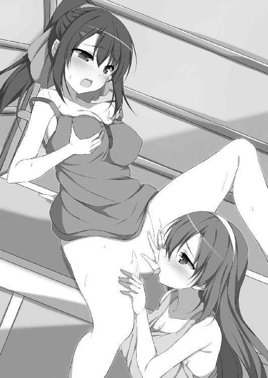
「ふぁあぁぁ！ イク、いくイク！ ひぃぃぃッくぅぅぅっ!!」
ガクガクと何度も腰が跳ね上がった。止めようと思っても止められない。しかも、その間も茉友は舌で膣口をくすぐり追い打ちを掛けてくる。
「やめ......やめて茉友！ そんなされたら、また......また、ひッ、ふぁぁぁぁっ!?」
絶頂から降りる前に、またも高いところへ飛ばされた。今度こそ優しく舐めてくれるけど、それでもまだ逆効果。敏感になった性器はわずかな刺激にも過剰に反応し、結局、観覧車を降りる直前まで、夏希の身体は平静を取り戻せなかった。
「はぁ......はぁ......。ひどいよ、茉友......」
文句を言うけど、当の本人は聞いていない。それどころか、さっそく戦利品を身に着けた彼女は、晴れ晴れとした顔でステージに戻り、ウォーキングの練習を再開した。
「うん、なんか調子いい。ありがとう夏希ちゃん。わたし、頑張れる気がする！」
「ウソだぁ」
そんなもので上手くいけば苦労はない。とはいえ確かに、さっきよりは自信が増しているように見えなくもない。満足げに歩き続ける彼女に水を差す必要もないのだろうけど、それでも夏希は半信半疑で首を傾げながら、彼女の練習を見守った。
それから一週間後、いよいよ茉友のファッションショーデビューの日。
夏希も茉友に招待されて、都内の大きな体育館を訪れた。様々なスポーツの国際試合も行われる施設だけど、今日は一万人以上もの女の子で満員御礼。ステージから伸びる細長いランウェイを、人気モデルが颯爽と歩くたび、悲鳴にも似た歓声が湧き上がる。まるでアイドルのコンサート会場だ。
「すごい......」
最大規模ともいわれるＪＧＳには及ばないらしいけど、こんなショー自体が初体験の夏希は、ただ圧倒されるばかり。出演者の招待枠の夏希は、すぐそばにランウェイを見上げる中心近く。さらに視線を上げると、女の子で埋め尽くされた観客席が見渡せて、あまりの迫力に押し潰されそうな錯覚を起こす。
「こんなの、茉友じゃなくたって緊張するよ......」
出て来るモデルはみんな長身で、見栄えが違う。この中で勝負しなくてはいけない小柄な茉友のプレッシャーは、どれほどのものだろう。先日のデートで渡した「お守り」は役に立ってくれるだろうか。もうちょっとマシなものを要求してくれればいいのにと思いつつ、何でもいいから無事に済んでくれと願わずにいられない。
そして。見ているだけの夏希にも最大級の緊張が訪れた。ステージ上の大型モニターに、茉友の姿が映し出される。同時に、スポットライトを浴びた本人が登場。一段と大きくなる歓声に、彼女の人気の高さを改めて実感させられる。興奮する女の子たちの中、夏希だけは声も出せない。でも、ランウェイを歩く彼女を見た時、溜め息が漏れた。
「............わぁ」
練習の時とは、まるで別人。一万を超える人たちに臆することもない。足取りも軽やかに、観客に満面の笑みで手を振る余裕さえある。
これが、あの引っ込み思案の女の子なんだろうか。小首を傾げながらフレアスカートを摘み上げ、可愛らしさをアピール。そして華麗にくるりと一回転し、ステージ奥に引き返していった。先週、あれだけ不安がっていたのは何だったのか、失敗の心配をするどころか、わずか一分半ほどの出番で、観客をさらに盛り上げた。この後も何度か出番はあるはずだけど、この調子なら問題はないだろう。
「ふはー......」
大きく息を吐いて、夏希は自分が呼吸していなかったことに気がついた。さんざん、プロとしての彼女に嫉妬してきたけれど、そんな小さな感情すら一蹴された気分だ。
（あの娘が、あたしのカノジョなんだよ！）
と周りの人に自慢したくて堪らない。ニヤニヤと顔を緩めながら、それを自重する。
ひと通りモデルたちが登場し、十五分の休憩時間になった。興奮覚めやらぬ女の子たちが席を立つ。でもイベント初体験の夏希は、呆然として、なかなか立ち上がれない。
「............あっ、こうしてる場合じゃなかった！」
最初の休憩時間、バックヤードに来て欲しいと茉友に言われていたのだった。部外者が入れるのか心配だけど、通行証も渡されているし、多分、大丈夫なんだろう。
トイレ休憩やグッズ配布に群がる女の子たちの群れから外れ、関係者以外立ち入り禁止の札を目指す。本当に入っていいのか躊躇していたら、通路の角から茉友がちょこんと顔を出し、小さく手招きしていた。
「遅いよ夏希ちゃん。それより、あれ、持ってきた？」
「あるけど......こんなもの、どうするの？」
あれ、とは、夏希がいつもファッションのデザインなどを落書きしているスケッチブック。昨日、急に電話で持って来いと言われただけで、理由は何も聞かされていない。
「あ、そうだ。さっきの茉友のステージ......」
「どうせ緊張でガチガチだったって言いたいんでしょ？ 今は文句なんて聞きたくないから。そんなことより、こっち来て」
文句どころか褒めようと思ったのに、興奮気味に顔を上気させた彼女は、夏希の手を取り控室の方へと引っ張った。表舞台も華やかだけど、こちらのエリアは、それとは別種の騒がしさに満ちていた。
次の出番に備えて、ケータリングで腹ごしらえをするモデル。雑誌の関係者。各メディアの取材陣。忙しそうに動き回るスタッフ。段取りの悪さに怒鳴りながら走っている人もいるし、この喧騒が観客席に聞こえないのが不思議なくらい。
「そうだ夏希ちゃん。ショーが終わったら打ち上げがあるんだけど、来る？」
「ええっ？ あたしなんかが行っていいはずないでしょ!?」
「うーん。その通行証を持っていれば大丈夫のはずなんだけど。......あ！」
そんな話をしながら、小走りに人を掻き分けていた茉友が、関係者らしき男性たちと談笑をしていた女性を見つけて声を掛けた。
「小田桐さん！」
振り返ったその女性は、いかにもファッション関係といったスタイリッシュな服装に身を包んでいた。ところどころ赤のラインが入った黒いスーツ。長い黒髪に、黒のハット。足元は真っ赤なピンヒールと、かなり攻撃的なスタイルに、怯まずにいられない。
しかし茉友は、よく知っている人物なのか、見た目の派手さを気にする様子もなく、女性を紹介してくれた。
「小田桐さん。こちらが、先日お話しした、わたしのお友達の千羽夏希さんです」
「ああ、この娘が」
小田桐と呼ばれた女性の鋭い視線が、品定めするように夏希を上から下まで眺める。その顔と名前には、どこかで見覚えがあった。
（......この人、知ってる！ この前もファッション雑誌でインタビュー受けてた！）
ファッション誌に限らず、ティーン向けの雑誌でよく取り上げられ、近頃はテレビへの出演も多い若手の人気デザイナーだ。
（そんな人にお話しした？ あたしのことを？ ......何を!?）
突然のことに、頭の中を無数の疑問が駆け巡る。黙って直立するしかない夏希が何も把握できていないと思ったのか、茉友がクスクス笑いながら説明してくれた。
「小田桐さん。そんなにジロジロ見たら緊張しちゃいますよ。......あのね夏希ちゃん。この方、デザイナーなの。わたしが今着てるこの服も、彼女のデザインなんだよ。普段からお世話になってるんだけど、夏希ちゃんのこと話したら、デザイン画を見てくれるって」
「はぁ......はぁ!? あ、あの......あの、あたしのを!?」
「うん。夏希ちゃんには色々と励ましてもらったし、お礼にと思って。驚いた？」
驚いたなんてものじゃない。茉友はサプライズを用意したつもりなんだろうけど、何の心の準備もしていなかった方は、喜んでいいのかどうかも判断できない。
固まって動かない夏希に、小田桐が面倒くさそうにそっぽを向いた。
「見せたくないなら、別に構わないよ。見ての通り、忙しい真っ最中だし」
「あ......はい！ 見てください、お願いしますっ！」
見た目通りの厳しい言い方に脅かされ、夏希は反射的にスケッチブックを差し出した。プロの批評をもらえるなんて怖いけど、でも、こんな機会なんてそうそうあるものじゃない。それに何より、せっかく茉友がくれたチャンスを無駄にはできない。
「ところでさ、夏希ちゃんだっけ？ 茉友のステージ、見てたんでしょ。どうだった？」
ドキドキしながら待っていたら、スケッチの方ではなく、ショーについて聞かれた。予想外の質問に困惑する。早く答えなければという意識が先行して、考えがまとまる前に、口が勝手に動いてしまう。
「あ、はい！ すっごく可愛かったです！ ふ、普段と違って格好よくて、ポーズとかもすっごく決まってて......」
「あー、うん。そうだよね。やっぱり、そういう感想になるよねー」
同意されたんだろうか。けれど、その表情も口調も、明らかに呆れている。
「......ファッションショーってさ、服を見せるためにやってるの。モデルも、自分じゃなくて服を見せてるのよ。ま、普通のお客さんは何が目当てでも構わないけど、デザイナー志望の子がそれはどうかな」
「は、はい......」
茉友がショーをうまくこなせるか心配だったので、彼女に対する感想になってしまったのは、夏希的には当然のこと。でも、それはこの人には関係ない。いきなり落第を言い渡されて、胸の奥がずしりと重くなる。
顔を上げられずにいる夏希の前で、小田桐がパラパラとスケッチブックをめくる音がする。取り返して逃げたい気分だけど、逆に、少しでも褒められたら立ち直れる気がする。
「夏希ちゃんが目指してるのはどこ？ 今日は、普通に着られる、いわゆるリアルクローズのショーなわけだけど、アートとしてのファッションもあるよね」
抑揚のない小田桐の声がプレッシャーとなって、夏希の声は震えてくる。
「あ......あの......ふ、普通の......」
「その場合、何を考えてデザインすればいい？ デザインって、単に格好いい形を想像すればいいってものじゃないって、分かってる？」
「あの、えっと......」
自分は何を考えていただろう。彼女の求める正解は何だろう。焦りで何も思い浮かばない。口籠もるだけの夏希の答えを、彼女は待ってくれなかった。
「次に来る流行りの形、色、素材、モチーフ。素材の特性や使える色は？ 季節や天候の変化は？ メイクの流行りは、着る人の肌の色も変える。街の中を観察するのは、とても大事。だけど、それだけじゃ流行の後追いにしかならない。新しい物は出て来ないよ」
「は......はい............」
半分も頭に入ってこない。プロって、そんなに色々なことを考えているんだろうか。勉強が足りないのは認めるけれど、自分のデザインの中にも、何かひとつくらい見るべきものがあるんじゃないか。
「ていうかさ、なーんにも勉強してない、自覚すらない子供の落書きを見せられても、私も困っちゃうんだけど」
子供の落書き。さすがに失礼だろうと震えながら視線を上げる。でも、それはさらなるショックしか生まなかった。彼女は面倒くさそうにスケッチブックをめくるだけで、夏希の「落書き」に目を通すことすらしていなかった。そして、今頃になって思い至った。彼女の最初の質問で、その価値すらないと判断されたのだと。
「あの......あの......し、失礼します！」
「夏希ちゃん！」
ばっと勢いよく頭を下げて、その場を足早に立ち去った。慌てた声で茉友が呼び止めるけれど、振り返ることなんてできない。
大勢の客でごった返すエントランスに戻ると、ちょうどショーの再開を告げるアナウンスが流れる。けれど夏希は観客席に戻ることなく、そのまま会場を後にした。
どうやって帰ったのか、よく覚えていない。すっかり陽が暮れているのに、家には灯りが点いていなかった。
「......そういえば、お母さん、どこか泊まりで出掛けるって言ってたっけ」
放任主義は、ひとりになりたい、こんな時にこそありがたい。薄暗い部屋に戻って、床にぺたんと座り込む。放り出した荷物が少ない気がするのは、スケッチブックを置いてきてしまったから。あのデザイナーの女性に捨てられてしまっただろうけど、構わない。
「あんなの、もういらないし」
分かっていたはず。プロの世界に憧れながら、才能がないのを知るのが怖くて逃げ回っていた自分に、チャンスが巡って来るはずがない。
ボロボロに言われて、かえってよかったのかもしれない。
夏希は俯いていた顔を起こし、本棚の一角に置いていた数冊のスケッチブックを取り出した。今までに描き溜めたものを、ビリビリと破いてゴミ箱に捨てていく。
「もう、終わりにしようかな......」
デザイナーへの夢も、茉友とのことも。
「そうだよね。あんな失礼な帰り方して、茉友の顔をつぶしちゃったようなものだし」
あの後、叱られなかっただろうか。そんな状態で、ちゃんとショーの続きはできただろうか。色々と心配になるけれど、今さら確かめることもできない。
「今度こそ......嫌われちゃったかな......。でも......あたしが......あたしなんかが、茉友の傍にいる資格、なかったんだ......」
ふと、手の甲に小さなものが落ちた。暗い部屋の中では、それが何かは見えない。今度は、頬を流れるものを感じる。夏希はようやく、自分が泣いているのを知った。
「あ......諦めが悪いな、あたし。こんなんじゃ、ちゃんと茉友とお別れできな......」
胸が、詰まった。涙が大粒になって、一気にボロボロと零れ落ちる。
「や......やだよぉ。茉友と......お別れするなんて......」
破った紙片を握り締める。落ちた涙が染みを作る。往生際の悪い自分が嫌いになる。
「──何をしているのっ!?」
いきなり、背後から誰かの悲鳴のような声がした。と同時に、部屋の電気が点く。ずっと暗い所にいたので、急な明るさに眼が眩む。手で陰を作って振り返ると、そこにはなぜか、茉友の姿があった。しかも、服装こそ可憐なワンピース姿なのに、ジャケットやバッグを小脇に抱え、はぁはぁと激しく息を切らしている。まるで、全力で走った後のようだ。
「ま......茉友？ あれ、なんでここに......」
「心配だからに決まってるでしょう！ 玄関の鍵もかけないで！」
ずかずかと断りもなしに部屋に足を踏み入れ、ジャケットとバッグを放り出した。彼女らしくない乱暴な仕種に、夏希はうろたえずにいられない。
「で、でもショーは!? 打ち上げがあるって......」
「ショーはとっくに終わったし、打ち上げはキャンセルしたよ。そんなことより、これは何？ 一体、何のつもり!?」
足を広げて腰に手を当て、すごい剣幕で怒っている。こんな彼女、初めて見た。ショックから立ち直れずにいる夏希は、それをただ唖然と見上げるだけ。
「落ち込んでるだろうとは思ったけど......こんなことまでするなんて......」
茉友がスケッチブックを取り上げる。そして、呆けたままの夏希の前に、睨みつけるような眼で正座した。怖くなって目を閉じるけど、彼女の怒鳴り声は消えない。
「ごめんなさいっ！ 夏希ちゃんを傷つけるつもりはなかったの！」
それどころか、彼女の方から謝ってきた。恐る恐る眼を開けると、床に手を突き頭を下げている。
「いつもは、あんな厳しいことを言う人じゃないんだけど......忙しくて機嫌が悪かったのかな......。でも、今日しか予定が取れなくて......本当にごめんなさい」
茉友は必死に謝るけれど、そうじゃない。プロとしてちゃんと仕事をこなしている彼女と、甘い考えの素人に対してでは、接し方が変わるのは当たり前。
「で......でも、夏希ちゃんだって悪いんだよ？ 小田桐さんの話、ちゃんと聞いてなかったでしょ」
「ちゃんとって......聞いてたよ。あたしがダメなヤツだってことくらい......」
「だから、そこが違うの！」
何が違うんだろう。同情しているのかと思ったら、いきなり矛先をこちらに向けて。それに、彼女の表情も訳が分からない。怒っているはずなのに、まるで泣き出しそうに眉も目尻も切なげに下がっている。
「夏希ちゃん、勉強が足りないって言われたよね。なら、勉強すればいいんだよ。分からなければ、分かるようになればいいの！ それが......何よ！ 始める前から諦めて!!」
夏希から紙片を奪った茉友が、ヒステリックに怒鳴ってそれを投げつけようとした。でも、振り上げた手が静かに下ろされる。そして浮いた腰も、ゆっくりと元の位置に戻っていった。
「......才能がないかもって思うのは、怖いよ。わたしだって、今も......ちゃんとできてるなんて、自信を持っては言えない」
いつものように、いつも以上に静かな声。物音ひとつしない部屋の中なのに、神経を集中させないと聞き取れない。
「でもね......モデルを続けようと思ったのは、夢ができたから。夏希ちゃんが、わたしに夢をくれたから」
茉友が、くしゃくしゃに丸まった紙を丁寧に広げた。下手くそな、素人丸出しの絵。でも彼女は、まるで愛おしいものを見るように、まるで大切な子供を撫でるように、丁寧に丁寧に、皺を伸ばした。
「夢？ あたしが......」
茉友が顔を上げる。夏希の顔を、両手で挟み込む。
「うん。そうだよ。夏希ちゃんのデザインした服を着て、ステージに上がるの。わたし、夏希ちゃんの専属モデルになるの。だから......だから......わたしにモデルを続けさせておいて、夏希ちゃんが諦めるなんて許さない！」
ぷっくりと頬を膨らませ、怖い顔をしようとしているんだろうか。でも元の顔が可愛いので迫力がない。それでも彼女の真剣な眼差しは、夏希に口を挟む隙を与えなかった。
「あとね、小田桐さんからの伝言」
「......伝言？」
何だろう。さっき叱られたことを思い出し、身体が竦む。でも、ちょっとだけ。茉友の瞳には怖さなんて感じなかったから。実際、彼女の唇は綻んで、優しい声で語りかける。
「自信を持って見せられるようになったら、改めて来なさいって。今日、彼女がデザインを見なかったのは、夏希ちゃんの意思で来なかったからだって。夏希ちゃんに無断で会わせようとした茉友が悪いって、怒られちゃった」
「茉友......」
「でもさ、確かにあんな言い方することないよね。あれじゃ誰だって傷つくよ。あー、何だか、すっごく腹が立ってきた！ 知ってる？ あの人、デザイナー学校に通ってた時、すっごく成績が悪かったんだって。彼女の先生に聞いたから間違いないよ。そんな人でも成功できるんだもん。夏希ちゃんなら余裕だよ！」
一転して、今度は不機嫌そうに一気に喋りまくる彼女は、本気なのか冗談なのか分からない。でも、なぜだろう。不思議と気持ちが軽くなってきた。
「あたしに......できるのかな」
「できるのかな、じゃなくて、なるの！ 夏希ちゃんは将来、絶っっっ対に人気デザイナーになって、わたし専用の服をいっぱい作るの！」
言っていることが無茶苦茶だ。けれど、それくらい強制されなくては、きっと自分は動けない。だからといって、急に臆病が直るわけじゃない。できるなら、もっと勇気が欲しい。最初の一歩を踏み出せる勇気が。
「あたし......茉友の隣にいて、いいのかな............んっ!?」
不安を拭いきれない夏希の唇が、茉友の唇で塞がれた。
「夏希ちゃんじゃなきゃダメなの。夏希ちゃんじゃなきゃ、イヤ」
「ま、茉友......」
「......お願いだから、わたしの傍にいて。わたしの居場所を、奪わないで......」
胸にコツンと頭を当てて懇願する茉友に、夏希の心は激しく掻き乱された。こんな可愛い恋人と、どうして離れようと思ったんだろう。そんなこと、できるはずないのに。
「こんな......すぐに挫けちゃうあたしでいいの？」
「わたしだって、夏希ちゃんがいないと、すぐ自信をなくしちゃうよ。お似合いだね」
「何それ」
苦笑いする夏希に、彼女は柔らかく微笑みかけて、もう一度口づけた。
「好きよ、夏希ちゃん」
「う、うん......」
そんなに真正面から好意を言葉にされたら、照れくさい。もちろん、そんな曖昧な返事で許してくれる茉友じゃない。
「夏希ちゃんも好きって言って。言ってくれなきゃ、これ以上はしてあげない」
「え......っ!?」
今日はそんな気分じゃなかったはずなのに、駄目と言われると欲しくなる。
「好き！ あたしも、茉友が大好............ンく、ふぅんっ」
慌てて答えると、彼女の方が待ちきれなかったように唇を塞がれた。床に押し倒されると同時に、ぬるりと舌が割り込んでくる。少し戸惑いを覚えながら、それでも夏希は口を開いてそれを受け入れた。
「あ、ん......くぅん......ちゅ、ちゅぱっ......ちゅ、ちゅるっ」
「ふぁふ、ふぁ......ん、んっ！ ちゅうぅぅ......ちゅ、ちゅる、きゅふぅっ......！」
ふたりの間で吐息が混じる。舌を絡み合わせているうちに、唾液の量が増えて粘った音が大きくなる。彼女の匂いも、奏でる音も、夏希を心地よく酔わせてくれる。つい夢中になって舌に吸いつくと、茉友が「んむっ」と苦しそうに小さく呻いた。けれど、引っ込めようとはせず、逆に舌を押し込んでくる。さらには、仰向けになった夏希の乳房に手を添え、捏ねるように撫で始めた。
「あ......あぁ茉友......茉友、あ......っ」
彼女の掌で、ブラの内側の乳首が転がされ、ピリピリと心地いい電気が走る。もう一方の手の指先で首筋を逆撫でされて、大きな電流が頭を突き抜けた。
「ふぁ、あぁぁぁうっ！」
抑えられない喘ぎと共に、背中が反り上がる。いつの間にか、夏希の方が茉友の愛撫に翻弄されるようになってしまった。でも悔しいなんて思わない。心地よさだけが心と身体いっぱいに満ちる。
「あ......ふぁ。......茉友、お願い......。あたしに、自信をちょうだい。あなたの傍にいていいって、胸を張って自分に言えるように......」
それでも、やはり弱気が口に出る。情けない夏希の頬を叩く素振りで、茉友が手を添えた。そして、優しく微笑みながら首を振った。
「ううん、わたしも同じだよ。きっとまた、自信をなくしたり、迷ったりすると思う。その時は......夏希ちゃんが、わたしを叱る番」
茉友が再び顔を寄せ、ぺろりと口元を舐め上げた。唇の形に沿って舌を這わせ、口腔に挿し入れてくる。戸惑いを残す夏希を搦め捕るように、舌に舌が巻きついてくる。
「ふぁふっ、ん、むぁっ......ま、茉友......きゅふ、んみゅうぅぅぅ！」
腕を伸ばして彼女にしがみつく。茉友も、夏希の頭を抱えて、より深く唇を捻じ込んできた。息が苦しくなるけれど、それ以上に、唇粘膜の摩擦が夏希の身体を昂らせた。でもさすがに口の中に唾液が溜まって、呼吸を我慢するのも限界を超える。
「あぅん、ふあっ......ふ、んみゅ......は、ふ......ぷふぁッ」
酸素を求めて口を離したら、唾液が唇の端から流れ落ちた。それを茉友が舐め取って、再び夏希の中に戻す。
「んぶ、あ、ぷ、ふっ、んくっ......むぅぅぅん！」
夏希も懸命に舌を動かし、唾液を彼女の舌に塗りつけた。口腔内で、唾液の攪拌される粘着質の音が響く。卑猥な音色に酔い痴れていたら、胸の先端を不意打ちされた。Ｔシャツの裾から潜り込んだ茉友の手が、ブラをずらして乳首を指で摘み上げている。
「ンきゅっ！ そこ......そこ、もっと強く......痛くしていいから......!!」
いきなりだったので驚いたけど、今は優しくされるより激しくされたい。茉友は慰めてくれたけど、嫌な気分は簡単には消えてくれない。彼女の手で、彼女がくれる刺激で上書きして欲しかった。茉友も今さら聞き返さない。Ｔシャツを完全に捲り上げて胸を露出させると、キリキリと二本の指で左の乳首を捻じり上げた。しかも、素早く身体を移動させた茉友は、右の乳首に噛みついた。
「ヒッ!? あ、きゅ......ンあぁぁぁうっ！」
異なる感覚の痛みと熱さが胸の先端を苛んで、夏希は床に爪を立てた。心地いい痛みに全身が悦びに震える。強張った内腿の間から、熱い粘液を漏らしてしまう。疼く股間に無意識に手が伸びる。恥裂を掻き毟りたくなる。
「だーめ。自分でなんてさせないんだから」
しかし、下腹部に辿り着く前に、それは茉友に阻止された。彼女は、まるで妹に微笑みかけるような優しく柔らかな笑みを見せると、身体を九十度動かし、夏希と直角になる。そして左右の乳首を噛んだり捻ったりしながら、同時に下半身にも指を這わせた。
「はぅ！ そ、そんないっぺんになんて......あ、茉友......茉友ぅ......！」
カリカリと、爪の先で下着の底を引っ掻く。的確に淫核の位置を捉えた愛撫にお尻の肉が強張った。かと思った瞬間、彼女は下着をずらして秘裂に指を埋め込んだ。陰唇の肉襞を掻き分けながら、膣口周辺を指の腹で撫で回す。そこはすでに蜜が溢れ、彼女が指を動かすたびにピチャピチャといやらしい音が部屋に響いた。
「あは......夏希ちゃん、濡れ濡れ......」
「ば、ばかっ。だからそういうことは言わなくて......あぁぁっ！」
馬鹿と言われて不服のように、茉友の指が一本増えた。しかも愛撫の仕方が変化して、淫蜜の飛沫を散らすような勢いで陰唇を激しく震わせる。
「あぁぁう！」
指先が乳首を捻じる。歯が食い込む。そうかと思えば、唾液を絡めた舌で癒される。胸が痛みと温かさのギャップに悲鳴を上げる。股間では淫裂が痺れるほど掻き乱される。二か所も三か所も一度に責められ、夏希の意識は快感の嵐の中に放り出された。
「あぅ、はぁぁう！ ま、待って......激しすぎ......ふぅぅあぁうっ!!」
「夏希ちゃん、激しいのがいいんでしょ？ ん、はむ......んむんむ......コリッ」
「ひ、ふぁあぁぁっ！ か、噛んじゃダメぇぇぇ！」
痛くされるのも好きだけど、心の準備ができていなかったのに、頭が快感を受け止めきれない。夏希は茉友から逃げるように身悶えし、なんとか逆襲しようと彼女の下半身に手を伸ばす。でも、全身を貫く快感に震えて、思うように身体が動かせない。
「は......ぁうっ！ こ、このままじゃ......い、いっちゃ......イッちゃう......あぁぁッ！」
ビクンと小さく身体が跳ねた。一方的に責められて、軽く絶頂に達してしまう。痙攣する夏希を見下ろすように、茉友がゆっくりと身体を起こした。
「んふ......。夏希ちゃん、可愛い......」
妖しく微笑みながら、彼女は自分の指をぺろりと舐める。そこに付着しているものが自分の愛液だと気づき、夏希は慌てて飛び起きた。
「そ、そんなの舐めちゃダメぇ！」
「え？ きゃあ!?」
あんなに余裕だった茉友が、突然の体当たりに驚いて、拍子抜けするほどあっさりと押し倒された。
「こ、今度は......あたしが茉友を......」
茉友の肩を両手で押さえつけ、ワンピースを脱がそうとする。けれど、まだ絶頂の余韻が抜けきらず、手が震えてうまくいかない。
「ん、はぁ......はぁ......」
息を荒らげてもがく夏希に、茉友は起き上がって自分から動いた。ワンピースを頭から抜き、下着だけになった彼女は、落ち着きを取り戻しつつある夏希の手を取り、背中に回した。その意図を察した夏希は、胸を密着させてブラのホックをプチンと外した。
「あんっ......」
ブラが緩むと、茉友が小さく身じろぎする。その可愛らしい仕種に胸を高鳴らせていたら、今度は彼女が夏希の服を脱がせ始めた。
「な、何か......恥ずかしいね」
「うん......。でも、夏希ちゃん可愛い......」
夏希が身を捩らせると、茉友が額同士を当ててクスクス笑う。ふたりは、キスしながら服を脱がせ合い、あっという間に一糸纏わぬ全裸になった。
「はぁ......」
茉友が熱い溜め息を漏らす。それを陶然と聞きながら、夏希は彼女の胸に吸いついた。硬くて柔らかい、不思議な触感の肉粒を舌で転がす。それだけで彼女の身体は落ち着きをなくし、次第に小さく震え出した。
「あう、は、うっ......ん、あっ」
細い喉を仰け反らせ、茉友が喘ぐ。その白さに目を奪われた夏希は、乳首を舌で弾き飛ばし、乳房から首筋を一気に舐め上げた。
「ふぁ、あ、あぁうッ！ な、夏希ちゃん......そこ、そこ感じすぎて......ふぁぁっ！」
茉友が両腕で頭を抱える。力いっぱい抱きすくめられて動きが制限された夏希は、そのまま何度も首筋を舐めた。舌先を細かく動かして頸動脈をくすぐると、激しく身体を痙攣させて後ろに倒れ込んだ。
「きゃ、ふっ、ふぁぁ......っ」
彼女の頭を抱えて軟着陸させながら、夏希は突き出された乳首を啄んだ。唇で挟み、甘噛みし、舌で転がす。
「な、夏希ちゃ......きゅふぅっ！ お、おっぱいばっかり、そんな......きゃふっ！」
そう言われても、この魅力的な胸が悪い。夏希は茉友の両手の指を搦め捕り、ばんざいの姿勢をさせて抵抗を封じる。そして、気の済むまで乳首を嬲ると、今度は舌先で乳房に螺旋を描き、胸の深い渓谷を下から上に舐め上げた。
「ん......。茉友のここ、ちょっとしょっぱい......」
「そッ......！ それは......ショーの後、シャワーを浴びなかったから......」
茉友が真っ赤になった顔を上げるけど、夏希には分かっている。なぜ、彼女にその暇がなかったのか。
「うん。あたしが心配で、急いで来てくれたんだよね......」
だから、少しも気にならない。むしろ、この汗の匂いが愛おしい。胸の谷間に顔を擦り寄せ、鎖骨を辿って腋の下へ舌を這わせる。そこも念入りに舐め取ると、茉友が激しく身を捩った。
「や、やだやだ夏希ちゃん！ そんなとこ、恥ずかし......きゅあっ、ふぁあぁぁっ！」
抵抗するけど、それとは裏腹に、彼女の指が夏希の手を握り締めた。でも、身体の方は暴れ回り、お腹がうねって跳ね飛ばされそうになる。夏希は彼女の脚の間に自分の脚を割り込ませ、太腿で恥裂を擦り上げた。
「あ、はぁ......。どう茉友......気持ちいい？ 気持ち......い、はぅン！」
「いいっ！ いい......けどっ、恥ずかしい......や、あぁぁんっ!!」
可愛い悲鳴を上げながら、茉友の脚が夏希の腿を挟み込んだ。羞恥からか、動きを阻止しようとする。けれども、脇腹を爪の先で軽くくすぐっただけで、その縛めは簡単に解けてしまった。
「ヒッ!? ひゃあんっ。夏希ちゃん、ずるい......ふぁっ！」
もちろん、どっちがずるいなんてことはない。夏希はそのまま身体を滑らせ、彼女の脚の間に顔を埋めた。甘酸っぱい匂いに惹かれるように、何のためらいもなく淫裂に舌を這わせる。柔らかい陰唇の肉襞を押し退けて膣口を探り当てると、その小さな穴は舌先を咥え込むようにキュッと窄み、トロトロの蜜が溢れて舌の上に流れ落ちる。
「ん......。茉友のここも......いっぱい濡れてるじゃない......ちゅぱ、ちゅ、じゅるぅ！」
「やあぁぁん！ そ、そんな音立てて吸っちゃダメ......ひっ、ふぁ、あぁうン！」
わざと品のない音で蜜を啜ると、茉友は半狂乱で頭を振り立てた。でも、彼女が恥ずかしいほど感じてしまうのは分かっている。その証拠に、両脚がもがくように夏希の頭を抱え込み、淫裂からは甘い粘液がとめどなく湧き出してくる。
「はぁ......茉友、まゆぅ......。ちゅる、ちゅるる、ちゅぱちゅぷ、ちゅるん！」
「な、夏希ちゃん！ あ、あぁぁ......そこ、そこは......はぁぁう、や、あぁぁぁ!!」
彼女の脚が、はしたなく開いた。まるで夏希の唇に淫唇を擦りつけるように、腰を大きく上下に振り立てる。清楚な恋人が淫靡に乱れる姿に昂った夏希は、捻じり込むようにして舌先を膣口に挿し込んだ。
「あぅ、あぁぁう！ な、夏希ちゃんのが......夏希ちゃんのが、く、うぅぅふぁぁッ！」
茉友の内腿が痙攣を始める。絶頂が近いのを感じる。差し迫った彼女の声が夏希を昂らせ、夢中になって秘裂を舐める。でも同時に、自分の身体も快感を欲しがって疼き始めた。さっきの軽い絶頂では物足りない。自分も、もっと気持ちよくなりたい。
「な、夏希ちゃん......。お尻、こっちに向けて......」
欲求不満でお尻を振っていたら、茉友が喘ぎながら声を掛けてきた。
「わたしも......あっ......夏希ちゃんに、キスしたい......い......ひぃッ!!」
感じながらのおねだりを、夏希は断れない。茉友の秘裂に口づけたまま、身体を半回転させた。脚を開いて彼女の顔を跨ぐと、敏感になった股間に視線が注がれるのを感じ、恥襞から涎を垂らしてしまう。
「あ......あ......。茉友、見てる......？ 見てるの？」
「うん、夏希ちゃんの、ピンク色に開いて......綺麗......可愛い......はぁ......」
震える夏希のお尻を、茉友が引き寄せた。陰唇に彼女の唇が触れた瞬間、背筋から頭まで、甘美で鮮烈な快感が走り抜けた。
「あ、はぁぁン、ふあ......あぁぁぁっ！」
たったそれだけで、夏希の性欲が一気に昂った。茉友の舌に肉襞を一枚一枚ねっとりと舐められて、膝から力が抜ける。大好きな人に恥ずかしい場所を預ける快感に、身体が芯から蕩けていく。夏希は我慢できなくなって、再び茉友の性器にむしゃぶりついた。
「あむっ......ふぁ、はぁぁ......ちゅる、ちゅぱ、じゅるじゅる、じゅぱっ！」
「はぁぁぁぅ！ な、夏希ちゃん......んむ、じゅる、ちゅぱちゅぱ、ちゅるるっ！」
夏希が陰唇を舐めると、茉友も肉襞に舌を這わせる。彼女がクリトリスに吸いつくと、夏希も淫核を舌で転がす。震える指で太腿にしがみつき、蜜に濡れる淫裂を掻き回す。
「あ、あ......ッ！ 夏希......ちゃん！ もっと......もっとキスしたい......。いっぱい......気持ちよくしたい......あ、あぁぁっ!!」
「あたしも......ま、茉友にキス......いっぱい、いっぱいキス......もっと、もっと！」
相手を気持ちよくしているのか、自分が感じているのか、もう分からない。ふたりの身体を循環する快感に翻弄され、頭が真っ白に染め上がる。
「夏希ちゃん、好き......好き！ は、離さないで......わたしのこと、捕まえてて!!」
「離さない！ ぜ......絶対に茉友と、一緒に......ずっと、ふぅぅあぁぁぁぁっ!!」
茉友の唇がお尻の方まで這い回り、舌全体で過敏な鼠径部を舐め上げる。快感に頭が痺れて、唇から涎が零れる。夏希はそれをそのまま彼女の性器に塗りつけた。指でするより激しい動きで、肉襞を震わせる。
「や、やぁぁぁ激し......激しくて......夏希ちゃん、それ凄......凄すぎて......あぁぁう！」
ほとんど泣き声のような嬌声で、茉友も夏希にキスを浴びせる。指で秘裂を思いきり開き、性器粘膜を舐め回す。
「あぅ、はぅ、はぁぁぁう！ 茉友、それ......溶けちゃう、あたし溶けちゃうッ！」
夏希も茉友の淫裂を開き、ずるずると蜜を啜った。彼女のお尻が何度も繰り返し跳ね上がる。内腿が強張って夏希の顔を挟み込む。ふたりとも限界が近づいているのを感じ、容赦なく相手を責め立てた。
「ふぁあぁぁっ！ 夏希ちゃん......夏希ちゃん、わたし......もう、ンふぁぁぁぁッ!!」
「茉友！ あたしもイク、イクッ......もうだめイッちゃう!!」
身体が痺れる。痙攣が止まらない。太腿を抱え込み、淫核をずるりと舐め上げた。
「あふッ、ふぁ、ふぁイク、夏希ちゃ......あぁぁぁイッちゃあぁふぁぁぁっ!!」
「茉友、まゆぅっ！ あたしもイク、イクッ、ひッ、あぁぁぁぁぁっ!!」
ガクガクと大きく身体をしならせて、ふたりは一緒に昇り詰めた。全身から噴き出した汗が、茉友の身体に滴り落ちる。肌がどこも敏感になって、彼女が震えるたびに夏希の身体にも甘美な電流が流れて痺れる。
激しく達してしまったのに、それでもふたりは抱き合うのをやめようとしなかった。気だるく重い身体を懸命に動かし、抱き締め合って唇を求める。
「離さない......。まだ、まだだよ茉友......。離さない......離れないで......」
「わたしも、だよ......。これから、ずっと......夏希ちゃんと一緒......なんだからぁ......」
ころんとベッドに横たわり、囁き合い、唇を交わし合った。敏感になった肌は、少し触れ合っただけで激しく痺れる。でもそれすら心地よくて、ふたりは、一瞬たりとも離れる気になんてなれなかった。
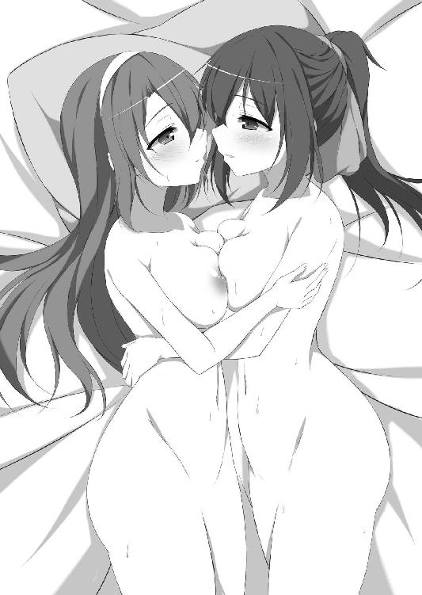
郊外に建つ、小さなチャペル。その正面階段の上で、ふわふわの純白ドレスが夏希を包む。隣を見れば、似たデザインの衣装の茉友が、はにかみながら立っている。白く輝く彼女を見ているだけで頬が熱い。胸が弾む。手にしたブーケを小さく振り回し、危うく壊しそうになってしまう。
「可愛い......。茉友、可愛いよぉ......！」
「夏希ちゃんてば、テンション上がりすぎだよ。ウェディングドレスなんて滅多に着られないから、気持ちは分かるけど」
まるで心の中を見抜いたように、クスクスと茉友が笑う。でも、それでは正解は半分。
（あたしが可愛いって言ってるのは、茉友なんだけどな）
こんな豪華なドレスを着られるのは、もちろん嬉しい。でもそれ以上に、夏希は、花嫁衣装の茉友に見惚れていた。
これが本当の結婚式なら幸せの絶頂なのだろうけど、残念ながら、今日のこれはアルバイト。結婚式場のホームページに、ドレスのサンプルを載せるための、そのモデル。
本来は茉友が受けたお仕事で、彼女ひとりの予定だったみたいだ。でも打ち合わせの中で、もうひとり花嫁役の子が欲しいという話が出て、茉友が夏希を誘ってくれた。この前、プロの現場を体験できないかと相談したので、さっそく要望を聞いてくれたみたいだ。
でも夏希が希望したのは見学で、表舞台に立つことではなかったはず。
「本当にあたしでよかったの？ 事務所には、他のモデルさんもいるんでしょ？」
「大丈夫。ちゃんと社長さんの了承は取ってあるから」
茉友の事務所の社長とは、つまり彼女のお母さん。最初に家を訪ねた時に、女優になるかモデルを続けるかで揉めていた。あれからどんな結論が出たのか、詳しい話を聞かされていないので気にはなっていた。
「そういえば、お母さんとは......」
「うん。夏希ちゃんには心配させちゃったけど、大丈夫だよ。もっとしっかりモデルに向き合いたいって言ったら、分かってくれた。......やっぱりお母さんも、わたしがこのお仕事に乗り気じゃないのが気になっていたみたい」
「そっか」
母親は母親なりに、引っ込み思案な娘を心配していただけ。だから、モデルにやる気を見せている最近は、あまりしつこく女優女優とは言わなくなったらしい。
「だからって、母娘共演を諦めたわけじゃないみたいだけどね」
茉友が、苦笑いしながら舌を出す。まだまだ話し合いの余地がありそうだけど、何にせよ、茉友の方から頼みごとができるくらいには仲直りしたみたいで、ひと安心。
おかけで夏希にも、自分の姿を観察できるくらいの余裕が出てきた。
「あー。でもやっぱりドレスっていいなぁ......。あたし、ウェディングドレス専門のデザイナーになろうかな」
「えー？ うーん、ドレスもいいけどぉ、わたし、もっと色々な服も着たーい」
茉友が、甘えたように身体を寄せる。もう夏希専属モデルになったつもりみたいだ。
「あ、そうだ茉友。昨日、小田桐さんに、どこの専門学校がいいか教えてもらったんだ」
「え、わたしに内緒で？ ていうか、よく彼女の連絡先が分かったね」
以前夏希が忘れたスケッチブック、小田桐が茉友を介して返してくれたときに連絡先が書いてあったから。ひとりで行くのは緊張したけど、この前の厳しさが嘘のように、親切に相談に乗ってくれた。
「そっか......。いよいよ夏希ちゃんも、夢に向かって動き出したんだね」
「まだだよ。だって進学までには時間があるし、ゆっくり考えるつもり。それに......」
じっと茉友を見詰める。もう、自信がないなんて拗ねたりしない。夢を追いかけると決めた。でも、彼女と過ごす時間は犠牲にしない。絶対に。
夏希の無言の視線に、茉友は首を傾げるけれど、聞き返しもせず微笑み返してくれる。
「はーい、おふたりさん。それでは、この階段に立ってくださ～い」
「は......はいっ！」
見詰め合っていたら、女性のカメラマンに立ち位置を指示された。急いでチャペル前の階段の中央に移動し、並んで立つ。ブーケを両手で持って、ポーズを決める。でも──。
「ど......どうしよう茉友......。き、きき......緊張してきちゃった......」
カメラと向かい合ったら、急に自信がなくなってきた。ちゃんと綺麗に写るだろうか。変な写真しかできなくて、式場の評判を落としたらどうしよう。そもそも、自分は花嫁に見えるんだろうか。
（モデルって......こんな責任重大なの!?）
今さらそんなことに気づき、怖気づいていたら、頬に柔らかなものが触れた。慌てて横を見ると、ピンクのリップの茉友が、ひまわりみたいな笑顔で腕を絡めてきた。
「夏希ちゃん、リラックス。こういう時は楽しむの。幸せな自分を、写真に残すの」
「茉友......」
緊張が消えた。彼女がいれば大丈夫。茉友が隣にいる限り、何も怖くない。
落ち着きを取り戻し、再び正面を向く。すると女性カメラマンが、困ったように、でも何だか楽しそうに、苦笑いしていた。
「ふたりとも仲がいいのね～。せっかくだしぃ、プライベート用に、一枚撮っとく？」
そして、悪戯っぽくウインクする。多くの人を被写体として見てきた眼は、どうやら、夏希たちの関係を何となく見抜いたらしい。さすがに焦ったけれど、彼女にはそんな人たちも珍しくないのか、好意的に受けとめてくれている感じ。
なら、断る理由なんてない。ふたりの花嫁は満面の笑みで頷くと、顔を寄せ合い、シャッター音を聞きながら、唇と唇で誓いのキスを交わした。
また新たな百合カップルが誕生しました。今回は、ふたりの女の子がイチャイチャしまくります。このヒロインは、果たして体型的にモデルに向いているんだろうかとか、そんなことは問題ではありません。女の子が女の子とイチャイチャするのが重要なのです。
あらおし先生の作品のイラストを担当させて頂きますのもこれで３作目、そのすべてが百合作品でございます。有難うございます。
今回は前作までとはかわって女子校が舞台！ やはり女子高生は良いものです。
女子高生バンザイ。女子校百合バンザイ。
二次元ドリーム文庫
百合色コーディネート
著者 あらおし悠
発行 株式会社キルタイムコミュニケーション
〒104-0041 東京都中央区新富1-3-7ヨドコウビル1Ｆ
編集部 TEL 03-3551-6147／FAX 03-3551-6146
販売部 TEL 03-3555-3431／FAX 03-3551-1208
URL http://ktcom.jp/
©Yuu Araoshi 2015
当ファイルは、二次元ドリーム文庫『百合色コーディネート』（2015年4月23日 初版発行）に基づいて作成しております。
※本作品の全部あるいは一部を無断で複製・転載・配信・送信したり、ホームページ上に転載することを禁止します。本作品の内容を無断で改変、改ざん等行うことも禁止します。また、有償・無償にかかわらず本作品を第三者に譲渡することはできません。
※本作品は電子書籍配信用に再編集しております。